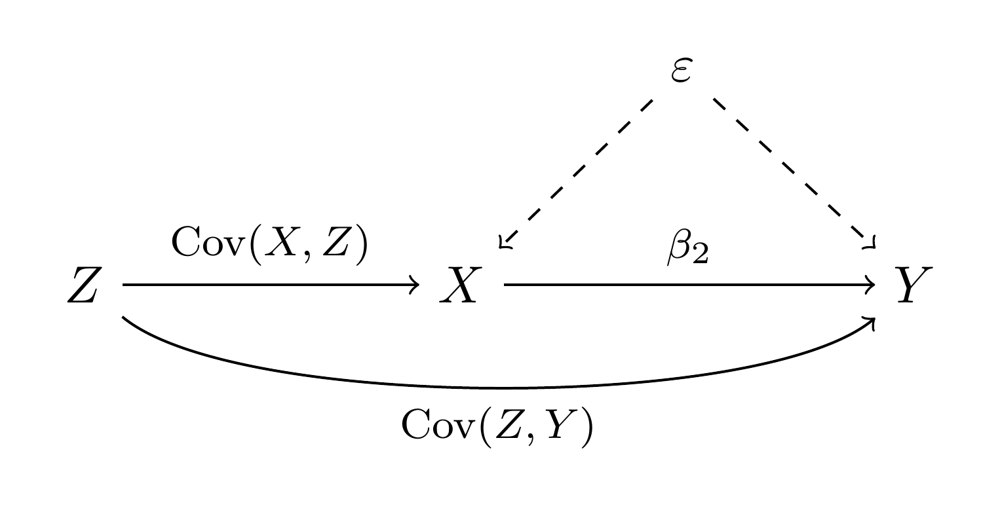

source("functions/sim_linear_model.r")
mu <- c(4,10)
Sigma <- matrix(c(2, -0.5, -0.5, 5), nrow = 2)
results <- sim_linear_model(
beta = c(1, 3, 2),
n = 1000,
dist_vec = c(rmvnorm, rnorm),
dist_params_list = list(list(mu, Sigma), list(0, 1))
)
model <- lm(y ~ x2, data = results$observed_data) %>%
tidy()8 Endogeniety I: IV and 2SLS
Our first departure from the classical linear model \(\mathcal P_\text{LM}\) will come in the form of dropping the assumption that \(\text{E}\left[\mathbf{X}'\boldsymbol{\varepsilon}\right] = \mathbf{0}\), i.e our regressors are endogenous. This situation is rather serious, as it prevents the linear model from being identified. Furthermore, the problem is common in applications. There are three main sources of endogeneity:
- Omitted variables
- Measurement error
- Simultaneity
For now we’ll consider the first two, and discuss the third on in Section @ref(endogeniety-ii-simultaneous-equation-models). Fortunately, we can address endogeneity with the instrumental variables estimator (a special case of which is the two-stage least squares estimator).
8.1 Omitted Variables and Measurement Error
Example 8.1 Recall the Example @ref(exm:endogex) where we considered a model relating income to education and other determinants of salary. Suppose the true model is \[ \log(income_i) = \beta_1 + \beta_2\cdot educ_i + \beta_3 \cdot experiance_i + \varepsilon_i,\] where \(\varepsilon_i\) are the unobserved factors impacting salary, \(educ_i\) measure years of post-secondary education, \(experiance_i\) measures years of work experience, and \(\text{Cov}\left(educ, experiance\right) < 0\) (the longer you go to school, the less work experience you tend to have). Now suppose we incorrectly specify the model \[ \log(income_i) = \gamma_1 + \gamma_2\cdot educ_i + u_i,\] where \(u_i\) are all other factors impacting salary. We’ve omitted \(experiance_i\) as a regressor, so it’s implicitly included in \(u_i\): \[ u_i = \beta_3 \cdot experiance_i + \varepsilon_i.\] We no longer satisfy the assumption \(\text{E}\left[\mathbf{X}'\boldsymbol{\varepsilon}\right] = \mathbf{0}\), as \(\text{Cov}\left(educ_i, u_i\right) \neq 0\) because \(\text{Cov}\left(educ, experiance\right) < 0\). What happens if we go ahead and attempt to estimate \(\beta_1\) and \(\beta_2\) anyway? Set \(\boldsymbol{\beta}= [1,3,2]'\), and \(\varepsilon_i \overset{iid}{\sim}N(0,1)\).
| term | estimate | std.error | statistic | p.value |
|---|---|---|---|---|
| (Intercept) | 22.557776 | 0.4552041 | 49.55530 | 0 |
| x2 | 2.579096 | 0.1061940 | 24.28665 | 0 |
The true parameters don’t even fall within the 95% confidence intervals centered at our estimates.
In general, suppose \[\mathbf{Y}= [\mathbb{X},\mathbb{Z}][\boldsymbol{\beta}, \boldsymbol \delta]' + \boldsymbol{\varepsilon}= \mathbb{X}\boldsymbol{\beta}+ \mathbb{Z}\boldsymbol \delta + \boldsymbol{\varepsilon},\] where we attempt to estimate \(\boldsymbol{\beta}\) via \(\hat{\boldsymbol\beta}_\text{OLS} \) despite omitting regressors \(\mathbf Z\) from our model, and all our Gauss-Markov assumptions are met. Note that \(\boldsymbol{\beta}\) is still identified, as \(\text{E}\left[\mathbf{X}'\boldsymbol{\varepsilon}\right] = \mathbf{0}\). \[\begin{align*} \hat{\boldsymbol\beta}_\text{OLS,OV} & = (\mathbb{X}'\mathbb{X})^{-1}\mathbb{X}'\mathbf{Y}\\ & = (\mathbb{X}'\mathbb{X})^{-1}\mathbb{X}'(\mathbb{X}\boldsymbol{\beta}+ \mathbb{Z}\boldsymbol \delta + \boldsymbol{\varepsilon})\\ & = \boldsymbol{\beta}+ (\mathbb{X}'\mathbb{X})^{-1}\mathbb{X}'\mathbb{Z}\boldsymbol\delta + (\mathbb{X}'\mathbb{X})^{-1}\mathbb{X}'\boldsymbol{\varepsilon}. \end{align*}\] Our estimator is now inconsistent: \[\begin{align*} \mathop{\mathrm{plim}}\hat{\boldsymbol\beta}_\text{OLS,OV} & = \boldsymbol{\beta}+ \mathop{\mathrm{plim}}\left[(\mathbb{X}'\mathbb{X})^{-1}\mathbb{X}'\mathbb{Z}\boldsymbol\delta\right] + \mathop{\mathrm{plim}}\left[(\mathbb{X}'\mathbb{X})^{-1}\right]\underbrace{\mathop{\mathrm{plim}}\left[\mathbb{X}'\boldsymbol{\varepsilon}\right]}_\mathbf{0}\\ & = \boldsymbol{\beta}+ \mathop{\mathrm{plim}}\left[(\mathbb{X}'\mathbb{X})^{-1}\mathbb{X}'\mathbb{Z}\boldsymbol\delta\right]. \end{align*}\]
This phenomenon is referred to as omitted variable bias (OVB). The use of the word “bias” here is a bit misleading, but follows from an interpretation of inconsistency as a persistent bias despite \(n\to\infty\)
Example 8.2 (OVB with a Simple Linear Model) Suppose our linear model is \(Y = \alpha + \beta X+ \gamma Z + \varepsilon\), and we attempt to estimate \((\beta_0,\beta_1)\) with \(\hat{\boldsymbol\beta}_\text{OLS,OV} \). In this case, \[\begin{align*} \hat \beta_\text{OLS,OV} & =\frac{\sum_{i=1}^n (X_i -\bar X)(Y_i - \bar Y)}{\sum_{i=1}^n (X_i -\bar X)^2}\\ & = \frac{\sum_{i=1}^n (X_i -\bar X)[(\alpha + \beta X+ \gamma Z + \varepsilon) - \bar Y]}{\sum_{i=1}^n (X_i -\bar X)^2}\\ & = \beta + \frac{\sum_{i=1}^n (X_i -\bar X)(Z_i - \bar Z)}{\sum_{i=1}^n (X_i -\bar X)^2}\\ & = \beta + \gamma \cdot \frac{\sum_{i=1}^n (X_i -\bar X)(Z_i-\bar Z)}{\sum_{i=1}^n (X_i -\bar X)^2}. \end{align*}\] The expectation of this is \[\hat\beta_\text{OLS,OV} \overset{p}{\to}\beta + \gamma \cdot \mathop{\mathrm{plim}}\frac{n^{-1}\sum_{i=1}^n (X_i -\bar X)(Z_i-\bar Z)}{n^{-1}\sum_{i=1}^n (X_i -\bar X)^2} =\boldsymbol{\beta}+ \gamma \frac{\text{Cov}\left(X,Z\right)}{\text{Var}\left(X\right)} .\]
If we let \(\alpha = 1\), \(\beta = 2\), \(\gamma = 3\), and \(\text{Var}\left(X\right) = 1\), then \[\mathop{\mathrm{plim}}\hat\beta_\text{OLS,OV} = 2 + 3\text{Cov}\left(X,Z\right).\] If we simulate this estimator for different values of \(\text{Cov}\left(X,Z\right)\), taking \(n\) to be very large, then we should see our estimates approximately follow the line \(2 + 3\text{Cov}\left(X,Z\right)\) when plotted against \(\text{Cov}\left(X,Z\right)\).
iter <- function(cov_xz, var_x, var_z, beta, gamma, n, mu){
Sigma <- matrix(c(var_x, cov_xz, cov_xz, var_z), nrow = 2)
results <- sim_linear_model(
beta = c(1, beta, gamma),
n = n,
dist_vec = c(rmvnorm, rnorm),
dist_params_list = list(list(mu, Sigma), list(0, 1))
)
output <- lm(y ~ x2, data = results$observed_data) %>%
tidy() %>%
filter(term == 'x2') %>%
select(estimate) %>%
mutate(cov_xz = cov_xz)
return(output)
}
sim <- function(cov_xz_vals, var_x, var_z, beta, gamma, n, mu){
output <- cov_xz_vals %>%
map(iter, var_x = var_x, var_z = var_z, beta = beta, gamma = gamma, n = n, mu = mu) %>%
bind_rows
return(output)
}
results <- sim(-1 + (1:100)/50, 1, 1, 2, 3, 1e6, c(4,10))Show code which generates figure
results %>%
ggplot(aes(cov_xz, estimate)) +
geom_point(size = 0.5) +
labs(x = "Cov(X,Z)", y = "Estimated β") +
theme_minimal() 
What happens if instead of omitting a variable from a model, our variables happen to be prone to some degree of measurement error? This is a common scenario in the social sciences where collected data is subject to human error, rounding errors, etc. Suppose a true linear model is specified as \(\mathbf{Y}= \mathbb{X}^*\boldsymbol{\beta}+ \boldsymbol{\varepsilon}\) for regressors \(\mathbf{X}^*\) where \(\text{E}\left[\mathbf{X}^{*\prime}\boldsymbol{\varepsilon}\right] = \mathbf{0}\). Much like how we do not observe realizations of \(\boldsymbol{\varepsilon}\), we do not observe realizations of \(\mathbf{X}^*\), instead observing \(\mathbf{X}= \mathbf{X}^* + \mathbf u\) where \(\mathbf u\) corresponds to measurement error. We’ll assume that this measurement error is independent of \(\boldsymbol{\varepsilon}\), independent of \(\mathbf{X}^*\), and is mean zero.1 Our model can be rewritten as \[ \mathbf{Y}= \mathbb{X}^*\boldsymbol{\beta}+ \boldsymbol{\varepsilon}= (\mathbf{X}- \mathbf u)\boldsymbol{\beta}+ \boldsymbol{\varepsilon}= \mathbf{X}\boldsymbol{\beta}+ \underbrace{(\boldsymbol{\varepsilon}- \mathbf u\boldsymbol{\beta})}_{\boldsymbol \nu}.\] In this case \[\text{E}\left[\mathbf{X}\boldsymbol \nu\right] = \text{E}\left[(\mathbf{X}^* + \mathbf u)(\boldsymbol{\varepsilon}- \mathbf u\boldsymbol{\beta})\right] = -\boldsymbol{\beta}\text{E}\left[\mathbf u'\mathbf u\right] = -\boldsymbol{\beta}\text{Var}\left(\mathbf u\right).\] Much like in the case of OVB, \(\hat{\boldsymbol\beta}_\text{OLS} \) will be inconsistent.
\[\begin{align*} \hat{\boldsymbol\beta}_\text{OLS,ME} &= \boldsymbol{\beta}+ (\mathbb{X}'\mathbb{X})^{-1}\mathbb{X}'\boldsymbol{\varepsilon}\\ & = \boldsymbol{\beta}+ (\mathbb{X}'\mathbb{X})^{-1}\mathbb{X}'(\boldsymbol{\varepsilon}- \mathbf u\boldsymbol{\beta})\\ & = \boldsymbol{\beta}+ (\mathbb{X}'\mathbb{X})^{-1}\mathbb{X}'\boldsymbol{\varepsilon}- (\mathbb{X}'\mathbb{X})^{-1}\mathbb{X}'\mathbf u\boldsymbol{\beta}\\ \mathop{\mathrm{plim}}\hat{\boldsymbol\beta}_\text{OLS,ME} & = \boldsymbol{\beta}+ \mathop{\mathrm{plim}}(\mathbb{X}'\mathbb{X})^{-1}\mathbb{X}'\boldsymbol{\varepsilon}+ \mathop{\mathrm{plim}}(\mathbb{X}'\mathbb{X})^{-1}\mathbb{X}'\mathbf u\boldsymbol{\beta}\\ & = \boldsymbol{\beta}+ \mathop{\mathrm{plim}}(\mathbb{X}'\mathbb{X})^{-1}\mathbb{X}'\mathbf u\boldsymbol{\beta}& (\mathop{\mathrm{plim}}\mathbb{X}'\boldsymbol{\varepsilon}= \mathbf{0}) \end{align*}\]
For \(j\neq 1\) (there won’t be measurement error when \(j=1\), as this is just the regressor of 1 which gives the intercept) this simplifies to
\[ \mathop{\mathrm{plim}}\hat \beta_{\text{OLS,ME},j} = \beta_j \left(\frac{\text{Var}\left(X_j^*\right)}{\text{Var}\left(X_j^*\right) + \text{Var}\left(u_j^*\right)}\right).\] This phenomenon is known as attenuation bias. The term in parentheses will always fall in the interval \((0,1)\), so \(\left\lvert\mathop{\mathrm{plim}}\hat \beta_{\text{OLS,ME},j}\right\rvert < \left\lvert\boldsymbol{\beta}_j\right\rvert\), hence the name attentuation bias.
8.2 An Updated Linear Model, Identification, and the IV estimator
In general, if \(\text{E}\left[\mathbf{X}'\boldsymbol{\varepsilon}\right] \neq \mathbf{0}\), then \(\boldsymbol{\beta}\) is not identified for the linear model \(\mathcal P_\text{LM}\). Estimation is a non-starter in this case. Even if we had the “perfect” estimate for \(\boldsymbol{\beta},\) the parameter may map to multiple elements \(P_{\boldsymbol{\beta},\sigma^2}\in \mathcal P_\text{LM}\), so it is impossible to determine which model value our data was drawn from. If we drop the assumption \(\text{E}\left[\mathbf{X}'\boldsymbol{\varepsilon}\right] \neq \mathbf{0}\) from the linear model, then we’ll need to replace it with some additional assumptions/structure.
While \(\text{E}\left[\mathbf{X}'\boldsymbol{\varepsilon}\right] \neq \mathbf{0}\), perhaps it is the case that there exists some other random vector \(\mathbf{Z}\) which does satisfy \(\text{E}\left[\mathbf{Z}'\boldsymbol{\varepsilon}\right] = \mathbf{0}\). Is this helpful – no. For a given model with some structural error \(\boldsymbol{\varepsilon}\), there are nearly infinite candidates for \(\mathbf{Z}\) which satisfy this. Consider the model \[\log(income_i) = \beta_0 + \beta_1\cdot educ_i + \varepsilon_i,\] where \(\varepsilon\) are unobserved factors impacting income. What are some random variables \(Z\) which are uncorrelated with \(\varepsilon\). A ton! Weather during \(i\)’s tenth birthday, \(i\)’s first concert, \(i\)’s favorite flavor of ice cream, etc. There is an endless list of random variables that are so completely irrelevant to someone’s income, that they are uncorrelated with \(\varepsilon\). This is why \(\text{E}\left[\mathbf{Z}'\boldsymbol{\varepsilon}\right] = \mathbf{0}\) is sometimes read as “\(\mathbf{Z}\) is orthogonal to \(\boldsymbol{\varepsilon}\).” Not only does it hold in the mathematical sense of the word, but it also holds in the colloquial sense of the word meaning “has nothing to do with.” What we want is \(\mathbf{Z}\) to also be correlated with \(\mathbf{X}\), such that \(\mathbf{Z}\) is a sort of proxy/surrogate for \(\mathbf{X}\) with no direct impact on \(\mathbf{Y}\). We’ll now generalize the linear model to introduce this set of variables \(\mathbf{Z}\) in lieu of the assumption \(\text{E}\left[\mathbf{X}'\boldsymbol{\varepsilon}\right] \neq \mathbf{0}\).
Definition 8.1 The (linear) instrumental variables (IV) model is defined as \(\mathcal P_\text{IV} = \{P_{\boldsymbol{\beta},\sigma^2} \mid \boldsymbol{\beta}\in \mathbb R^{K}, \sigma^2\in\mathbb R\}\), where \[\begin{align*} P_{\boldsymbol{\beta},\sigma^2} &= \left\{F_{\mathbb{X},\mathbb{Z},\boldsymbol{\varepsilon}} \middle| \begin{matrix}Y= \mathbb{X}\boldsymbol{\beta}+\boldsymbol{\varepsilon}, \ \text{E}\left[\boldsymbol{\varepsilon}'\boldsymbol{\varepsilon}\mid \mathbf{X}\right]=\sigma^2\mathbf I,\ f_{(\mathbb{X},\mathbb{Z})}=\textstyle\prod_{i=1}^n f_{(\mathbf{X}_i,\mathbf{Z}_i)},\\ \text{rank}\left(\text{E}\left[\mathbf{Z}'\mathbf{X}\right]\right) = K,\ \text{E}\left[\boldsymbol{\varepsilon}\mid \mathbb{X}\right] =\boldsymbol \eta,\ \text{E}\left[\boldsymbol{\varepsilon}\mid \mathbb{Z}\right] = \mathbf{0},\ \text{E}\left[\mathbf{Z}'\mathbf{X}\right] \neq \mathbf{0}\end{matrix} \right\},\\ \mathbb{X}& = [\mathbf{X}_1, \cdots, \mathbf{X}_j, \cdots \mathbf{X}_K] = [\mathbf{X}_1, \cdots, \mathbf{X}_i, \cdots \mathbf{X}_n]',\\ \mathbb{Z}& = [\mathbf{Z}_1, \cdots, \mathbf{Z}_j, \cdots \mathbf{Z}_K] = [\mathbf{Z}_1, \cdots, \mathbf{Z}_i, \cdots \mathbf{Z}_n]',\\ \dim(\mathbf{Z}) & = \dim(\mathbf{X}) = K\\ \mathbf{Y}& = [Y_1, \ldots, Y_n]. \end{align*}\] We refer to the random vector \(\mathbf{Z}\) as instrumental variables (IVs). We have assumed that \(\text{E}\left[\boldsymbol{\varepsilon}\mid \mathbb{Z}\right] = \mathbf{0}\), which subsumes the assumption that \(\text{E}\left[\mathbf{Z}'\boldsymbol{\varepsilon}\right] = \mathbf{0}\). The assumption that \(\mathbf{Z}\) is (weakly) exogenous (uncorrelated with \(\boldsymbol{\varepsilon}\)) is known as instrumental validity, while the assumption that \(\text{E}\left[\mathbf{X}'\mathbf{Z}\right] \neq \mathbf{0}\) (\(\mathbf{Z}\) and \(\mathbf{X}\) are correlated) is known as the relevance condition. The assumption that \(\text{E}\left[\mathbf{Z}'\boldsymbol{\varepsilon}\right] = \mathbf{0}\) is also sometimes known as the exclusion restriction (\(\mathbf{Z}\) is excluded from the determinants of \(Y\)). Finally, we sometimes refer to \(\text{rank}\left(\text{E}\left[\mathbf{Z}'\mathbf{X}\right]\right) = K\) as the rank condition.
Instrumental validity and the relevance condition are usually written as: \[\begin{align*} \text{Cov}\left(\mathbf{Z},\boldsymbol{\varepsilon}\right)& = \mathbf{0},\\ \text{Cov}\left(\mathbf{X}, \mathbf{Z}\right) &\neq \mathbf{0}. \end{align*}\] Technically, this is not 100% accurate. The relevance condition is actually a combination of \(\text{rank}\left(\text{E}\left[\mathbf{Z}'\mathbf{X}\right]\right) = K\) and \(\text{Cov}\left(\mathbf{X}, \mathbf{Z}\right)\neq \mathbf{0}\). As highlighted by Wooldridge (2010), the relevance condition is not “regressors and instruments are uncorrelated”. Instead, it is “instruments and endogenous regressors are partially correlated holding the exogenous regressors fixed.” In other words, the linear projection of the instruments onto all regressors has nontrivial coefficients for endogenous regressors. This is equivalent to \(\text{rank}\left(\text{E}\left[\mathbf{Z}'\mathbf{X}\right]\right) = K\) and \(\text{Cov}\left(\mathbf{X}, \mathbf{Z}\right)\neq \mathbf{0}\).
Even if one regressor is endogenous, \(\text{E}\left[X_j\boldsymbol{\varepsilon}\right] \neq \mathbf{0}\) for some \(j\), then \(\text{E}\left[\mathbf{X}'\boldsymbol{\varepsilon}\right] \neq \mathbf{0}\). If this is the case, we can simply define a portion of \(\mathbf{Z}\) to be the exogenous regressors. Formally, if \([X_1,\ldots, X_J]\) are weakly exogenous while \([X_{J+1}, \ldots, X_K]\) are endogenous, then define \(Z_1 = X_1,\ldots ,Z_J=X_j\).
Example 8.3 (Linear Model as Special Case of IV Model) A special case of the linear IV model is the classical linear model. Just let \(\boldsymbol\eta = \mathbf{0}\) and \(\mathbf{X}= \mathbf{Z}\). This fact can be written as \(\mathcal P_\text{LM}\subset \mathcal P_\text{IV}\).
Whenever we define a new model, we need to make sure our parameters are identified.
Theorem 8.1 (Identification of Linear IV Model) The linear IV model is identified as a result of the following assumptions: \(\text{E}\left[\mathbf{Z}'\boldsymbol{\varepsilon}\right] = \mathbf{0}\), \(\text{E}\left[\mathbf{X}'\mathbf{Z}\right] \neq \mathbf{0}\), and \(\text{rank}\left(\text{E}\left[\mathbf{Z}'\mathbf{X}\right]\right) = K\).
Proof. First we will show \(\boldsymbol{\beta}\) is identified. Let \(P_{\boldsymbol{\beta},\sigma^2} = P_{\boldsymbol{\beta}^*,\sigma^2}\) for two elements of \(\mathcal P_\text{IV}\), and suppose for a contradiction that \(\boldsymbol{\beta}\neq\boldsymbol{\beta}^*\). We can begin by writing \(\boldsymbol{\beta}\): \[\begin{align*} &\text{E}\left[\mathbf{Z}'\boldsymbol{\varepsilon}\right] = \mathbf{0}\\ \implies & \text{E}\left[\mathbf{Z}'(Y-\mathbf{X}\boldsymbol{\beta})\right] = \mathbf{0}& (\boldsymbol{\varepsilon}= (Y-\mathbf{X}\boldsymbol{\beta}))\\ \implies & \text{E}\left[\mathbf{Z}'Y\right]-\boldsymbol{\beta}\text{E}\left[\mathbf{Z}'\mathbf{X}\right]= \mathbf{0}\\ \implies & \text{E}\left[\mathbf{Z}'Y\right] = \boldsymbol{\beta}\text{E}\left[\mathbf{Z}'\mathbf{X}\right]\\ \end{align*}\] By the definition of \(\mathcal P_\text{IV}\), the moments \(\text{E}\left[\mathbf{Z}'\mathbf{X}\right]\) and \(\text{E}\left[\mathbf{Z}'Y\right]\) are the same for the model values \(P_{\boldsymbol{\beta},\sigma^2}\) and \(P_{\boldsymbol{\beta}^*,\sigma^2}\), so \(\boldsymbol{\beta}^*\) must also satisfy \(\text{E}\left[\mathbf{Z}'Y\right] = \boldsymbol{\beta}\text{E}\left[\mathbf{Z}'\mathbf{X}\right]\). This contradicts the assumption that \(\text{rank}\left(\text{E}\left[\mathbf{Z}'\mathbf{X}\right]\right) = K\). If \(\boldsymbol{\beta}\) is identified, then \(\sigma^2\) is as well because we can write it in terms of \(\boldsymbol{\beta}\): \[ \text{E}\left[(\mathbf{Y}-\mathbb{X}\boldsymbol{\beta})'(\mathbf{Y}-\mathbb{X}\boldsymbol{\beta})\mid \mathbf{X}\right]=\sigma^2\mathbf I.\] space
So how do we estimate \(\boldsymbol{\beta}\) for the model \(\mathcal P_\text{IV}\)? If it wasn’t clear from the examples dealing with OVB and measurement error, the answer is not with \(\hat{\boldsymbol\beta}_\text{OLS} \).
Proposition 8.1 (Inconsisteny of OLS) If \(P_{\boldsymbol{\beta},\sigma^2} \in \mathcal P_\text{IV}\), then \(\hat{\boldsymbol\beta}_\text{OLS} \) is biased and inconsistent. In particular, \[\begin{align*} \text{E}\left[\hat{\boldsymbol\beta}_\text{OLS} \mid \mathbf{X}\right] & = \boldsymbol{\beta}+ (\mathbb{X}'\mathbb{X})^{-1}\mathbb{X}\boldsymbol \eta \neq \boldsymbol{\beta},\\ \mathop{\mathrm{plim}}\hat{\boldsymbol\beta}_\text{OLS} & = \boldsymbol{\beta}+ \text{E}\left[\mathbf{X}'\mathbf{X}\right]^{-1}\boldsymbol \gamma \neq \boldsymbol{\beta},\\ \end{align*}\] where \(\text{E}\left[\boldsymbol{\varepsilon}\mid \mathbb{X}\right] =\boldsymbol \eta\) and \(\text{E}\left[\mathbf{X}'\boldsymbol{\varepsilon}\right] = \boldsymbol \gamma\).
Proof. \[\begin{align*} \text{E}\left[\hat{\boldsymbol\beta}_\text{OLS} \mid \mathbb{X}\right] & = \text{E}\left[\boldsymbol{\beta}+(\mathbb{X}'\mathbb{X})^{-1}\mathbb{X}'\boldsymbol{\varepsilon}\mid \mathbb{X}\right]\\ & = \boldsymbol{\beta}+ (\mathbb{X}'\mathbb{X})^{-1}\mathbb{X}'\text{E}\left[\boldsymbol{\varepsilon}\mid \mathbb{X}\right]\\ & = \boldsymbol{\beta}+ (\mathbb{X}'\mathbb{X})^{-1}\mathbb{X}'\boldsymbol \eta\\ \mathop{\mathrm{plim}}\hat{\boldsymbol\beta}_\text{OLS} & = \boldsymbol{\beta}+ \mathop{\mathrm{plim}}\left[\left(\frac{1}{n}\sum_{i=1}^n\mathbf{X}_i'\mathbf{X}_i\right)^{-1}\left(\frac{1}{n}\sum_{i=1}^n\mathbf{X}_i'\varepsilon_i\right)\right]\\ & = \boldsymbol{\beta}+ \mathop{\mathrm{plim}}\left(\frac{1}{n}\sum_{i=1}^n\mathbf{X}_i'\mathbf{X}_i\right)^{-1}\mathop{\mathrm{plim}}\left(\frac{1}{n}\sum_{i=1}^n\mathbf{X}_i'\varepsilon_i\right) & (\text{Slutsky's Theorem})\\ & = \boldsymbol{\beta}+ \text{E}\left[\mathbf{X}'\mathbf{X}\right]^{-1}\text{E}\left[\mathbf{X}'\boldsymbol{\varepsilon}\right] & (\text{LLN})\\ & = \boldsymbol{\beta}+ \text{E}\left[\mathbf{X}'\mathbf{X}\right]^{-1}\boldsymbol \gamma \end{align*}\] space
Example 8.4 Let’s verify that \(\hat{\boldsymbol\beta}_\text{OLS} \) is inconsistent. Suppose \(\mathbb{X}= (\mathbf 1, X)\) where \((X,\varepsilon)\overset{iid}{\sim}N(\boldsymbol \mu, \boldsymbol{\Sigma})\) for \(\boldsymbol \mu = [0,1]'\) \[\boldsymbol{\Sigma}= \begin{bmatrix}5&2\\2&1 \end{bmatrix}.\] We have \[\begin{align*} \text{E}\left[X\varepsilon\right] &= \text{Cov}\left(X,\varepsilon\right) + \underbrace{\text{E}\left[X\right]}_0\underbrace{\text{E}\left[\varepsilon\right]}_1 = 2. \end{align*}\] Therefore \[\begin{align*} \boldsymbol \gamma &= \text{E}\left[\mathbb{X}'\boldsymbol{\varepsilon}\right] = \begin{bmatrix}\text{E}\left[1\boldsymbol{\varepsilon}\right]\\\text{E}\left[X\boldsymbol{\varepsilon}\right] \end{bmatrix} = \begin{bmatrix}1\\2 \end{bmatrix} \end{align*}\]
If we draw realizations x and e of \((X,\varepsilon)\), we should find that colMeans(X*e) should be approximately \([1,2]'\) by the LLN.
source("functions/sim_endog_linear_model.r")
Sigma <- matrix(c(5,2,2,1), nrow = 2)
mu <- c(0,1)
results <- sim_endog_linear_model(
beta = c(1,2),
n = 1e5,
dist_vec = c(rmvnorm),
dist_params_list = list(list(mu, Sigma))
)
colMeans(results$X*results$e) x1 x2
1.001027 2.008658 Let’s now calculate \(\mathop{\mathrm{plim}}\hat{\boldsymbol\beta}_\text{OLS} \). \[\begin{align*} \text{E}\left[\mathbf{X}'\mathbf{X}\right]^{-1} &= \begin{bmatrix}\text{E}\left[1\right] & \text{E}\left[X\right] \\ \text{E}\left[X\right] & \text{E}\left[X^2\right] \end{bmatrix}^{-1} = \begin{bmatrix}1 & 0 \\ 0 & \text{Var}\left(X\right) \end{bmatrix}^{-1} = \begin{bmatrix}1 & 0 \\ 0 & 5 \end{bmatrix}^{-1} = \begin{bmatrix}1 & 0 \\ 0 & 0.2 \end{bmatrix}\\ \mathop{\mathrm{plim}}\hat{\boldsymbol\beta}_\text{OLS} & = \boldsymbol{\beta}+ \text{E}\left[\mathbf{X}'\mathbf{X}\right]^{-1}\boldsymbol \gamma= \boldsymbol{\beta}+ \begin{bmatrix}1 & 0 \\ 0 & 0.2 \end{bmatrix}\begin{bmatrix}1\\2 \end{bmatrix}= \boldsymbol{\beta}+ \begin{bmatrix}1\\0.4 \end{bmatrix} \end{align*}\] If we let \(\boldsymbol{\beta}= [1,2']\) we should see our estimates converge to \([2, 2.4]'\) as \(n\to\infty\).
iter <- function(k, model){
output <- model$observed_data %>%
filter(row_number() <= k) %>%
lm(formula = y ~ x2, data = .) %>%
tidy() %>%
select(
term,
estimate
) %>%
mutate(sample_size = k) %>%
return(output)
}
sim <- function(n_vals, n, beta, dist_vec, dist_params_list, t){
model <- sim_endog_linear_model(beta, n, dist_vec, dist_params_list)
output <- n_vals %>%
map(iter, model = model) %>%
bind_rows() %>%
mutate(iter_num = t)
return(output)
}
outer_sim <- function(N, n_vals, n, beta, dist_vec, dist_params_list){
output <- 1:N %>%
map(sim, n_vals = n_vals, n = n, beta = beta, dist_vec = dist_vec, dist_params_list = dist_params_list) %>%
bind_rows()
return(output)
}
results <- outer_sim(
N = 1e3,
n_vals = (1:50)*20,
n = 1e3,
beta = c(1,2),
dist_vec = c(rmvnorm),
dist_params_list = list(list(mu, Sigma))
)Show code which generates figure
results %>%
mutate(
`True Value` = case_when(
term == "(Intercept)" ~ 1,
term == "x2" ~ 2,
),
`Limit` = case_when(
term == "(Intercept)" ~ 2,
term == "x2" ~ 2.4,
),
term = case_when(
term == "(Intercept)" ~ "β1",
term == "x2" ~ "β2",
)
) %>%
rename(Estimate = estimate) %>%
pivot_longer(!c(term, sample_size, iter_num)) %>%
mutate(line_group = paste0(iter_num, name)) %>%
ggplot(aes(sample_size, value, color = name)) +
geom_line(aes(group = line_group, size = name)) +
facet_wrap(~term) +
theme_minimal() +
labs(x = "Sample Size, n", y = "Estimates", color ="") +
scale_color_manual(values = c("black", "red", "blue")) +
scale_size_manual(values = c(0.1, 0.2, 0.2)) +
theme(legend.position = "bottom") +
guides(size="none")
An interesting feature of this problem is that our estimator for the intercept term \(\beta_1\) was inconsistent even though the corresponding regressor (the trivial random variable \(X_1 = 1\)) is exogenous. In general, the inconsistency of \(\hat{\boldsymbol\beta}_\text{OLS} \) in the presence of endogeneity is not limited to the parameters associated with endogenous variables, and will impact each parameter \(\beta_j\).
Instead of using \(\hat{\boldsymbol\beta}_\text{OLS} \), we need an estimator which makes use of the exogenous variables \(\mathbf{Z}\). There are several different ways to motivate this estimator, so we’ll go over four particularly approaches which reach the same conclusion.
- For \(\mathcal P_\text{IV}\) we can write the true population parameter as \(\boldsymbol{\beta}= \text{E}\left[\mathbf{Z}'\mathbf{X}\right]^{-1}\text{E}\left[\mathbf{Z}'Y\right]\). We can appeal to the analogy-principle here just like we did when deriving \(\hat{\boldsymbol\beta}_\text{OLS} \). It stands to reason that the estimator defined by the analogous samples will provide consistent estimates of \(\boldsymbol{\beta}\) by the LLN. This estimator is \[\hat {\boldsymbol{\beta}}= \left(\frac{1}{n}\sum_{i=1}^n\mathbf{Z}_i'\mathbf{X}_i\right)^{-1}\left(\frac{1}{n}\sum_{i=1}^n\mathbf{Z}_iY_i\right) = (\mathbb{Z}'\mathbb{X})^{-1}\mathbb{Z}'\mathbf{Y}.\]
- Another way of tackling the problem relates to marginal effects and is presented by Cameron and Trivedi (2005). This will be a little informal and is only to build intuition. In an abuse of notation, we’ll write marginal effects as \(\frac{\partial Y}{\partial \mathbf{X}}\). Ideally, we want \(\beta_j = \frac{\partial Y}{\partial X_j}\) for each \(j\). This way, when we estimate \(\boldsymbol{\beta}\), we estimate the marginal effect of \(\mathbf{X}\) on \(Y\). Unfortunately, we cannot estimate this directly with \(\mathbf{X}\) as \[ \frac{\partial Y}{\partial X_j} = \beta_j + \frac{\partial \varepsilon}{\partial X_j} \implies \beta_j \neq \frac{\partial Y}{\partial X_j}.\] If we appeal to the chain rule, we can vary \(X_j\) via our instruments \(\mathbf{Z}\): \[\begin{align*} &\frac{\partial Y}{\partial \mathbf{Z}} = \frac{\partial Y}{\partial X_j} \frac{\partial X_j}{\partial \mathbf{Z}} \\ \implies & \frac{\partial Y}{\partial X_j} = \frac{\partial Y/\partial \mathbf{Z}}{\partial X_j/\partial \mathbf{Z}} \end{align*}\] where \(\frac{\partial Y}{\partial \mathbf{Z}}\) holds \(\varepsilon\) constant as \(\text{Cov}\left(\mathbf{Z}, \boldsymbol{\varepsilon}\right) = \mathbf{0}\). The marginal effects \(\frac{\partial X_j}{\partial \mathbf{Z}}\) and \(\frac{\partial Y}{\partial \mathbf{Z}}\) correspond to the parameters in the linear projection models of \(\mathbf{Z}\) on \(X_j\) and \(Y\).2 These parameters are given by OLS estimates \((\mathbb{Z}'\mathbb{Z})^{-1}\mathbb{Z}\mathbf{X}_j\) and \((\mathbb{Z}'\mathbb{Z})^{-1}\mathbb{Z}\mathbf{Y}\), respectively, so \[ \hat\beta_j = \frac{(\mathbb{Z}'\mathbb{Z})^{-1}\mathbb{Z}'\mathbf{Y}}{(\mathbb{Z}'\mathbb{Z})^{-1}\mathbb{Z}\mathbf{X}_j}.\] If we do this for all regressors \(\mathbf{X}\), then \[ \hat{\boldsymbol{\beta}} = \frac{(\mathbb{Z}'\mathbb{Z})^{-1}\mathbb{Z}'\mathbf{Y}}{(\mathbb{Z}'\mathbb{Z})^{-1}\mathbb{Z}\mathbb{X}} = (\mathbb{Z}'\mathbb{X})^{-1}\mathbb{Z}'\mathbf{Y}\]
- We can take a graphical approach given by Pearl (2009) with the simple IV model with one endogenous regressor \(X\) and one instrument \(Z\). Suppose we have \(Y = \beta_1 + \beta_2 X + \varepsilon\), where \(\text{Cov}\left(X,\varepsilon\right) \neq 0\), along with \(\text{Cov}\left(Z,X\right) \neq 0\) and \(\text{Cov}\left(Z,\varepsilon\right) = 0\) for some instrument \(Z\). These relationships can be illustrated in the form of a directed acyclic graph (DAG).
Show code which generates figure
knitr::include_graphics("figures/iv_dag.png")

We can think of the paths which illustrate causation as being multiplicative in the sense that \(\text{Cov}\left(Z,X\right)\cdot \beta_2 = \text{Cov}\left(Z,Y\right)\), where \(\beta_2\) is a “conversion rate” between changes in \(X\) via \(Z\) and changes in \(Y\) via \(Z\) (just like the chain rule approach). This implies \(\beta_2 = \text{Cov}\left(Z,Y\right)/\text{Cov}\left(Z,X\right)\), so \[ \hat\beta_2 = \frac{\widehat{\text{Cov}}(Z,Y)}{\widehat{\text{Cov}}(Z,X)}.\] This happens to be a special case of \(\hat{\boldsymbol{\beta}}= (\mathbb{Z}'\mathbb{X})^{-1}\mathbb{Z}'\mathbf{Y}\).
- Another approach in the context of the simple linear model takes advantage of a simple substitution. \[ \text{Cov}\left(Y,Z\right) = \text{Cov}\left(\beta_1 + \beta_2 X + \varepsilon, Z\right) = \underbrace{\text{Cov}\left(\beta_1, Z\right)}_0 + \beta_2\text{Cov}\left(X,Z\right) + \underbrace{\text{Cov}\left(Z,\varepsilon\right)}_0 = \beta_2\text{Cov}\left(X,Z\right).\] This is the same result we arrived at using the DAG.
With all roads leading to Rome, we can define this estimator.
Definition 8.2 The instrumental variables (IV) estimator is defined as \[\begin{align*} \hat{\boldsymbol\beta}_\text{IV} (\mathbb{X},\mathbb{Z},\mathbf{Y})= (\mathbb{Z}'\mathbb{X})^{-1}(\mathbb{Z}'\mathbf{Y})= \left(\frac{1}{n}\sum_{i=1}^n\mathbf{Z}_i'\mathbf{X}_i\right)^{-1}\left(\frac{1}{n}\sum_{i=1}^n\mathbf{Z}_iY_i\right) \end{align*}\] An realization of this estimator (an estimate) is \[\begin{align*} \hat{\mathbf b}_\text{IV} = \hat{\boldsymbol{\beta}}_\text{IV}(\mathbf{X},\mathbf{Z},\mathbf{y}) &= (\mathbf{Z}'\mathbf{X})^{-1}(\mathbf{Z}'\mathbf{y})= \left(\frac{1}{n}\sum_{i=1}^n\mathbf{z}_i'\mathbf{z}_i\right)^{-1}\left(\frac{1}{n}\sum_{i=1}^n\mathbf{z}_iy_i\right) \end{align*}\] and will exist when the inverse \((\mathbf{Z}'\mathbf{X})^{-1}\) exists.
Example 8.5 Suppose \((X, Z, \varepsilon) \sim N(\boldsymbol \mu,\boldsymbol{\Sigma})\) where \[\begin{align*} \boldsymbol \mu & = [10,10,0]',\\ \boldsymbol{\Sigma}& = \begin{bmatrix}20 & 5 & 1\\5&20&0\\1&0&1 \end{bmatrix}, \end{align*}\] and \(Y = 1 + 3X + \varepsilon\). Let’s simulate a sample of size \(n=1000\) from this model \(P_{\boldsymbol{\beta},\sigma^2} \in \mathcal P_\text{IV}\), and then calculate \(\hat{\boldsymbol\beta}_\text{IV} \).
results <- sim_endog_linear_model(
beta = c(1, 3),
n = 1000,
dist_vec = c(rmvnorm),
dist_params_list = list(
list(
c(10, 10, 0),
matrix(c(20,5,1, 5,20,0,1,0,1), nrow = 3)
)
)
)We should confirm that our drawn sample satisfies the assumptions of the IV model.
results$sim_draws %>%
select(-x1, -z1) %>%
cov() x2 z2 e
x2 20.566712 6.06566300 1.05517270
z2 6.065663 21.94107444 0.04045295
e 1.055173 0.04045295 0.94783104Now let’s calculate \(\hat{\boldsymbol\beta}_\text{IV} \), keeping in mind that \(\mathbb{Z}\) is comprised of the instrument \(Z\) and the exogenous random variable \(1\) which gives the intercept term.
IV <- function(y, X, Z){
K <- ncol(X)
if(ncol(Z) != K) {stop("K instruments required")}
if(det(t(Z) %*% X) == 0) {stop("rank(Z'X) < K")}
output <- tibble(
parameter = paste("β", 1:K, " estimate", sep = ""),
estimate = as.numeric(solve(t(Z) %*% X) %*% t(Z) %*% y)
)
return(output)
}
IV(results$y, results$X, results$Z) %>%
knitr::kable()| parameter | estimate |
|---|---|
| β1 estimate | 0.9794175 |
| β2 estimate | 3.0066692 |
Example 8.6 (OLS is a Special Case of IV) In Example @ref(exm:spec1) we saw that \(\mathcal P_\text{LM}\subset\mathcal P_\text{IV}\). In the event \(P_{\boldsymbol{\beta},\sigma^2} \in \mathcal P_\text{LM}\), i.e \(\mathbb{Z}= \mathbb{X}\) and , then \[ \hat{\boldsymbol\beta}_\text{IV} = (\mathbb{Z}'\mathbb{X})^{-1}(\mathbb{Z}'\mathbf{Y}) = (\mathbb{X}'\mathbb{X})^{-1}(\mathbb{X}'\mathbf{Y}) = \hat{\boldsymbol\beta}_\text{OLS} .\]
8.3 Properties of the IV Estimator
One of the reasons OLS is so special is because we’re able to characterize its finite sample properties with the Gauss-Markov theorem. This is the exception rather than the rule when assessing estimators. In most cases, we can only arrive at tractable results in the form of an estimator’s asymptotic properties. Is this the case with \(\hat{\boldsymbol\beta}_\text{IV} \)? Let’s see if \(\hat{\boldsymbol\beta}_\text{IV} \) satisfies our “baseline” finite sample property of unbiasedness. \[\begin{align*} \text{E}\left[\hat{\boldsymbol\beta}_\text{IV} \right] &= \text{E}\left[\text{E}\left[\hat{\boldsymbol\beta}_\text{IV} \mid \mathbb{X}, \mathbb{Z}\right]\right]\\ & = \text{E}\left[\text{E}\left[(\mathbb{Z}'\mathbb{X})^{-1}(\mathbb{Z}'\mathbf{Y}) \mid \mathbb{X}, \mathbb{Z}\right]\right]\\ &=\text{E}\left[\text{E}\left[(\mathbb{Z}'\mathbb{X})^{-1}(\mathbb{Z}'(\mathbb{X}\boldsymbol{\beta}+ \boldsymbol{\varepsilon})) \mid \mathbb{X}, \mathbb{Z}\right]\right]\\ &=\boldsymbol{\beta}+ \text{E}\left[(\mathbb{Z}'\mathbb{X})^{-1}\mathbb{Z}'\text{E}\left[\boldsymbol{\varepsilon}\mid \mathbb{X}, \mathbb{Z}\right]\right]\\ & \neq \boldsymbol{\beta} \end{align*}\] In general, \(\text{E}\left[\boldsymbol{\varepsilon}\mid \mathbb{X}, \mathbb{Z}\right] \neq \mathbf{0}\), so \(\hat{\boldsymbol\beta}_\text{IV} \) has a bias.
Example 8.7 (IV Estimator is Biased) Return to the model from Example @ref(exm:refex), but let \(n = 10\). If we simulate the bias of \(\hat{\boldsymbol\beta}_\text{IV} \) using 10,000 simulations, we can confirm that \(\hat{\boldsymbol\beta}_\text{IV} \) is biased.
iter <- function(beta, n, dist_vec, dist_params_list, t){
results <- sim_endog_linear_model(beta, n, dist_vec, dist_params_list)
output <- IV(results$y, results$X, results$Z) %>%
mutate(iter_num = t) %>%
cbind(true_value = beta)
return(output)
}
sim <- function(N, beta, n, dist_vec, dist_params_list){
output <- 1:N %>%
map(iter, beta = beta, n = n, dist_vec = dist_vec, dist_params_list = dist_params_list) %>%
bind_rows()
return(output)
}
results <- sim(
N = 1e4,
beta = c(1, 3),
n = 10,
dist_vec = c(rmvnorm),
dist_params_list = list(
list(
c(10, 10, 0),
matrix(c(20,5,1, 5,20,0,1,0,1), nrow = 3)
)
)
)
results %>%
group_by(parameter) %>%
summarize(bias = mean(abs(estimate - true_value)))# A tibble: 2 × 2
parameter bias
<chr> <dbl>
1 β1 estimate 20.7
2 β2 estimate 1.95Okay, but is this really an issue? In most settings we would have a sample size much larger than \(n = 10\). Let’s repeat this experiment with \(n = 1000\) and see what happens to our estimator’s bias.
results <- sim(
N = 1e4,
beta = c(1, 3),
n = 1e3,
dist_vec = c(rmvnorm),
dist_params_list = list(
list(
c(10, 10, 0),
matrix(c(20,5,1, 5,20,0,1,0,1), nrow = 3)
)
)
)
results %>%
group_by(parameter) %>%
summarize(bias = mean(abs(estimate - true_value))) %>%
knitr::kable()| parameter | bias |
|---|---|
| β1 estimate | 0.2288429 |
| β2 estimate | 0.0227246 |
The bias has been reduced dramatically.
While \(\hat{\boldsymbol\beta}_\text{IV} \) is biased, it seems as if it is asymptotically unbiased. Instead of proving this directly, we’ll actually show that \(\hat{\boldsymbol\beta}_\text{IV} \) is root-N CAN, a sufficient condition for asymptotic unbiasedness. Before tackling that, let’s prove that \(\hat{\boldsymbol\beta}_\text{IV} \) is consistent directly. One of the reasons we opted to not estimate \(\boldsymbol{\beta}\) via \(\hat{\boldsymbol\beta}_\text{OLS} \) was that \(\hat{\boldsymbol\beta}_\text{OLS} \) is not consistent for \(\mathcal P_\text{IV}\), so it shouldn’t be a surprise that \(\hat{\boldsymbol\beta}_\text{IV} \) is consistent.
Proposition 8.2 (IV Estimator is Consistent) If \(P_{\boldsymbol{\beta},\sigma^2}\in \mathcal P_\text{IV}\), then \(\hat{\boldsymbol\beta}_\text{IV} \overset{p}{\to}\boldsymbol{\beta}\).
Proof. \[\begin{align*} \hat{\boldsymbol\beta}_\text{IV} &= \left(\frac{1}{n}\sum_{i=1}^n\mathbf{Z}_i'\mathbf{X}_i\right)^{-1}\left(\frac{1}{n}\sum_{i=1}^n\mathbf{Z}_iY_i\right)\\ & = \left(\frac{1}{n}\sum_{i=1}^n\mathbf{Z}_i'\mathbf{X}_i\right)^{-1}\left(\frac{1}{n}\sum_{i=1}^n\mathbf{Z}_i[\mathbf{X}_i\boldsymbol{\beta}+ \varepsilon_i]\right)\\ & = \underbrace{\left(\frac{1}{n}\sum_{i=1}^n\mathbf{Z}_i'\mathbf{X}_i\right)^{-1}\left(\frac{1}{n}\sum_{i=1}^n\mathbf{Z}_i'\mathbf{X}_i\right)}_1\boldsymbol{\beta}+ \left(\frac{1}{n}\sum_{i=1}^n\mathbf{Z}_i'\mathbf{X}_i\right)^{-1}\left(\frac{1}{n}\sum_{i=1}^n\mathbf{Z}_i'\varepsilon_i\right)\\ & = \boldsymbol{\beta}+ \left(\frac{1}{n}\sum_{i=1}^n\mathbf{Z}_i'\mathbf{X}_i\right)^{-1}\left(\frac{1}{n}\sum_{i=1}^n\mathbf{Z}_i'\varepsilon_i\right)\\ \mathop{\mathrm{plim}}\hat{\boldsymbol\beta}_\text{IV} & = \boldsymbol{\beta}+ \mathop{\mathrm{plim}}\left(\frac{1}{n}\sum_{i=1}^n\mathbf{Z}_i'\mathbf{X}_i\right)^{-1}\cdot \mathop{\mathrm{plim}}\left(\frac{1}{n}\sum_{i=1}^n\mathbf{Z}_i'\varepsilon_i\right) & (\text{Slutsky's theorem})\\ & = \boldsymbol{\beta}+ \mathop{\mathrm{plim}}\left(\frac{1}{n}\sum_{i=1}^n\mathbf{Z}_i'\mathbf{X}_i\right)^{-1}\cdot \text{E}\left[\mathbf{Z}'\boldsymbol{\varepsilon}\right] & (\text{LLN})\\ & = \boldsymbol{\beta}+ \mathop{\mathrm{plim}}\left(\frac{1}{n}\sum_{i=1}^n\mathbf{Z}_i'\mathbf{X}_i\right)^{-1}\cdot \mathbf{0}& (\text{E}\left[\mathbf{Z}'\boldsymbol{\varepsilon}\right] = \mathbf{0})\\ & = \boldsymbol{\beta} \end{align*}\] space
Theorem 8.2 (IV Estimator is Root-n CAN) If \(P_{\boldsymbol{\beta}, \sigma^2} \in \mathcal P_\text{IV}\), then \[\hat{\boldsymbol\beta}_\text{IV} \overset{a}{\sim}N\left(\boldsymbol{\beta}, \sigma^2\text{E}\left[\mathbb{Z}'\mathbb{X}\right]^{-1}\text{E}\left[\mathbb{Z}'\mathbb{Z}\right]\text{E}\left[\mathbb{X}'\mathbb{Z}\right]^{-1}\right) = N\left(\boldsymbol{\beta}, \frac{\sigma^2}{n}\text{E}\left[\mathbf{Z}'\mathbf{X}\right]^{-1}\text{E}\left[\mathbf{Z}'\mathbf{Z}\right]\text{E}\left[\mathbf{X}'\mathbf{Z}\right]^{-1} \right)\]
Proof. The proof is almost identical to that of Theorem @ref(thm:asymols).
\[\begin{align*} \sqrt n(\hat{\boldsymbol\beta}_\text{IV} - \boldsymbol{\beta}) & = \sqrt{n}\left[\boldsymbol{\beta}+ \left(\frac{1}{n}\sum_{i=1}^n\mathbf{Z}_i'\mathbf{X}_i\right)^{-1}\left(\frac{1}{n}\sum_{i=1}^n\mathbf{Z}_i'\varepsilon_i\right) - \boldsymbol{\beta}\right]\\ & = \left(\frac{1}{n}\sum_{i=1}^n\mathbf{Z}_i'\mathbf{X}_i\right)^{-1}\sqrt{n}\left(\frac{1}{n}\sum_{i=1}^n\mathbf{Z}_i'\varepsilon_i - \mathbf{0}\right)\\ & =\left(\frac{1}{n}\sum_{i=1}^n\mathbf{Z}_i'\mathbf{X}_i\right)^{-1}\sqrt{n}\left(\frac{1}{n}\sum_{i=1}^n\mathbf{Z}_i'\varepsilon_i - \text{E}\left[\mathbf{Z}_i\varepsilon_i\right] \right) & (\text{E}\left[\mathbf{Z}'\varepsilon\right] = \mathbf{0}) \\ & = \underbrace{\left(\frac{1}{n}\sum_{i=1}^n\mathbf{Z}_i'\mathbf{X}_i\right)^{-1}}_{\overset{p}{\to}\text{E}\left[\mathbf{Z}'\mathbf{X}\right]^{-1}} \underbrace{\sqrt{n}\left(\frac{1}{n}\sum_{i=1}^n\mathbf{Z}_i'\varepsilon_i - \text{E}\left[\mathbf{Z}_i\varepsilon_i\right] \right)}_{\overset{d}{\to}N\left(\text{E}\left[\mathbf{Z}_i\varepsilon_i\right], \text{Var}\left(\textstyle \sum \mathbf{X}_i\varepsilon_i\right)/n\right)} & (\text{LLN and CLT})\\ &\overset{d}{\to}\text{E}\left[\mathbf{Z}'\mathbf{X}\right]^{-1}\cdot N\left(\text{E}\left[\mathbf{Z}_i\varepsilon_i\right], \text{Var}\left(\textstyle \sum \mathbf{Z}_i\varepsilon_i\right)/n\right) & (\text{Slutsky's Theorem})\\ & = \text{E}\left[\mathbf{Z}'\mathbf{X}\right]^{-1}\cdot N\left(\mathbf{0}, \sigma^2\text{E}\left[\mathbf{Z}'\mathbf{Z}\right]\right) \\ & = \text{E}\left[\mathbf{Z}'\mathbf{X}\right]^{-1}\cdot N\left(\mathbf{0}, \sigma^2\text{E}\left[\mathbf{Z}'\mathbf{Z}\right]\right)\\ & = N\left(\mathbf{0}, \text{E}\left[\mathbf{Z}'\mathbf{X}\right]^{-1}\sigma^2\text{E}\left[\mathbf{Z}'\mathbf{Z}\right]\left[\text{E}\left[\mathbf{Z}'\mathbf{X}\right]^{-1}\right]'\right)\\ & = N\left(\mathbf{0}, \text{E}\left[\mathbf{Z}'\mathbf{X}\right]^{-1}\sigma^2\text{E}\left[\mathbf{Z}'\mathbf{Z}\right]\text{E}\left[\mathbf{X}'\mathbf{Z}\right]^{-1}\right). \end{align*}\] This implies that \[\hat{\boldsymbol\beta}_\text{IV} \overset{a}{\sim}N\left(\boldsymbol{\beta}, \frac{\sigma^2}{n}\text{E}\left[\mathbf{Z}'\mathbf{X}\right]^{-1}\text{E}\left[\mathbf{Z}'\mathbf{Z}\right]\text{E}\left[\mathbf{X}'\mathbf{Z}\right]^{-1} \right).\] If desired, we can write the asymptotic variance in terms of matrices \(\mathbb{X}\) and \(\mathbb{Z}\): \[\begin{align*} \text{Avar}\left(\hat{\boldsymbol\beta}_\text{IV} \right) & = \frac{\sigma^2}{n}\text{E}\left[\mathbf{Z}'\mathbf{X}\right]^{-1}\text{E}\left[\mathbf{Z}'\mathbf{Z}\right]\text{E}\left[\mathbf{X}'\mathbf{Z}\right]^{-1}\\ & = \frac{\sigma^2}{n}\left[\frac{\text{E}\left[\mathbb{Z}'\mathbb{X}\right]}{n}\right]^{-1}\left[\frac{\text{E}\left[\mathbb{Z}'\mathbb{Z}\right]}{n}\right]\left[\frac{\text{E}\left[\mathbb{X}'\mathbb{Z}\right]}{n}\right]^{-1} \\ & = n^2\cdot\frac{1}{n}\cdot\frac{\sigma^2}{n}\text{E}\left[\mathbb{Z}'\mathbb{X}\right]^{-1}\text{E}\left[\mathbb{Z}'\mathbb{Z}\right]\text{E}\left[\mathbb{X}'\mathbb{Z}\right]^{-1}\\ & = \sigma^2\text{E}\left[\mathbb{Z}'\mathbb{X}\right]^{-1}\text{E}\left[\mathbb{Z}'\mathbb{Z}\right]\text{E}\left[\mathbb{X}'\mathbb{Z}\right]^{-1} \end{align*}\] space
Corollary 8.1 (IV Estimator is Asymptotically Unbiased) If \(P_{\boldsymbol{\beta}, \sigma^2} \in \mathcal P_\text{IV}\), then \[ \lim_{n\to\infty}\text{Bias}(\hat{\boldsymbol\beta}_\text{IV} ) = 0.\]
In order to appeal to the asymptotic distribution of \(\hat{\boldsymbol\beta}_\text{IV} \) to perform inference, we need a consistent estimator of the asymptotic variance. Fortunately, we can take nearly the same exact approach we took with \(\hat{\boldsymbol\beta}_\text{OLS} \).
Proposition 8.3 (Estimation of IV Variance) Define the estimator \[\begin{align*} S^2 &= \frac{\hat{\mathbf{e}}'\hat{\mathbf{e}}}{n-K}\\ \hat{\mathbf{e}} &= \mathbf{Y}- \mathbb{X}\hat{\boldsymbol\beta}_\text{IV} \end{align*}\] in the context of the linear IV model. Then:
- \(S^2\) is an unbiased for \(\text{Var}\left(\boldsymbol{\varepsilon}\mid\mathbf{X}\right) = \sigma^2\).
- \(S^2\) is a consistent estimator \(\text{Var}\left(\boldsymbol{\varepsilon}\mid\mathbf{X}\right) = \sigma^2\).
- The estimator \(\widehat{\text{Avar}}(\hat{\boldsymbol\beta}_\text{IV} ) = S^2(\mathbb{Z}'\mathbb{X})^{-1}(\mathbb{Z}'\mathbb{Z})(\mathbb{X}'\mathbb{Z})^{-1}\) is a consistent estimator for \({\text{Avar}}(\hat{\boldsymbol\beta}_\text{IV} )\).
Proof. The proof is nearly identical to that of Proposition @ref(prp:olsvar).
Example 8.8 (Coding Exercise) R has no base function which implements \(\hat{\boldsymbol\beta}_\text{IV} \), so let’s write our own. For reference, we can compare our results with those given by ivreg() from the AER (applied econometrics in R) package.
IV <- function(y, X, Z){
#determine dimensions, perform IV
n <- length(y)
K <- coalesce(ncol(X), 1)
if(coalesce(ncol(Z), 1) != K) {stop("K instruments required")}
if(det(t(Z) %*% X) == 0) {stop("rank(Z'X) < K")}
hat_beta <- solve(t(Z) %*% X) %*% t(Z) %*% y
#use IV estimates to calculate residuals and estimate SEs
res <- (y-X %*% hat_beta)
S2 <- ((t(res) %*% res)/(n - K)) %>% as.numeric()
var_hat <- (S2) * solve(t(Z) %*% X) %*% (t(Z) %*% Z) %*% solve(t(X) %*% Z)
se_hat <- sqrt(diag(var_hat))
#t-stat, confidence intervals, p values
t <- hat_beta/se_hat
lower_CI <- hat_beta - qnorm(0.975)*se_hat
upper_CI <- hat_beta + qnorm(0.975)*se_hat
p_val <- 2*(1 - pt(t, n-K))
#combine everything into one table to return
output <- tibble(
parameter = paste0("β", 1:K),
estimate = hat_beta,
std_error = se_hat,
t_stat = t,
lower_95_CI = lower_CI,
upper_95_CI = upper_CI,
p_value = p_val
)
return(output)
}Let’s estimate the model from Example @ref(exm:refex) using ivreg().
results <- sim_endog_linear_model(
beta = c(1, 3),
n = 1000,
dist_vec = c(rmvnorm),
dist_params_list = list(
list(
c(10, 10, 0),
matrix(c(20,5,1, 5,20,0,1,0,1), nrow = 3)
)
)
)
ivreg(y ~ x2 | z2, data = results$observed_data) %>%
tidy() %>%
knitr::kable()| term | estimate | std.error | statistic | p.value |
|---|---|---|---|---|
| (Intercept) | 0.7757286 | 0.2587745 | 2.997701 | 0.0027876 |
| x2 | 3.0240754 | 0.0254462 | 118.842121 | 0.0000000 |
Now we can use our function and verify that the outputs are the same.
IV(results$y, results$X, results$Z) %>%
knitr::kable()| parameter | estimate | std_error | t_stat | lower_95_CI | upper_95_CI | p_value |
|---|---|---|---|---|---|---|
| β1 | 0.7757286 | 0.2587745 | 2.997701 | 0.268540 | 1.282917 | 0.002787606 |
| β2 | 3.0240754 | 0.0254462 | 118.842121 | 2.974202 | 3.073949 | 0.000000000 |
Example 8.9 (Intuition behind Asymptotic Variance) In Example @ref(exm:csvarols) we provided some intuition as to how \(\text{Var}\left(\hat{\boldsymbol\beta}_\text{OLS} \right) = \frac{\sigma^2}{n} \text{E}\left[\mathbf{X}'\mathbf{X}\right]^{-1}\) changed in response to changes in \(\sigma^2\), \(n\), and components of \(\text{E}\left[\mathbf{X}'\mathbf{X}\right]\). The variance of \(\hat{\boldsymbol\beta}_\text{OLS} \) is smaller for large samples and when the error term \(\boldsymbol{\varepsilon}\) has a small variance. The more variance we have in our regressors (which is related to \(\text{E}\left[\mathbf{X}'\mathbf{X}\right]^{-1}\)), the more efficient our estimator. So what is the intuition behind \(\text{Avar}\left(\hat{\boldsymbol\beta}_\text{IV} \right) =\frac{\sigma^2}{n}\text{E}\left[\mathbf{Z}'\mathbf{X}\right]^{-1}\text{E}\left[\mathbf{Z}'\mathbf{Z}\right]\text{E}\left[\mathbf{X}'\mathbf{Z}\right]^{-1}\)? Three things should look familiar. The variance increases with increases in \(\sigma^2\) and decreases with increases in \(n\). Consider the model \(Y = X\beta + \varepsilon\) when we instrument for \(X\) with \(Z\), such that \[\text{Avar}\left(\hat{\boldsymbol\beta}_\text{IV} \right) =\frac{\sigma^2}{n}\frac{\text{E}\left[Z^2\right]}{\text{E}\left[ZX\right]^2} = \frac{\text{Var}\left(Z\right) + \text{E}\left[Z\right]^2}{[\text{Cov}\left(X,Z\right) + \text{E}\left[Z\right]\text{E}\left[X\right]]^2}.\] Holding the average of \(Z\) and \(X\) fixed, we see that the asymptotic variance of our estimator increases with linearly with \(\text{Var}\left(Z\right)\), and decreases quadratically as \(\text{Cov}\left(X,Z\right)\). The latter of these facts shouldn’t be surprising. The larger \(\text{Cov}\left(X,Z\right)\), the more relevant (“stronger”) our instrument \(Z\) is, and the better our estimates. If we simplify this example even further by assuming \(\text{E}\left[X\right]=\text{E}\left[Z\right]=0\) and \(\text{Var}\left(X\right) = \text{Var}\left(Z\right)=1\), then \[\text{Avar}\left(\hat{\boldsymbol\beta}_\text{IV} \right) = \frac{1}{\text{Cov}\left(X,Z\right)^2} = \left(\frac{\text{Cov}\left(X,Z\right)}{1\cdot 1} \right)^{-2} = \left(\frac{\text{Cov}\left(X,Z\right)}{\sigma_Y\cdot \sigma_X} \right)^{-2} = \rho_{X,Z}^{-2}.\] The asympotitc variance of our estimator is inversely proportional to the correlation of \(X\) and \(Z\).
8.4 Many Instruments, 2SLS
When defining \(\mathcal P_\text{IV}\), we assumed \(\dim(\mathbf{Z}) = \dim(\mathbf{X}) = K\). What happens if we have \(L = \dim(\mathbf{Z}) > \dim(\mathbf{X}) = K\)? Let’s consider a special case first.
Example 8.10 (OLS vs. IV) Consider a model \(\mathbf{Y}= \mathbb{X}\boldsymbol{\beta}+ \boldsymbol{\varepsilon}\) which satisfies the Gauss-Markov assumption, but also specifies the existence of \(K\) separate instrumental variables \(\mathbf{Z}\). In other words, we have \(2K\) instruments in the form of \(\mathbf{X}\) and \(\mathbf{Z}\). Should we estimate \(\boldsymbol{\beta}\) via OLS (equivalent to IV using \(\mathbf{X}\) as instruments for \(\mathbf{X}\)), or should we estimate \(\boldsymbol{\beta}\) via IV using \(\mathbf{Z}\)? It may be tempting to pick the latter. What if we are confident that \(\mathbf{Z}\) are valid instruments, but aren’t positive that \(\mathbf{X}\) is exogenous. If we estimated \(\boldsymbol{\beta}\) with \(\hat{\boldsymbol\beta}_\text{IV} = (\mathbb{Z}'\mathbb{X})^{-1}\mathbb{Z}'\mathbf{Y}\), then we would be playing it safe and not risk inconsistent estimates via \(\hat{\boldsymbol\beta}_\text{IV} '=(\mathbb{X}'\mathbb{X})^{-1}\mathbb{X}'\mathbf{Y}= \hat{\boldsymbol\beta}_\text{OLS} \). Unfortunately this approach has a cost in the form of variance/standard errors. \[\begin{align*} \text{Avar}(\hat{\boldsymbol\beta}_\text{IV} ) &= \sigma^2\text{E}\left[\mathbb{Z}'\mathbb{X}\right]^{-1}\text{E}\left[\mathbb{Z}'\mathbb{Z}\right]\text{E}\left[\mathbb{X}'\mathbb{Z}\right]^{-1}\\ \text{Avar}(\hat{\boldsymbol\beta}_\text{IV} ') &= \text{Avar}(\hat{\boldsymbol\beta}_\text{OLS} ) = \sigma^2\text{E}\left[\mathbb{X}'\mathbb{X}\right]^{-1} & (\mathbb{X}= \mathbb{Z}) \end{align*}\] The difference \(\text{Avar}(\hat{\boldsymbol\beta}_\text{IV} ) - \text{Avar}(\hat{\boldsymbol\beta}_\text{OLS} )\) is PSD, so \[ \text{se}\left(\hat\beta_{\text{IV},j}'\right) = \text{se}\left(\hat\beta_{\text{OLS},j}\right) < \text{se}\left(\hat\beta_{\text{IV},j}\right).\] As the next simulation shows, this difference can be fairly large.
iter <- function(beta, n, dist_vec, dist_params_list, t){
model <- sim_endog_linear_model(beta, n, dist_vec, dist_params_list)
OLS_results <- IV(model$y, model$X, model$X) %>%
select(
parameter,
estimate
) %>%
mutate(estimator = "OLS")
IV_results <- IV(model$y, model$X, model$Z) %>%
select(
parameter,
estimate
) %>%
mutate(estimator = "IV")
output <- OLS_results %>%
bind_rows(IV_results) %>%
mutate(iter_num = t)
return(output)
}
sim <- function(N, beta, n, dist_vec, dist_params_list){
output <- 1:N %>%
map(iter, beta = beta, n = n, dist_vec = dist_vec, dist_params_list = dist_params_list) %>%
bind_rows()
return(output)
}
results <- sim(
N = 1e5,
beta = c(0, 0),
n = 100,
dist_vec = c(rmvnorm),
dist_params_list = list(
list(
c(1, 10, 0),
matrix(c(20,5,0, 5,20,0,0,0,1), nrow = 3)
)
)
) Show code which generates figure
results %>%
ggplot(aes(estimate)) +
geom_histogram(aes(y = ..density..), bins = 70, fill = "white", color = "black") +
facet_grid(vars(estimator), vars(parameter)) +
theme_minimal() +
xlim(-0.5,0.5) +
labs(x = "Estimates", y = "Density")
If we calculate the simulated standard errors of our estimators, we find that using \(\hat{\boldsymbol\beta}_\text{IV} \) results in nearly a four fold decrease in standard error.
results %>%
group_by(estimator, parameter) %>%
summarize(std = sd(estimate)) %>%
ungroup() %>%
pivot_wider(names_from = parameter, values_from = std) %>%
knitr::kable()| estimator | β1 | β2 |
|---|---|---|
| IV | 1.658917 | 1.6593947 |
| OLS | 0.102984 | 0.0226919 |
Example 8.11 (IV vs… IV?) Suppose \(Y = X + \varepsilon\) for an endogenous \(X\). Fortunately, we have two instruments \(Z_1\) and \(Z_2\). Which instrument do we use to estimate \(\beta = 1\). At first the answer seems simple – just estimate the model using each instrument separately, and then pick the estimates with the lower standard error.
compare_two_ivs <- function(beta, n, dist_vec, dist_params_list){
model <- sim_endog_linear_model(beta, n, dist_vec, dist_params_list)
# Exclude intercepts
first_iv <- IV(model$y, model$X[,-1], model$Z[,2]) %>%
select(
parameter,
std_error
) %>%
mutate(
instrument = "Z1",
parameter = "β")
# Exclude intercepts
second_iv <- IV(model$y, model$X[,-1], model$Z[,3]) %>%
select(
parameter,
std_error
) %>%
mutate(
instrument = "Z2",
parameter = "β")
output <- bind_rows(first_iv, second_iv)
return(output)
}
compare_two_ivs(
beta = c(0,1),
n = 50,
dist_vec = c(rmvnorm),
dist_params_list = list(
list(
c(0, 0, 0, 0),
matrix(c(1, 0.5, 0.5, 0.5, 0.5, 1, 0.3, 0, 0.5, 0.3, 1, 0,0.5, 0, 0, 1), nrow = 4)
)
)
) %>%
knitr::kable()| parameter | std_error | instrument |
|---|---|---|
| β | 0.3187212 | Z1 |
| β | 0.1626397 | Z2 |
So we should use the instrument \(Z_2\)! Or are we forgetting some other instruments? Consider \(Z_3 = aZ_1 + bZ_2\). \[\begin{align*} \text{E}\left[Z_3\varepsilon\right] & = \text{E}\left[(aZ_1 + bZ_2)\varepsilon\right] = a\underbrace{\text{E}\left[Z_1\varepsilon\right]}_0 + b\underbrace{\text{E}\left[Z_2\varepsilon\right]}_0 = 0\\ \text{E}\left[Z_3X\right] & = \text{E}\left[(aZ_1 + bZ_2)X\right] = a\underbrace{\text{E}\left[Z_1X\right]}_{\neq 0} + b\underbrace{\text{E}\left[Z_2X\right]}_{\neq 0} \neq 0 \end{align*}\] It turns out that any linear combination of instruments is a valid instrument. There are an infinite number of candidates for instruments, so what do we do? Let’s simulate some standard errors and see if we can notice patterns between them and the choice of instruments. We’ll restrict our attention to instruments in the set \(\{aZ_1 + (1-a)Z_2\mid a\in\mathbb{R}\}\) to simplify visualizations. We will calculate the \(\text{Var}\left(\hat{\boldsymbol\beta}_\text{IV} \mid \mathbb{X},\ \mathbb{Z}\right)\) for a fixed sample drawn from \((X,Z_1,Z_2,\varepsilon)\overset{iid}{\sim}N(\boldsymbol \mu, \boldsymbol{\Sigma})\) where
\[\begin{align*} \boldsymbol \mu & = [0,0,0,0]',\\ \boldsymbol{\Sigma}& = \begin{bmatrix}1 & 0.5 & 0.5 & 0.5\\0.5&1&0.3&0\\0.5&0.3&1&0\\0.5&0&0&1 \end{bmatrix}. \end{align*}\]
iter <- function(model, a){
model$Z[,2] <- a*model$Z[,2] + (1-a)*model$Z[,3]
output <- IV(model$y, model$X[,-1], model$Z[,2]) %>%
select(
parameter,
std_error
) %>%
mutate(a = a)
return(output)
}
sim <- function(a_vals, beta, n, dist_vec, dist_params_list){
model <- sim_endog_linear_model(beta, n, dist_vec, dist_params_list)
output <- a_vals %>%
map(iter, model = model) %>%
bind_rows()
return(output)
}
results <- sim(
a_vals = seq(-2, 2, length = 500),
beta = c(0,1),
n = 50,
dist_vec = c(rmvnorm),
dist_params_list = list(
list(
c(0, 0, 0, 0),
matrix(c(1, 0.5, 0.5, 0.5, 0.5, 1, 0.3, 0, 0.5, 0.3, 1, 0,0.5, 0, 0, 1), nrow = 4)
)
)
)Show code which generates figure
results %>%
ggplot(aes(a, std_error)) +
geom_line() +
theme_minimal() +
labs(x = "a", y = "Standard Error of IV Estimator with Z = a*Z1+(1-a)Z2")
Certain linear combinations have lower standard errors than others, so we’ll need to think of some method of finding the best possible instruments given a set.
Before considering this problem in general, let’s extend the IV model to allow for more instruments than regressors.
Definition 8.3 The (linear) instrumental variables (IV) model is defined as \(\mathcal P_\text{IV} = \{P_{\boldsymbol{\beta},\sigma^2} \mid \boldsymbol{\beta}\in \mathbb R^{K}, \sigma^2\in\mathbb R\}\), where \[\begin{align*} P_{\boldsymbol{\beta},\sigma^2} &= \{F_{\mathbb{X},\mathbb{Z},\boldsymbol{\varepsilon}} \mid\ \text{rank}\left(\text{E}\left[\mathbf{Z}'\mathbf{Z}\right]\right) = L,\ \text{rank}\left(\text{E}\left[\mathbf{Z}'\mathbf{X}\right]\right) = K, \ldots \},\\ \mathbb{X}& = [\mathbf{X}_1, \cdots, \mathbf{X}_j, \cdots \mathbf{X}_K] = [\mathbf{X}_1, \cdots, \mathbf{X}_i, \cdots \mathbf{X}_n]',\\ \mathbb{Z}& = [\mathbf{Z}_1, \cdots, \mathbf{Z}_j, \cdots \mathbf{Z}_L] = [\mathbf{Z}_1, \cdots, \mathbf{Z}_i, \cdots \mathbf{Z}_n]',\\ \dim(\mathbf{Z}) & = L,\\ \dim(\mathbf{X}) &= K,\\ \mathbf{Y}& = [Y_1, \ldots, Y_n]. \end{align*}\] A necessary condition for the rank condition \(\text{rank}\left(\text{E}\left[\mathbf{Z}'\mathbf{X}\right]\right) = K\) is the order condition, \(L\ge K\). In the event \(L = K\) we say the model is exactly identified. If \(L > K\), the model is over-identified.
When \(L=K\) this is just the original IV model, and we know how to estimate this with \(\hat{\boldsymbol\beta}_\text{IV} \). In the event \(L > K\), the model is still identified, as we haven’t modified the identifying assumptions that \(\text{E}\left[\mathbf{Z}'\boldsymbol{\varepsilon}\right] = \mathbf{0}\), \(\text{E}\left[\mathbf{X}'\mathbf{Z}\right] \neq \mathbf{0}\), and \(\text{rank}\left(\text{E}\left[\mathbf{Z}'\mathbf{X}\right]\right) = K\). In fact, our model would still be identified if we discarded \(L - K\) instruments! This is where the term “over-identified” comes from, and as far as “problems” go, it’s not a bad problem to have. We have so many instruments, that we have an infinite number of ways to estimate the model!
In general, any linear combination of instruments \(Z_1,\ldots, Z_L\) is also an instrument. We can only use \(K\) instruments with the estimator \(\hat{\boldsymbol\beta}_\text{IV} \), so we want to find the \(K\) linear combinations of our instruments (some of which could reduce to a single \(Z_j\)) which give us the most efficient estimator. The \(K\) linear combinations of the \(L\) instruments can be expressed as a \(L\times K\) matrix \(\mathbf{F}\) which gives instruments \(\mathbf{Z}\mathbf{F}\). If we elect to use the new instruments \(\mathbf{Z}\mathbf{F}\), the IV estimator becomes \[\hat{\boldsymbol\beta}_\text{IV} = [(\mathbb{Z}\mathbf{F})'\mathbb{X}]^{-1}[(\mathbb{Z}\mathbf{F})'\mathbf{Y}].\] The problem of selecting \(\mathbf{F}\) such that we maximize the efficiency of \(\hat{\boldsymbol\beta}_\text{IV} \) is given as:
\[\mathop{\mathrm{argmin}}_{\mathbf{F}}\ \text{Avar}(\hat{\boldsymbol\beta}_\text{IV} ) = \mathop{\mathrm{argmin}}_{\mathbf{F}}\ \sigma^2\text{E}\left[(\mathbb{Z}\mathbf{F})'\mathbb{X}\right]^{-1}\text{E}\left[(\mathbb{Z}\mathbf{F})'(\mathbb{Z}\mathbf{F})\right]\text{E}\left[\mathbb{X}'(\mathbb{Z}\mathbf{F})\right]^{-1}.\] Solving this looks like a miserable time, so let’s stop appealing directly to math and consider what we’re actually doing here. We’re looking for the “best” instruments. It stands to reason that “good” instruments will be those that have more explanatory power with respect to the endogenous regressors \(\mathbf{X}\) than others. So given draws of \((\mathbf{Z},\mathbf{X})\), how can we determine the best way to predict/explain \(\mathbf{X}\) given \(\mathbf{Y}\) — by estimating the linear projection associated with \((\mathbf{Z},\mathbf{X})\) via OLS! For each \(j = 1,\ldots,K\) we have \[\begin{align*}
\hat{\boldsymbol\beta}_\text{OLS} ^j &= (\mathbb{Z}'\mathbb{Z})^{-1}\mathbb{Z}'\mathbf{X}_j & (j = 1,\ldots, K)
\end{align*}\] where \(\hat{\boldsymbol\beta}_\text{OLS} ^j\) define the instrument formed from linear combinations of \(Z_1,\ldots, Z_L\) which has the most predictive power for \(X_j\): \[\begin{align*}
\hat X_j &= \mathbf{Z}\hat{\boldsymbol\beta}_\text{OLS} ^j = \hat\beta_1^jZ_1 + \hat\beta_2^jZ_2 + \cdots + \hat\beta_L^jZ_L & (j = 1,\ldots, K)
\end{align*}\] Written compactly using matrices, we have \[\begin{align*}
\hat{\mathbf{X}} &= \mathbf{Z}(\mathbb{Z}'\mathbb{Z})^{-1}\mathbb{Z}'\mathbb{X},\\
\hat{\mathbb{X}} &= \mathbb{Z}(\mathbb{Z}'\mathbb{Z})^{-1}\mathbb{Z}'\mathbb{X},
\end{align*}\] where \(\hat{\mathbf{X}}\) is a random vector of instruments, and \(\hat{\mathbb{X}}\) is \(n\) random vectors \(\hat{\mathbf{X}}\) “stacked” to form a random matrix. If we elect to use these instruments to estimate our model, then \[ \hat{\boldsymbol\beta}_\text{IV} = [(\mathbb{Z}(\mathbb{Z}'\mathbb{Z})^{-1}\mathbb{Z}'\mathbb{X})'\mathbb{X}]^{-1}[(\mathbb{Z}(\mathbb{Z}'\mathbb{Z})^{-1}\mathbb{Z}'\mathbb{X})'\mathbf{Y}].\] This estimator is a special case of \(\hat{\boldsymbol\beta}_\text{IV} \) where we have determined the \(K\) instruments via linear projection, and is known as two-stage least squares.
Definition 8.4 The two-stage least squares (2SLS) estimator is defined as \[\begin{align*} \hat{\boldsymbol\beta}_\text{2SLS} (\mathbb{X}, \mathbb{Z}, \mathbf{Y}) &= [\mathbb{X}'\mathbb{Z}(\mathbb{Z}'\mathbb{Z})^{-1}\mathbb{Z}'\mathbb{X}]^{-1}\mathbb{X}'\mathbb{Z}(\mathbb{Z}'\mathbb{Z})^{-1}\mathbb{Z}'\mathbf{Y}= [\hat{\mathbb{X}}'\mathbb{X}]^{-1}\hat{\mathbb{X}}'\mathbf{Y},\\ \hat{\mathbb{X}} &= \mathbb{Z}(\mathbb{Z}'\mathbb{Z})^{-1}\mathbb{Z}'\mathbb{X}. \end{align*}\] Calculating \(\hat{\mathbb{X}}\) via OLS is referred to as the first stage, while calculating \(\hat{\boldsymbol\beta}_\text{IV} \) using \(\hat{\mathbb{X}}\) is the second stage. It can be useful to define the projection matrix associated with the first stage, \[\begin{align*} \mathbb P_{\mathbb{Z}} &= \mathbb{Z}(\mathbb{Z}'\mathbb{Z})^{-1}\mathbb{Z}'\\ \hat{\mathbb{X}} & = \mathbb P_{\mathbb{Z}}\mathbb{X}. \end{align*}\]
The name “two-stage least squares” can be a bit misleading depending on how it is presented. It’s very common to think of each stage of 2SLS as an application of OLS. In the first stage we perform OLS to calculate the instruments \(\hat{\mathbf{X}}\), and then regress \(Y\) on \(\hat{\mathbf{X}}\) via OLS in the second stage. At first these seems at odds with our definition, because the second stage relies on the IV estimator, but it is equivalent in a sense. We’ll explore this in depth in Example @ref(exm:se).
Example 8.12 (OLS as 2SLS) Consider the situation from Example @ref(exm:ref3) where \(\mathbf{X}\) is comprised of entirely exogenous regressors. In this case our vector of instruments is actually a \(L+K\) vector \([\mathbf{X},\mathbf{Z}]\). Instead of directly calculating \[\begin{align*} \hat{\mathbb{X}} &= [\mathbb{X}, \mathbb{Z}]([\mathbb{X}, \mathbb{Z}]'[\mathbb{X}, \mathbb{Z}])^{-1}[\mathbb{X}, \mathbb{Z}]'\mathbb{X},\\ \end{align*}\] we can intuit the result of the first stage. If we regress \(X_j\) on \(X_1,\ldots, X_j,\ldots,Z_1,\ldots,Z_L\), then all coefficients should be zero except that associated with the independent variable \(X_j\) which will be 1. Therefore the OLS estimates from stage one should be a \(L \times K\) matrix where the first \(K\) rows are a diagonal matrix of \(1\)’s and the bottom \(L - K\) rows are 0. If we multiply \([\mathbb{X}, \mathbb{Z}]\) by this, then we have \[ \hat{\mathbb{X}} = \mathbf 1\mathbb{X}+ \mathbf{0}\mathbb{Z}= \mathbb{X}.\] This gives \[ \hat{\boldsymbol\beta}_\text{2SLS} = [\hat{\mathbb{X}}'\mathbb{X}]^{-1}\hat{\mathbb{X}}'\mathbf{Y}= [{\mathbb{X}}'\mathbb{X}]^{-1}{\mathbb{X}}'\mathbf{Y}= \hat{\boldsymbol\beta}_\text{OLS} .\]
Example 8.13 (Exactly Identified Case) In the event that \(L = K\), there is no
Because \(\hat{\boldsymbol\beta}_\text{2SLS} \) is just a special case of \(\hat{\boldsymbol\beta}_\text{IV} \) using instruments \(\hat{\mathbb{X}}\), the properties of \(\hat{\boldsymbol\beta}_\text{2SLS} \) follow directly from those of \(\hat{\boldsymbol\beta}_\text{IV} \).
Theorem 8.3 (IV Estimator is Root-n CAN) If \(P_{\boldsymbol{\beta}, \sigma^2} \in \mathcal P_\text{IV}\), then \(\hat{\boldsymbol\beta}_\text{2SLS} \overset{p}{\to}\boldsymbol{\beta}\) and \[\hat{\boldsymbol\beta}_\text{2SLS} \overset{a}{\sim}N\left(\boldsymbol{\beta}, \sigma^2\text{E}\left[\hat{\mathbb{X}}'\hat{\mathbb{X}}\right]^{-1}\right) = N\left(\boldsymbol{\beta}, \frac{\sigma^2}{n}\text{E}\left[\hat{\mathbf{X}}'\hat{\mathbf{X}}\right]^{-1}\right).\]
Proof. We know that \(\hat{\boldsymbol\beta}_\text{2SLS} \) is Root-n CAN because \(\hat{\boldsymbol\beta}_\text{IV} \) is. All we need to show is that the asymptotic variance simplifies to the given expression when using instruments \(\hat{\mathbf{X}}\). \[\begin{align*} \text{Avar}(\hat{\boldsymbol\beta}_\text{2SLS} ) &= \sigma^2\text{E}\left[\hat{\mathbb{X}}\mathbb{X}\right]^{-1}\text{E}\left[\hat{\mathbb{X}}\hat{\mathbb{X}}\right]\text{E}\left[\mathbb{X}'\hat{\mathbb{X}}\right]^{-1}\\ & = \sigma^2\text{E}\left[[\mathbb{Z}(\mathbb{Z}'\mathbb{Z})^{-1}\mathbb{Z}'\mathbb{X}]'\mathbb{X}\right]^{-1}\text{E}\left[[\mathbb{Z}(\mathbb{Z}'\mathbb{Z})^{-1}\mathbb{Z}'\mathbb{X}]'[\mathbb{Z}(\mathbb{Z}'\mathbb{Z})^{-1}\mathbb{Z}'\mathbb{X}]\right]\text{E}\left[\mathbb{X}'[\mathbb{Z}(\mathbb{Z}'\mathbb{Z})^{-1}\mathbb{Z}'\mathbb{X}]\right]^{-1}\\ & = \sigma^2\text{E}\left[\mathbb{X}'\mathbb{Z}(\mathbb{Z}'\mathbb{Z})^{-1}\mathbb{Z}'\mathbb{X}\right]^{-1}\text{E}[\mathbb{X}'\mathbb{Z}\underbrace{(\mathbb{Z}'\mathbb{Z})^{-1}\mathbb{Z}'\mathbb{Z}}_{\mathbf I}(\mathbb{Z}'\mathbb{Z})^{-1}\mathbb{Z}'\mathbb{X}]\text{E}\left[\mathbb{X}'\mathbb{Z}(\mathbb{Z}'\mathbb{Z})^{-1}\mathbb{Z}'\mathbb{X}\right]^{-1}\\ & = \sigma^2\text{E}[\mathbb{X}'\underbrace{\mathbb{Z}\mathbb{Z}^{-1}}_{\mathbf I}\underbrace{(\mathbb{Z}')^{-1}\mathbb{Z}'}_{\mathbf I}\mathbb{X}]^{-1}\text{E}[\mathbb{X}'\underbrace{\mathbb{Z}\mathbb{Z}^{-1}}_{\mathbf I}\underbrace{(\mathbb{Z}')^{-1}\mathbb{Z}'}_{\mathbf I}\mathbb{X}]\text{E}\left[\mathbb{X}'\mathbb{Z}(\mathbb{Z}'\mathbb{Z})^{-1}\mathbb{Z}'\mathbb{X}\right]^{-1}\\ & = \sigma^2\underbrace{\text{E}[\mathbb{X}'\mathbb{X}]^{-1}\text{E}[\mathbb{X}'\mathbb{X}]}_{\mathbf I}\text{E}\left[\mathbb{X}'\mathbb{Z}(\mathbb{Z}'\mathbb{Z})^{-1}\mathbb{Z}'\mathbb{X}\right]^{-1}\\ & = \sigma^2\text{E}\left[\mathbb{X}'[\mathbb{Z}(\mathbb{Z}'\mathbb{Z})^{-1}\mathbb{Z}']'\mathbb{Z}(\mathbb{Z}'\mathbb{Z})^{-1}\mathbb{Z}'\mathbb{X}\right]^{-1} & (\mathbb{Z}(\mathbb{Z}'\mathbb{Z})^{-1}\mathbb{Z}'\text{ sym. and idem.}) \\ & = \sigma^2\text{E}\left[[\mathbb{Z}(\mathbb{Z}'\mathbb{Z})^{-1}\mathbb{Z}'\mathbb{X}]'[\mathbb{Z}(\mathbb{Z}'\mathbb{Z})^{-1}\mathbb{Z}'\mathbb{X}]\right]^{-1}\\ & = \sigma^2\text{E}\left[\hat{\mathbb{X}}'\hat{\mathbb{X}}\right]^{-1} & (\hat{\mathbb{X}} = \mathbb{Z}(\mathbb{Z}'\mathbb{Z})^{-1}\mathbb{Z}'\mathbb{X}) \end{align*}\]
The motivation for introducing \(\hat{\boldsymbol\beta}_\text{2SLS} \) was not all choices of instruments being equal with respect to efficiency, and perhaps the instruments which result from projecting \(\mathbf{X}\) onto \(\mathbf{Z}\) result in an IV estimator which is more efficient than most others. This IV estimator is not just more efficient that most others, it is the most efficient IV estimator. The proof of this is adapted from Wooldridge (2010).
Theorem 8.4 (2SLS is Asymptotically Efficient) If \(P_{\boldsymbol{\beta}, \sigma^2} \in \mathcal P_\text{IV}\), then \(\hat{\boldsymbol\beta}_\text{2SLS} \) is efficient in the class of \(\hat{\boldsymbol\beta}_\text{IV} \) estimators calculated using instruments linear in \(\mathbf{Z}\).
Proof. Suppose \(\tilde{\boldsymbol{\beta}}\) is some arbitrary IV estimator which is linear in instruments \(\mathbf{Z}\). The instruments for this estimator can be written as \(\tilde{\mathbf{X}} = \mathbf{Z}\mathbf{F}\) for some \(L\times K\) matrix \(\mathbf{F}\). We want to show that \(\text{Avar}\left(\hat{\boldsymbol\beta}_\text{2SLS} \right)\) is “less than” \(\text{Avar}\left(\tilde{\boldsymbol{\beta}}\right)\). Both of these objects are matrices, so “less” than translates to the difference being PSD. This difference is \[\begin{align*} \text{Avar}\left(\tilde{\boldsymbol{\beta}}\right) - \text{Avar}\left(\hat{\boldsymbol\beta}_\text{2SLS} \right) & =\frac{\sigma^2}{n}\text{E}\left[\tilde{\mathbf{X}}'\mathbf{X}\right]^{-1}\text{E}\left[\tilde{\mathbf{X}}'\tilde{\mathbf{X}}\right]\text{E}\left[\mathbf{X}'\tilde{\mathbf{X}}\right]^{-1} - \frac{\sigma^2}{n}\text{E}\left[\hat{\mathbf{X}}'\hat{\mathbf{X}}\right]^{-1}\\& = \frac{\sigma^2}{n}\left[\text{E}\left[\tilde{\mathbf{X}}'\mathbf{X}\right]^{-1}\text{E}\left[\tilde{\mathbf{X}}'\tilde{\mathbf{X}}\right]\text{E}\left[\mathbf{X}'\tilde{\mathbf{X}}\right]^{-1} - \text{E}\left[\hat{\mathbf{X}}'\hat{\mathbf{X}}\right]^{-1}\right]\\ & = \frac{\sigma^2}{n}\left[\left[\text{E}\left[\tilde{\mathbf{X}}'\mathbf{X}\right]\text{E}\left[\tilde{\mathbf{X}}'\tilde{\mathbf{X}}\right]^{-1}\text{E}\left[\mathbf{X}'\tilde{\mathbf{X}}\right]\right]^{-1} - \text{E}\left[\hat{\mathbf{X}}'\hat{\mathbf{X}}\right]^{-1}\right] & (\text{properties of inversion}) \end{align*}\] Accounting for the bracketed term being the difference of two inverted matrices, this matrix will be PSD if and only if the following is PSD: \[\begin{equation} \text{E}\left[\hat{\mathbf{X}}'\hat{\mathbf{X}}\right] - \text{E}\left[\tilde{\mathbf{X}}'\mathbf{X}\right]\text{E}\left[\tilde{\mathbf{X}}'\tilde{\mathbf{X}}\right]^{-1}\text{E}\left[\mathbf{X}'\tilde{\mathbf{X}}\right] (\#eq:diff). \end{equation}\]
We can show this by relying on a certain “trick”. Define the difference between the regressors \(\mathbf{X}\) and 2SLS instruments \(\hat{\mathbf{X}}\) as \(\mathbf r = \hat{\mathbf{X}} - \mathbf{X}\). This remainder term \(\mathbf r\) is uncorrelated with \(\mathbf{Z}\): \[\begin{align*} \text{E}\left[\mathbf{Z}'\mathbf r\right] & = \text{E}\left[\mathbf{Z}'\hat{\mathbf{X}}\right] - \text{E}\left[\mathbf{Z}'\mathbf{X}\right]\\ & = \text{E}\left[\mathbf{Z}'\mathbf{Z}(\mathbf{Z}'\mathbf{Z})^{-1}\mathbf{Z}'\mathbf{X}\right] - \text{E}\left[\mathbf{Z}'\mathbf{X}\right] & (\hat{\mathbf{X}} = \mathbf{Z}(\mathbf{Z}'\mathbf{Z})^{-1}\mathbf{Z}'\mathbf{X})\\ & = \text{E}\left[\mathbf{Z}'\mathbf{X}\right] - \text{E}\left[\mathbf{Z}'\mathbf{X}\right]\\ & = \mathbf{0} \end{align*}\] As a result, \(\tilde{ \mathbf{X}}\) and \(\mathbf r\) are uncorrelated. \[\text{E}\left[\tilde{ \mathbf{X}}'\mathbf r\right] = \text{E}\left[(\mathbf{Z}\mathbf{F}')\mathbf r\right]= \mathbf F'\underbrace{\text{E}\left[\mathbf{Z}'\mathbf r\right]}_\mathbf{0}= \mathbf{0}\] Now we use these expectations and the definition of \(\mathbf r\) to arrive at our “trick”. \[\begin{align*} &\text{E}\left[\tilde{ \mathbf{X}}'\mathbf r\right] = \mathbf{0}\\ \implies & \text{E}\left[\tilde{ \mathbf{X}}'(\hat{\mathbf{X}} - \mathbf{X})\right] = \mathbf{0}& (\mathbf r = \hat{\mathbf{X}} - \mathbf{X})\\ \implies & \text{E}\left[\tilde{ \mathbf{X}}'\hat{\mathbf{X}}\right] - \text{E}\left[\tilde{ \mathbf{X}}'\mathbf{X}\right] = \mathbf{0}\\ \implies & \text{E}\left[\tilde{ \mathbf{X}}'\hat{\mathbf{X}}\right] = \text{E}\left[\tilde{ \mathbf{X}}'\mathbf{X}\right] \end{align*}\] Using this equality, we can rewrite the difference in Equation @ref(eq:diff) in terms of \(\tilde{\mathbf{X}}\) and \(\hat{\mathbf{X}}\) only. \[\begin{equation} \text{E}\left[\hat{\mathbf{X}}'\hat{\mathbf{X}}\right] - \text{E}\left[\hat{\mathbf{X}}'\tilde{\mathbf{X}}\right]\text{E}\left[\tilde{\mathbf{X}}'\tilde{\mathbf{X}}\right]^{-1}\text{E}\left[\tilde{\mathbf{X}}'\hat{\mathbf{X}}\right] (\#eq:diff2). \end{equation}\] This may seem like a random equation, but it’s very special if you consider the linear projection of \(\hat{\mathbf{X}}\) onto \(\tilde{\mathbf{X}}\). This projection is given by the coefficient \(\boldsymbol\gamma = \text{E}\left[\tilde{\mathbf{X}}'\tilde{\mathbf{X}}\right]^{-1}\text{E}\left[\tilde{\mathbf{X}}'\hat{\mathbf{X}}\right],\) which happens to show up in @ref(eq:diff2). The errors associated with this linear projection are given as \(\boldsymbol \nu = \hat{\mathbf{X}} - \tilde{\mathbf{X}}\boldsymbol\gamma\), and have an expected value of \(\mathbf{0}\) by the definition of \(\boldsymbol\gamma\) and linear projection. But what is the expected value of these errors squared?
\[\begin{align*} \boldsymbol \nu' \boldsymbol \nu& = [\hat{\mathbf{X}} - \tilde{\mathbf{X}}\boldsymbol\gamma]'[\hat{\mathbf{X}} - \tilde{\mathbf{X}}\boldsymbol\gamma]\\ & = \hat{\mathbf{X}}'\hat{\mathbf{X}} - 2\boldsymbol\gamma'\tilde{\mathbf{X}}'\hat{\mathbf{X}} + \boldsymbol\gamma'\tilde{\mathbf{X}}'\tilde{\mathbf{X}}\boldsymbol\gamma\\ \text{E}\left[ \boldsymbol \nu' \boldsymbol \nu\right] & = \text{E}\left[\hat{\mathbf{X}}'\hat{\mathbf{X}}\right] - 2\boldsymbol\gamma'\text{E}\left[\tilde{\mathbf{X}}'\hat{\mathbf{X}}\right] + \boldsymbol\gamma'\text{E}\left[\tilde{\mathbf{X}}'\tilde{\mathbf{X}}\right]\boldsymbol\gamma & (\boldsymbol\gamma \text{ is a constant})\\ & = \text{E}\left[\hat{\mathbf{X}}'\hat{\mathbf{X}}\right] - 2\left[\text{E}\left[\tilde{\mathbf{X}}'\tilde{\mathbf{X}}\right]^{-1}\text{E}\left[\tilde{\mathbf{X}}'\hat{\mathbf{X}}\right]\right]'\text{E}\left[\tilde{\mathbf{X}}'\hat{\mathbf{X}}\right] + \left[\text{E}\left[\tilde{\mathbf{X}}'\tilde{\mathbf{X}}\right]^{-1}\text{E}\left[\tilde{\mathbf{X}}'\hat{\mathbf{X}}\right]\right]'\text{E}\left[\tilde{\mathbf{X}}'\tilde{\mathbf{X}}\right] \left[\text{E}\left[\tilde{\mathbf{X}}'\tilde{\mathbf{X}}\right]^{-1}\text{E}\left[\tilde{\mathbf{X}}'\hat{\mathbf{X}}\right]\right]\\ & = \text{E}\left[\hat{\mathbf{X}}'\hat{\mathbf{X}}\right] - 2\text{E}\left[\tilde{\mathbf{X}}\hat{\mathbf{X}}'\right]\text{E}\left[\tilde{\mathbf{X}}'\tilde{\mathbf{X}}\right]^{-1}\text{E}\left[\tilde{\mathbf{X}}'\hat{\mathbf{X}}\right] + \text{E}\left[\tilde{\mathbf{X}}\hat{\mathbf{X}}'\right]\underbrace{\text{E}\left[\tilde{\mathbf{X}}'\tilde{\mathbf{X}}\right]^{-1}\text{E}\left[\tilde{\mathbf{X}}'\tilde{\mathbf{X}}\right]}_{\mathbf I} \text{E}\left[\tilde{\mathbf{X}}'\tilde{\mathbf{X}}\right]^{-1}\text{E}\left[\tilde{\mathbf{X}}'\hat{\mathbf{X}}\right]\\ & = \text{E}\left[\hat{\mathbf{X}}'\hat{\mathbf{X}}\right] - (2-1)\text{E}\left[\tilde{\mathbf{X}}\hat{\mathbf{X}}'\right]\text{E}\left[\tilde{\mathbf{X}}'\tilde{\mathbf{X}}\right]^{-1}\text{E}\left[\tilde{\mathbf{X}}'\hat{\mathbf{X}}\right] \\ & = \text{E}\left[\hat{\mathbf{X}}'\hat{\mathbf{X}}\right] - \text{E}\left[\hat{\mathbf{X}}'\tilde{\mathbf{X}}\right]\text{E}\left[\tilde{\mathbf{X}}'\tilde{\mathbf{X}}\right]^{-1}\text{E}\left[\tilde{\mathbf{X}}'\hat{\mathbf{X}}\right] \end{align*}\] Equations @ref(eq:diff) and @ref(eq:diff2) are the expectation of the sum of squared errors associated with the linear projection of \(\hat{\mathbf{X}}\) onto \(\tilde{\mathbf{X}}\), meaning the matrix in question must be PSD!3 This gives the desired result.
In Section @ref(generalized-method-of-moments) we’ll see another way to show this result that is a bit more intuitive.
Example 8.14 (What’s in A Name?) Let’s estimate the model from @ref(exm:ex4) via 2SLS. We already have defined a function IV() to calculate \(\hat{\boldsymbol\beta}_\text{IV} \), so we can just use pass the instruments \(\hat {\mathbf{X}}\) to this function to perform 2SLS.
TSLS <- function(y,X,Z){
X_hat <- Z %*% solve(t(Z) %*% Z) %*% t(Z) %*% X
output <- IV(y, X, X_hat)
return(output)
}For a simulated sample of size \(n=50\) let’s estimate the model using TSLS().
model <- sim_endog_linear_model(beta = c(1,2),
n = 50,
dist_vec = c(rmvnorm),
dist_params_list = list(
list(
c(1, 10, 10, 0),
matrix(c(20,5,10,1,5,30,7,0,10,7,50,0,1,0,0,1), nrow = 4)
)
)
)
TSLS(model$y, model$X, model$Z) %>%
knitr::kable()| parameter | estimate | std_error | t_stat | lower_95_CI | upper_95_CI | p_value |
|---|---|---|---|---|---|---|
| β1 | 1.050035 | 0.1612349 | 6.512454 | 0.7340202 | 1.366049 | 4.115621e-08 |
| β2 | 1.963987 | 0.0738148 | 26.606947 | 1.8193128 | 2.108662 | 0.000000e+00 |
This is not the only way we could calculate \(\hat{\boldsymbol\beta}_\text{2SLS} \). Note that \(\mathbb{Z}(\mathbb{Z}'\mathbb{Z})^{-1}\mathbb{Z}'\) is symmetric and idempotent, so \[\begin{align*} \hat{\boldsymbol\beta}_\text{2SLS} & = \hat{\boldsymbol\beta}_\text{IV} (\mathbb{X}, \hat{\mathbb{X}}, \mathbf{Y})\\ & = [\hat{\mathbb{X}}'{\mathbb{X}}]^{-1}\hat{\mathbb{X}}'\mathbf{Y}\\ & = [\mathbb{X}'\mathbb{Z}(\mathbb{Z}'\mathbb{Z})^{-1}\mathbb{Z}'\mathbb{X}]^{-1}\mathbb{X}'\mathbb{Z}(\mathbb{Z}'\mathbb{Z})^{-1}\mathbb{Z}'\mathbf{Y}\\ & = [\mathbb{X}'[\mathbb{Z}(\mathbb{Z}'\mathbb{Z})^{-1}\mathbb{Z}']\mathbb{Z}(\mathbb{Z}'\mathbb{Z})^{-1}\mathbb{Z}'\mathbb{X}]^{-1}\mathbb{X}'\mathbb{Z}(\mathbb{Z}'\mathbb{Z})^{-1}\mathbb{Z}'\mathbf{Y}\\ & = [[\mathbb{Z}(\mathbb{Z}'\mathbb{Z})^{-1}\mathbb{Z}'\mathbb{X}]'[\mathbb{Z}(\mathbb{Z}'\mathbb{Z})^{-1}\mathbb{Z}'\mathbb{X}]]^{-1}\mathbb{X}'\mathbb{Z}(\mathbb{Z}'\mathbb{Z})^{-1}\mathbb{Z}'\mathbf{Y}\\ & = [\hat{\mathbb{X}}'\hat{\mathbb{X}}]^{-1}\hat{\mathbb{X}}'\mathbf{Y}\\ & = \hat{\boldsymbol\beta}_\text{OLS} (\hat{\mathbb{X}}, \mathbf{Y}). \end{align*}\] So we can interpret \(\hat{\boldsymbol\beta}_\text{2SLS} \) in one of two ways:
- Use \(\hat{\boldsymbol\beta}_\text{OLS} (\mathbb{Z}, \mathbb{X})\) to calculate \(\hat{\mathbb{X}} = \mathbb{Z}\hat{\boldsymbol\beta}_\text{OLS} (\mathbb{Z}, \mathbb{X})\) (stage 1), followed by \(\hat{\boldsymbol\beta}_\text{IV} (\mathbb{X}, \hat{\mathbb{X}}, \mathbf{Y})\) (stage 2). This is how our
TSLS()function works. - Use \(\hat{\boldsymbol\beta}_\text{OLS} (\mathbb{Z}, \mathbb{X})\) to calculate \(\hat{\mathbb{X}} = \mathbb{Z}\hat{\boldsymbol\beta}_\text{OLS} (\mathbb{Z}, \mathbb{X})\) (stage 1), followed by \(\hat{\boldsymbol\beta}_\text{OLS} (\hat{\mathbb{X}}, \mathbf{Y})\) (stage 2).
The second interpretation is where 2SLS gets its name – we run OLS twice. But what happens when we implement \(\hat{\boldsymbol\beta}_\text{2SLS} \) this way?
stage1 <- lm(x2 ~ z2 + z3, data = model$observed_data)
X_hat <- stage1$fitted.values
stage2 <- lm(model$y ~ X_hat)
stage2 %>%
tidy() %>%
knitr::kable()| term | estimate | std.error | statistic | p.value |
|---|---|---|---|---|
| (Intercept) | 1.050035 | 1.5500397 | 0.6774244 | 0.5013889 |
| X_hat | 1.963987 | 0.7096226 | 2.7676503 | 0.0079972 |
We get the same exact estimates (which we already showed would be the case), but our standard errors don’t coincide with those given by TSLS(). What is happening here?
When we run lm(y ~ X_hat), we are estimating the model associated with linear projection model \(Y = \hat{\mathbf{X}}\boldsymbol \delta + \nu\). The function lm() has no way of knowing that this is the second step in an estimation process aimed at estimating the structural linear model \(Y = \mathbf{X}\boldsymbol{\beta}+ \varepsilon\). It just happens that \(\hat{\mathbf{X}}\) is defined such that the population parameters satisfy \(\boldsymbol \delta = \boldsymbol{\beta}\). When lm() goes to calculate the standard errors, it calculates the residuals associated with the model \(Y = \hat{\mathbf{X}}\boldsymbol \delta + \nu\). These errors have no structural/economic meaning, and we don’t care about them at all (for this purpose). We really want the residuals associated with the error \(\varepsilon\) in the actual IV model \(Y = \mathbf{X}\boldsymbol{\beta}+ \varepsilon\), and these residuals are not the same! \[ \hat{\mathbf u} = \mathbf{Y}- \hat{\mathbb{X}}\hat{\boldsymbol\beta}_\text{OLS} (\hat{\mathbb{X}}, \mathbf{Y}) \neq \mathbf{Y}- \mathbb{X}\hat{\boldsymbol\beta}_\text{OLS} (\hat{\mathbb{X}}, \mathbf{Y}) = \mathbf{Y}- \mathbb{X}\hat{\boldsymbol\beta}_\text{IV} (\mathbb{X}, \hat{\mathbb{X}}, \mathbf{Y}) = \hat{\mathbf{e}}\] The moral of the story is that when we are calculating the residuals we need to be very deliberate and remember the actual model we are estimating. Fortunately, any statistical software with an implementation for \(\hat{\boldsymbol\beta}_\text{2SLS} \) will calculate the correct standard errors, which is why it’s best to not do each step “by hand” if you favor the interpretation of \(\hat{\boldsymbol\beta}_\text{2SLS} \) as two OLS regressions.
ivreg(y ~ x2 | z2 + z3, data = model$observed_data) %>%
tidy() %>%
knitr::kable()| term | estimate | std.error | statistic | p.value |
|---|---|---|---|---|
| (Intercept) | 1.050035 | 0.1612349 | 6.512454 | 0 |
| x2 | 1.963987 | 0.0738148 | 26.606947 | 0 |
The example emphasizes something that has been mentioned in passing before. The models estimated in the first and second stage, \(\mathbf{X}= \mathbf{Z}\boldsymbol + \gamma\) and \(Y = \hat{\mathbf{X}}\boldsymbol \delta + \nu\), are entirely void of structural meaning. Nevertheless it is useful to us because it expresses the outcome of interest in terms of exogenous variables \(\hat{\mathbf{X}}\) and \(\mathbf{Z}\). We refer to such an equation as the reduced form of the structural model \(Y = \mathbf{X}\boldsymbol{\beta}+ \boldsymbol{\varepsilon}\). We’ll talk about this term much more in Section @ref(endogeniety-ii-simultaneous-equation-models).
8.5 Testing Hypotheses
At this point, we have just assumed we know how to select between the classical linear model \(\mathcal P_\text{LM}\) and the linear IV model \(\mathcal P_\text{IV}\), but in practice we want to be able to form hypothesis tests that inform our selection between the two models. In particular we want to be able to test:
- Are our regressors exogenous, i.e \(H_0: \text{E}\left[\mathbf{X}'\boldsymbol{\varepsilon}\right] = \mathbf{0}\)?
- Are our instruments valid, i.e…
8.5.1 Durbin–Wu–Hausman Test
We’ll start with considering tests for exogenous/endogenous regressors. One sign that our model contains endogenous regressors is if there is a significant difference between \(\hat{\boldsymbol\beta}_\text{OLS} \) and \(\hat{\boldsymbol\beta}_\text{IV} \). This is why it’s always a good idea to estimate a model with \(\hat{\boldsymbol\beta}_\text{OLS} \) even if you think regressors are endogenous. It provides a good reference to compare IV estimates with. In fact, comparing \(\hat{\boldsymbol\beta}_\text{OLS} \) and \(\hat{\boldsymbol\beta}_\text{IV} \) serve as the basis for one of the most common tests for endogeneity as formalized by Hausman (1978).4
In the face of endogeneity, \(\hat{\boldsymbol\beta}_\text{OLS} \) is an abject failure in light of its inconsistency. Fortunately, \(\hat{\boldsymbol\beta}_\text{IV} \) is consistent when \(\mathbf{X}\) is endogenous. Furthermore, \(\hat{\boldsymbol\beta}_\text{IV} \) is also consistent when \(\mathbf{X}\) is exogenous, as the instruments \(\mathbf{Z}\) are still valid and relevant. In other words, if \(\mathbf{X}\) is exogenous, then \(\hat{\boldsymbol\beta}_\text{OLS} \overset{p}{\to}\boldsymbol{\beta}\) and \(\hat{\boldsymbol\beta}_\text{IV} \overset{p}{\to}\boldsymbol{\beta}\), so \[ \hat{\boldsymbol\beta}_\text{OLS} - \hat{\boldsymbol\beta}_\text{IV} \overset{p}{\to}\mathbf{0}.\] This suggests the following: \[ H_0: \mathbf{X}\text{ exogenous} \iff H_0:\mathop{\mathrm{plim}}\left(\hat{\boldsymbol\beta}_\text{OLS} - \hat{\boldsymbol\beta}_\text{IV} \right) = \mathbf{0}.\] We can construct a Wald test statistic \[ W = (\hat{\boldsymbol\beta}_\text{OLS} - \hat{\boldsymbol\beta}_\text{IV} )' \left[\widehat{\text{Avar}}(\hat{\boldsymbol\beta}_\text{OLS} - \hat{\boldsymbol\beta}_\text{IV} ) \right]^{-1}(\hat{\boldsymbol\beta}_\text{OLS} - \hat{\boldsymbol\beta}_\text{IV} ),\] but we will run into a roadblock in the form of \(\text{Avar}\left(\hat{\boldsymbol\beta}_\text{OLS} - \hat{\boldsymbol\beta}_\text{IV} \right)\). If we expand this, we have
\[ \text{Avar}\left(\hat{\boldsymbol\beta}_\text{OLS} - \hat{\boldsymbol\beta}_\text{IV} \right) = \text{Avar}\left(\hat{\boldsymbol\beta}_\text{IV} \right) + \text{Avar}\left(\hat{\boldsymbol\beta}_\text{OLS} \right) - 2\text{Acov}\left(\hat{\boldsymbol\beta}_\text{IV} ,\hat{\boldsymbol\beta}_\text{OLS} \right),\] as \(\hat{\boldsymbol\beta}_\text{IV} \) and \(\hat{\boldsymbol\beta}_\text{OLS} \) are presumably correlated. We don’t have a formula for the covariance of these estimators handy, and deriving one would be a pain. Fortunately, we don’t have to, because Lemma 2.1 of Hausman (1978) asserts that the covariance term is such that \[ \text{Avar}\left(\hat{\boldsymbol\beta}_\text{OLS} - \hat{\boldsymbol\beta}_\text{IV} \right) = \text{Avar}\left(\hat{\boldsymbol\beta}_\text{IV} \right) - \text{Avar}\left(\hat{\boldsymbol\beta}_\text{OLS} \right)\] due to \(\hat{\boldsymbol\beta}_\text{OLS} \) being efficient relative to \(\hat{\boldsymbol\beta}_\text{IV} \).5 This is a particular useful equality, and interesting result in it’s own right. Hansen (2022) refers to it as the “Hausman equality”, and gives details about it in Section 8.11. This gives the test statistic \[\begin{align*} W &= (\hat{\boldsymbol\beta}_\text{OLS} - \hat{\boldsymbol\beta}_\text{IV} )'\left[\widehat{\text{Avar}}(\hat{\boldsymbol\beta}_\text{IV} ) - \widehat{\text{Avar}}(\hat{\boldsymbol\beta}_\text{OLS} )\right]^{-1} (\hat{\boldsymbol\beta}_\text{OLS} - \hat{\boldsymbol\beta}_\text{IV} ). \end{align*}\]
Unfortunately, the term corresponding to the asymptotic variance will likely fail to be invertible. Unless \(\mathbf{X}\) and \(\mathbf{Z}\) contain no common variables, some column of \((\hat{\mathbb{X}}'\hat{\mathbb{X}})^{-1} - (\mathbb{X}'\mathbb{X})^{-1}\) will be a linear combination of other columns. For example, if our model contains an intercept, than we cannot use this statistic, as \(\mathbf{X}\) and \(\mathbf{Z}\) will both contain a column of 1’s. This rules out just about every single situation we would ever want to consider. To address this shortcoming, we can take the pseudo-inverse of this matrix.
\[W = (\hat{\boldsymbol\beta}_\text{OLS} - \hat{\boldsymbol\beta}_\text{IV} )'\left[\widehat{\text{Avar}}(\hat{\boldsymbol\beta}_\text{IV} ) - \widehat{\text{Avar}}(\hat{\boldsymbol\beta}_\text{OLS} )\right]^+ (\hat{\boldsymbol\beta}_\text{OLS} - \hat{\boldsymbol\beta}_\text{IV} )\] The hypothesis \(\hat{\boldsymbol\beta}_\text{OLS} - \hat{\boldsymbol\beta}_\text{IV} \overset{p}{\to}\mathbf{0}\) is comprised of \(K\) separate hypotheses, so it’s tempting to conclude \(W\sim \chi_K^2\). Unfortunately, this will only be the case when \(\text{Avar}\left(\hat{\boldsymbol\beta}_\text{IV} \right) - \text{Avar}\left(\hat{\boldsymbol\beta}_\text{OLS} \right)\) is invertible, otherwise we will have \(W\sim \chi_q^2\) where \(q = \text{rank} \left[ \text{Avar}\left(\hat{\boldsymbol\beta}_\text{IV} \right) - \text{Avar}\left(\hat{\boldsymbol\beta}_\text{OLS} \right) \right]\).
Theorem 8.5 (Hausman Specification Test) Given the hypothesis \(H_0:\hat{\boldsymbol{\theta}}_e\overset{p}{\to}\boldsymbol{\theta}, \hat{\boldsymbol{\theta}}\overset{p}{\to}\boldsymbol{\theta}\) for some asymptotically efficient estimator \(\hat{\boldsymbol{\theta}}_e\), the Hausman statistic is defined as \[H = (\hat{\boldsymbol{\theta}} - \hat{\boldsymbol{\theta}}_e)'\left[\widehat{\text{Avar}}(\hat{\boldsymbol{\theta}}) - \widehat{\text{Avar}}(\hat{\boldsymbol{\theta}}_e)\right]^+ (\hat{\boldsymbol{\theta}} - \hat{\boldsymbol{\theta}}_e).\] Under \(H_0\), \[ H\sim \chi_q^2\] where \(q = \text{rank}\left[\text{Avar}\left( \hat{\boldsymbol{\theta}}\right) - \text{Avar}\left( \hat{\boldsymbol{\theta}}_e\right)\right]\). The test associated with this statistic is known as the Hausman specification test.
The Hausman test is far more general that testing for endogeneity, it just happens that testing for endogeneity is a great application of it. That being said, actually calculating \(H\) in the context of \(\hat{\boldsymbol\beta}_\text{OLS} \) and \(\hat{\boldsymbol\beta}_\text{IV} \) isn’t cut and dried. There are a handful of approaches to this, many of which predate Hausman (1978) in fact. Durbin (1954) and Wu (1973) independently proposed methods of testing \(H_0: \mathbf{X}\text{ exogenous}\) based on the idea of contrasting \(\hat{\boldsymbol\beta}_\text{OLS} \) with \(\hat{\boldsymbol\beta}_\text{IV} \). The different flavors in test arise from choices about the estimate of \(S^2\) used to calculate \(\widehat{\text{Avar}}(\hat{\boldsymbol\beta}_\text{IV} )\) and \(\widehat{\text{Avar}}(\hat{\boldsymbol\beta}_\text{OLS} )\), along with whether the intercept term is included in \(\mathbf{X}\) and \(\mathbf{Z}\).
Example 8.15 test
compare_s2 <- function(beta, n, dist_vec, dist_params_list, t){
model <- sim_endog_linear_model(beta, n, dist_vec, dist_params_list)
K <- ncol(model$X)
OLS <- lm(model$y ~ model$X - 1)
IV <- ivreg(model$y ~ model$X - 1 | model$Z - 1)
output <- tibble(
S2_IV = sum(residuals(IV)^2) / (n - K),
S2_OLS = sum(residuals(OLS)^2) / (n - K),
S2_MLE = sum(residuals(OLS)^2) / n,
iter_num = t
)
return(output)
}
compare_s2_N_times <- function(N, beta, n, dist_vec, dist_params_list){
output <- 1:N %>%
map(compare_s2, beta = beta, n = n, dist_vec = dist_vec, dist_params_list = dist_params_list) %>%
bind_rows()
return(output)
}
# xz_1 <- 0.5
# xz_2 <- 0.5
# zz <- 0
# xe <- 0
#
#
# matrix(c(1, xz_1, xz_2, xe,
# xz_1, 1, zz, 0,
# xz_2, zz, 1, 0,
# xe, 0, 0, 1), nrow = 4)# results %>%
# pivot_longer(!iter_num) %>%
# group_by(name) %>%
# summarize(
# variance = sd(value)
# ) %>%
# knitr::kable()Corollary 8.2 (Hausman Test for Endogeneity) Given the hypothesis \(H_0:\text{E}\left[\mathbf{X}'\boldsymbol{\varepsilon}\right] = \mathbf{0}\) where regressors are partitioned as \(\mathbf{X}= [\mathbf{X}_\text{exo},\mathbf{X}_\text{end}]\), the Hausman statistic simplifies to \[H = (\hat{\boldsymbol\beta}_\text{OLS,end} - \hat{\boldsymbol\beta}_\text{IV,end})'\left[\widehat{\text{Avar}}(\hat{\boldsymbol\beta}_\text{IV,end}) - \widehat{\text{Avar}}(\hat{\boldsymbol\beta}_\text{OLS,end})\right]^{-1} (\hat{\boldsymbol\beta}_\text{OLS,end} - \hat{\boldsymbol\beta}_\text{IV,end}).\] Under \(H_0\), \[ H\sim \chi_q^2\] where \(q = \dim(\mathbf{X}_\text{end})\). I will call the test associated with this statistic is known as the Hausman test for endogeneity.
Example 8.16 Suppose \((X, Z, \varepsilon) \sim N(\boldsymbol \mu,\boldsymbol{\Sigma})\) where \[\begin{align*} \boldsymbol \mu & = [10,10,0]',\\ \boldsymbol{\Sigma}& = \begin{bmatrix}20 & 5 & 0\\5&20&0\\0&0&1 \end{bmatrix}, \end{align*}\] and \(Y = 1 + 3X + \varepsilon\). We have \(\text{Cov}\left(X,\varepsilon\right) = 0\), so \(\text{E}\left[X\varepsilon\right] = 0\) and our model meets the assumptions of the classical linear model (\(P_{\boldsymbol{\beta},\sigma^2} \in \mathcal P_\text{LM}\subset\mathcal P_\text{IV}\)). If we draw a sample of size \(n = 1,00\), we can test \(H_0:\text{E}\left[X\varepsilon\right] = 0\) using the Hausman statistic calculated using only \(\beta_2\) (the slope coefficient). If we repeat this simulation many times, then the distribution of our test statistic should approach \(\chi_1^2\), as \(H_0\) is true for our model.
DWH_test <- function(y, X, Z, end_col){
P <- Z %*% solve(t(Z) %*% Z) %*% t(Z)
X_hat <- P %*% X
OLS <- solve(t(X) %*% X) %*% t(X) %*% y
IV <- solve(t(X_hat) %*% X) %*% t(X_hat) %*% y
S2_OLS <- sum((y - X %*% OLS)^2) / (nrow(X) - ncol(X))
S2_IV <- sum((y - X %*% IV)^2) / (nrow(X) - ncol(X))
S2_eff <- sum((y - X %*% OLS)^2) / nrow(X)
V_OLS <- S2_OLS*solve(t(X) %*% X)
V_IV <- S2_IV*solve(t(X_hat) %*% X_hat)
H1 <- t(IV[-1] - OLS[-1]) %*% pinv(as.matrix(V_IV[-1,-1] - V_OLS[-1,-1])) %*% (IV[-1] - OLS[-1])
H2 <- t(IV - OLS) %*% pinv(V_IV - V_OLS) %*% (IV - OLS)
H3 <- (t(IV - OLS) %*% pinv(solve(t(X_hat) %*% X_hat) - solve(t(X) %*% X)) %*% (IV - OLS))/S2_OLS
H4 <- (t(IV - OLS) %*% pinv(solve(t(X_hat) %*% X_hat) - solve(t(X) %*% X)) %*% (IV - OLS))/S2_IV
H5 <- (t(IV - OLS) %*% pinv(solve(t(X_hat) %*% X_hat) - solve(t(X) %*% X)) %*% (IV - OLS))/S2_eff
H6 <- lm(y ~ X + P %*% X[,end_col] - 1) %>%
tidy() %>%
slice(ncol(X) - 1 + end_col) %>%
mutate(statistic = statistic^2) %>%
select(statistic) %>%
as.numeric()
output <- tibble(
stat = c(H1, H2, H3, H4, H5, H6),
include_constant = c(F, T, T, T, T, NA),
common_S2_value = c(NA, NA, "OLS", "IV", "MVE", NA),
version = 1:6
)
return(output)
}
draw_DWH_test <- function(end_col, beta, n, dist_vec, dist_params_list, t){
model <- sim_endog_linear_model(beta, n, dist_vec, dist_params_list)
output <- DWH_test(model$y, model$X, model$Z, end_col) %>%
mutate(iter_num = t)
return(output)
}
draw_N_DWH_test <- function(N, end_col, beta, n, dist_vec, dist_params_list){
output <- 1:N %>%
map(draw_DWH_test, end_col = end_col, beta = beta, n = n, dist_vec = dist_vec, dist_params_list = dist_params_list) %>%
bind_rows()
return(output)
}
# results <- draw_N_DWH_test(
# N = 1e3,
# end_col = 2,
# beta = c(0,3),
# n = 1e3,
# dist_vec = c(rmvnorm),
# dist_params_list = list(
# list(
# mean = c(10, 10, 0),
# sigma = matrix(c(20,5,0, 5,20,0,0,0,3), nrow = 3)
# )
# )
# )
k <- 3
S <- diag(2*k+1)
for (i in 1:k) {
S[i, 2*k+1] <- S[2*k+1, i] <- 0.5
S[i+k,i] <- S[i,i+k] <- 0.5
}
model <- sim_endog_linear_model(
beta = c(1, 1, 1, 1),
n = 1e3,
dist_vec = c(rmvnorm),
dist_params_list = list(
list(
mean = c(0, 0, 0, 0, 0, 0, 0),
sigma = S
)
)
)
y <- model$y
X <- model$X
Z <- model$Z
P <- Z %*% solve(t(Z) %*% Z) %*% t(Z)
h <- rbind(c(0,0,0,1,0,0), c(0,0,0,0,1,0), c(0,0,0,0,0,1))
lm(y ~ X + P %*% X[, c(2, 3, 4)] - 1)
Call:
lm(formula = y ~ X + P %*% X[, c(2, 3, 4)] - 1)
Coefficients:
Xx1 Xx2 Xx3
1.0225 1.6667 1.6667
Xx4 P %*% X[, c(2, 3, 4)]x2 P %*% X[, c(2, 3, 4)]x3
1.6667 -0.5896 -0.7273
P %*% X[, c(2, 3, 4)]x4
-0.7962 P %*% X[, c(2, 3, 4)] x2 x3 x4
[1,] 0.5886033565 0.587510394 -0.4261059433
[2,] -0.2471356485 -0.226466846 -0.8235906347
[3,] -0.0596990855 -0.693126300 -0.1783553080
[4,] 0.6127954318 -0.828075044 -0.8253552633
[5,] 0.6747809192 0.105364376 -0.2408934882
[6,] 0.2066412685 1.259007463 -0.0120729842
[7,] 1.1296586941 0.112798631 0.3587761825
[8,] 0.1374868550 0.612470751 -0.8261569241
[9,] 0.1858408119 -0.350805045 0.0731109167
[10,] -0.2338751250 0.284546278 0.1727683128
[11,] 0.4448204320 0.269289847 0.1300906255
[12,] -0.1117983135 0.287464845 -0.2505362416
[13,] 0.2243454779 -0.389330735 -0.7225660501
[14,] -0.0826734041 -0.204170968 -0.0793122062
[15,] 0.7075839639 -0.237241454 0.8436454190
[16,] -0.1108678826 -0.288734758 0.4648510319
[17,] 0.4188646191 0.906871749 0.8669133343
[18,] 0.6439059972 0.853962666 -1.2398476442
[19,] 0.3976963261 0.065582141 -1.0647932440
[20,] 0.0259971430 0.270749813 -0.0107418751
[21,] 1.5262816966 -0.846028983 0.1048687684
[22,] -0.7686398781 0.344941590 0.0073019619
[23,] 0.4055309795 0.012037656 -0.9577901262
[24,] -0.2643090731 0.621205974 -0.1669402201
[25,] 0.3238483335 -0.155412442 0.3785523627
[26,] -0.1812111878 -1.108854785 0.0550864465
[27,] 0.0463545564 -0.265744483 -0.7018188584
[28,] -0.1349391394 0.744690609 -0.0205837853
[29,] 0.2551868834 -0.532412982 -0.1312707482
[30,] 0.4084534212 -0.563412530 -0.1291947620
[31,] -0.5106054358 -0.433132686 0.6028064283
[32,] -0.2640618307 0.612091062 -0.1255834219
[33,] -0.1757062004 0.125261073 -0.4184188252
[34,] 0.7787492668 0.391705915 -0.0204692696
[35,] -0.3608008359 0.825672169 -0.0960386507
[36,] 0.4104447820 0.047673798 -0.3446474488
[37,] 0.1150711441 0.070028144 -0.5851386738
[38,] 0.3133975949 0.881459489 -0.1137537575
[39,] -0.2327392353 -0.465321770 -0.3374876635
[40,] -0.2563431986 -0.767392863 0.8625087410
[41,] 0.7976100478 -0.423327827 -0.3268780082
[42,] -0.3952868438 0.643454108 0.2782995016
[43,] 0.0692553850 -0.057895184 0.1509676848
[44,] -0.5664407804 -0.575729661 0.6979359042
[45,] 0.4242771945 -0.352256198 -0.1067313586
[46,] -0.0807410367 0.032185649 -1.0931038559
[47,] -0.0418572167 -0.181230428 -0.6253949636
[48,] 0.1868340039 0.676314436 0.0792063979
[49,] 0.2604364324 -0.374191569 0.3386020660
[50,] -0.9615135082 -0.516568327 0.0704793328
[51,] -0.2112322493 -0.053688588 0.3374281357
[52,] -0.3249351459 -0.039075415 0.1072569932
[53,] -0.4552258443 -0.214381154 0.0602388021
[54,] -0.3855798598 -0.490686465 0.4516735580
[55,] 0.5713229641 0.275354648 -0.1297776374
[56,] -0.8450400291 0.505431089 -0.0289168506
[57,] -0.0191721181 -0.114046664 -0.7604800022
[58,] -0.0707072284 1.069917393 0.5258244252
[59,] -1.0638891882 -0.195449964 -0.0554850757
[60,] -0.3136247276 0.555250568 0.2631471338
[61,] -0.6560714881 0.248705505 -0.2121067029
[62,] 0.4857965172 -0.015394031 0.1020329886
[63,] -0.4687880477 -0.758721318 0.0537144529
[64,] -0.2702194100 -0.064656767 -0.3552598330
[65,] 0.0224324853 0.115256396 -0.4810727554
[66,] -0.2704259039 0.101707310 -0.7089959452
[67,] -1.1045851985 -0.106607455 0.7548176620
[68,] 0.2169616698 0.632587762 0.3593893160
[69,] 0.2803508645 0.333194448 -0.6597388904
[70,] 0.0405547753 -0.173331857 -0.1672252596
[71,] -1.1545568766 -0.429411786 0.8905475761
[72,] -0.5671923639 -0.394767931 -0.4934596150
[73,] 0.5458082987 -1.015108421 -0.2108797046
[74,] -0.3941981781 -0.345929321 -0.4784923831
[75,] 1.2344439507 0.468004894 0.4104700018
[76,] 0.7386548405 -0.342196769 -1.0320368473
[77,] -1.0793948569 0.091119759 0.1013759323
[78,] -1.1337676701 0.012670732 0.2078130205
[79,] -0.1819984852 -0.194158265 0.5628439353
[80,] -0.0057791495 -0.068339221 0.6259389465
[81,] -0.8428410015 0.315227499 0.1837765309
[82,] -0.8401104175 -0.405855927 -0.2987845204
[83,] -0.0124948927 -0.294279811 -0.3137281021
[84,] -0.7830493379 0.170362630 -0.7117845605
[85,] 0.1563860769 -0.182429252 0.0094030729
[86,] 0.4429940458 -0.049201255 0.5045748850
[87,] -0.5053511484 -0.345712795 -0.4414635191
[88,] -0.3530881743 0.136248455 0.1915930303
[89,] -0.2049125779 0.097271014 -0.0128120231
[90,] -0.4312283203 -0.011176274 0.3430285415
[91,] -0.7679576932 0.425114884 -0.5705925127
[92,] -0.7983307280 0.063211886 -0.9162986618
[93,] 0.1834218177 0.300329117 -0.0505630011
[94,] -0.1392557677 0.068146266 0.4729409056
[95,] 0.2082813307 -0.035416209 0.1725695327
[96,] -0.8951656436 0.157227676 -0.3424964096
[97,] -1.1588311725 0.609845336 -0.2454264150
[98,] 0.7981173857 -0.504433034 -0.6634741420
[99,] 1.5584752624 -0.791541572 0.0140432506
[100,] -0.5388583556 -0.450861677 0.1602807023
[101,] 0.1823505284 -0.114903475 0.6915969057
[102,] -0.1051252951 -0.080585266 1.0581433559
[103,] -0.0818280481 -0.153634102 0.3733250758
[104,] 0.4316957884 -0.111925987 0.7504063542
[105,] 0.4660034138 -0.377606113 -0.1606289506
[106,] 1.1954228712 0.470137909 -0.2735576139
[107,] 0.8031593000 1.022583598 0.2440899284
[108,] -0.0779729376 0.223737080 0.1148687337
[109,] -0.1414662703 -0.044178480 -0.2717634989
[110,] -0.5313528443 -0.227131090 0.4470983317
[111,] 0.4635277487 -0.162762484 -0.3451633444
[112,] -0.4697504477 -0.953960123 -0.5624821509
[113,] 0.0067056434 0.720638257 0.3749779276
[114,] 0.6340725811 -0.428377873 -0.1965800705
[115,] 0.6935879801 -0.287892845 -0.7260826764
[116,] 0.4683411817 -0.793682023 -0.3178508056
[117,] -0.6492040904 -0.517477734 -0.2338930952
[118,] 1.0771683371 0.383847510 -0.0109448105
[119,] -0.3516839339 0.451685678 -0.3220195767
[120,] 0.0246793098 -0.309967570 -0.2629345539
[121,] -0.7322723718 0.316924979 0.6149928852
[122,] 0.0839752221 -0.066815905 -0.9359238264
[123,] -0.1620065130 -1.133200668 -0.4665972051
[124,] 0.1804797013 0.533697638 -0.3329018344
[125,] -0.1983768682 -0.358195827 0.5691556667
[126,] -0.0216923367 -0.189010111 0.0406295259
[127,] 1.0029689558 -0.573687753 -0.9694013649
[128,] -0.5636055513 -0.027273927 0.0591985997
[129,] -0.2900355611 1.371163530 0.3083218402
[130,] -0.7242794005 -0.592290073 0.6429673739
[131,] 0.4872806674 0.153386978 -0.0583256970
[132,] 0.5944878141 0.406125391 0.2740835194
[133,] -0.2274973091 -0.687346796 -0.7660021274
[134,] 0.8337529086 0.318317097 0.2712592527
[135,] 0.6206404855 1.229140421 -0.3078444558
[136,] 0.1504218207 -0.119661111 0.3402871976
[137,] 0.3956151535 -0.759622625 -0.0341991494
[138,] 0.2311528544 -0.615271999 -0.5236037150
[139,] -0.5726108424 -0.117711768 0.6402035112
[140,] -0.3080220702 -0.402419214 0.0113882697
[141,] 1.4519086366 -0.450182592 -0.4004635820
[142,] 0.3877307452 -0.089902028 -0.1306417603
[143,] 0.0540461211 -0.734512753 -0.0558703049
[144,] -0.3151807736 0.086402381 0.2548936529
[145,] -0.3377300429 0.167453029 0.2710593347
[146,] 0.3257879158 0.416145927 0.6003701035
[147,] 0.0679590475 -0.369203489 0.4356660978
[148,] -0.7515520486 -0.723320410 -0.0590830875
[149,] 0.5600211664 -0.009410580 0.3305201488
[150,] 1.0734372384 0.338920300 0.5670648948
[151,] -0.7398796765 0.795484756 0.0708872928
[152,] -0.3847922156 0.609449837 0.1942513843
[153,] -0.6413884088 0.027659479 0.4275969620
[154,] 0.0095986321 -0.281577890 0.4237613966
[155,] 0.1441454275 0.329387253 -0.1078223007
[156,] -0.7639933981 0.026720052 0.5653202121
[157,] -0.7699071120 -1.161903396 0.2262995266
[158,] 0.5326957427 0.371836860 -0.3835793200
[159,] -0.5739444932 -0.390819285 0.1948858757
[160,] 0.6295938045 -0.527354710 -0.1464820804
[161,] 0.3962559516 -0.152775725 -0.3335353459
[162,] -0.2194086756 0.480593969 -0.3570302805
[163,] 0.1424675646 0.348171712 -0.2591210316
[164,] -0.0554753050 -0.732215477 -0.7079682907
[165,] -0.4214793502 -0.466378674 -0.6328977092
[166,] 0.6473021422 -0.432073302 1.1849321348
[167,] -0.0339043017 0.429608207 0.1779778376
[168,] 0.0726500120 -0.839888951 -0.0084383106
[169,] -0.4239232120 0.176167247 -0.6647950631
[170,] 0.3070997351 -0.256764395 0.0816246887
[171,] 0.8625859557 1.209123575 0.6192171642
[172,] 0.9844627340 -0.203357061 -0.1046494125
[173,] -0.5436546939 -0.349824989 0.1783779223
[174,] -0.2217258783 -0.211558175 0.3309067484
[175,] 0.1324585981 -0.447370998 0.5341169156
[176,] 0.1179578569 0.137665697 -0.2281489512
[177,] -0.0322689509 0.715125893 0.0775959206
[178,] 0.5735080211 -0.804834442 0.4956169093
[179,] 0.0066141492 0.131230356 0.4142555973
[180,] 0.2180169893 0.496639741 -0.6566508082
[181,] -0.4970284483 -0.401368077 0.4075732340
[182,] -0.0379284618 0.128295303 -0.4607066660
[183,] 0.2673105663 -0.353973123 -0.6014635462
[184,] -0.0071162116 0.048467591 0.5137175845
[185,] 0.4495583815 -0.618100103 0.3506668896
[186,] 0.8995975335 0.402248023 0.2993837080
[187,] 1.1586894048 -0.374071972 0.3858292080
[188,] 0.5095427911 0.477737117 -0.5147349926
[189,] 0.0939438878 0.978039256 -0.8130001276
[190,] -0.4374653591 0.607632821 0.5221304926
[191,] 0.7701210237 -0.592649325 0.9283137182
[192,] 0.0063371253 -0.700721957 -0.2832461710
[193,] 0.0835773583 -0.061676980 -0.0882369220
[194,] 1.0199212577 -0.148968190 -0.0291805989
[195,] -0.0413388734 0.171559896 -0.6342472849
[196,] 0.2460128594 0.709999390 0.3487242810
[197,] 0.1274022470 0.637138602 0.0891186144
[198,] -0.1255717260 0.663280237 0.5671920844
[199,] -0.1392070713 -0.343092128 0.6737849942
[200,] -0.4637217929 -0.618678776 -0.0547310792
[201,] 0.9363196679 -0.255806425 0.2467516045
[202,] 0.0678566041 0.290507432 -0.1155857491
[203,] -0.6653200334 0.229514380 0.0761124891
[204,] 1.0449911852 -1.132346633 0.6772642481
[205,] 0.7131987412 -0.046949631 1.0864299937
[206,] 1.2962771880 -0.285132395 -0.3404000515
[207,] -0.1198303338 -0.500475600 0.4237968773
[208,] 0.1102993331 -0.495648876 -0.7363584623
[209,] -0.3856354602 -0.365182188 0.1335123020
[210,] -0.3066420740 0.379628201 0.0409911610
[211,] 0.2828556287 0.630758035 -0.5761778889
[212,] -0.0166146008 0.681631188 -0.1157438504
[213,] 0.3300938627 -0.049635419 0.3391800440
[214,] 0.0054954194 0.535260636 -0.0224819224
[215,] -0.5252987461 0.422765454 0.3201877584
[216,] -0.9729777132 0.063629176 -0.0477597603
[217,] -0.4502367084 -0.671140097 -0.2176513679
[218,] 0.1538779156 -0.576805786 0.5116701277
[219,] -0.4403301925 0.498939534 0.1299129982
[220,] 0.0879612237 -0.790368535 -0.3979320941
[221,] -0.2949821861 0.449693534 -0.0675775436
[222,] 0.1230140833 0.368655337 -0.3079885490
[223,] 0.1282708614 -0.290047833 -0.1135748388
[224,] 0.1206381273 -0.344384223 0.6664999116
[225,] -1.2312795417 -0.714610055 -0.0810478955
[226,] 0.7715765044 -0.461067301 0.2868349147
[227,] -0.1508298226 -0.102582309 0.9630495631
[228,] 0.3579992901 -0.661212535 -0.4225405739
[229,] 0.3332411831 0.411965847 -0.5161765305
[230,] -0.1714268745 0.385053622 -0.7221317068
[231,] 0.6270368407 -1.485452730 -0.5245376226
[232,] -0.0376123379 0.650247083 0.2874334037
[233,] -0.3184244755 -0.174211751 0.5043867636
[234,] 0.2166604630 -1.078366026 -0.0430264908
[235,] 0.3703280426 -0.058012311 0.2673570682
[236,] 0.6640778777 0.557733920 -0.2970254080
[237,] 0.1877156686 0.294579667 0.3192558470
[238,] -0.6116195421 -0.257447964 0.3313563205
[239,] 0.1462276794 0.055456971 0.2235020163
[240,] -0.0402535703 -0.535457056 0.0134546540
[241,] -0.2728479945 -0.292806777 0.1218008601
[242,] 0.5851246707 0.162101533 0.0571250455
[243,] -0.3984492346 -0.130021243 -0.0393458355
[244,] 0.1855891342 -0.067597882 -0.5430060674
[245,] -0.8643681827 0.522274086 -0.0434873114
[246,] 0.1558689095 -0.463380027 1.0156782870
[247,] -0.2195083097 -0.612317302 -0.8852245109
[248,] 0.8539392893 -0.180278959 0.0351518771
[249,] 0.4624480469 -0.021152189 -0.5544657280
[250,] 0.0105846654 -0.484477827 0.5946232470
[251,] 0.2150351449 -0.553286350 -0.6019173039
[252,] 0.0166286941 -0.263142858 -0.4691486547
[253,] -0.2494850822 -0.301339732 0.9845797863
[254,] -0.0669696522 -0.329030488 0.9797344934
[255,] 0.2757115586 0.007232860 0.1393017642
[256,] -0.4506424282 0.651732954 0.8745777979
[257,] 0.4279500415 0.144195240 -0.3779352836
[258,] 0.1401624801 0.093945432 0.2407134407
[259,] 0.0589102831 0.057916760 -0.2364992291
[260,] 0.0268827244 1.243588582 0.1145302468
[261,] 0.4540217746 -0.716065030 0.3149983120
[262,] -0.4141014507 -0.774448068 0.6046383100
[263,] -0.8538881496 0.041035279 0.1165054100
[264,] -0.4478023865 0.089426436 0.9506770839
[265,] -0.2169987837 0.272624077 0.1874119116
[266,] -0.2170228589 -0.069296203 0.3162467835
[267,] 0.0023375138 -0.211113632 0.2396722217
[268,] 0.4418617477 0.066181818 -0.3539829069
[269,] -0.4368344464 -0.576907161 0.5433468210
[270,] 0.9803717532 -0.224508761 0.4048297409
[271,] -0.0655868233 -0.731596933 0.7287797915
[272,] 0.1327449012 0.080304283 0.1741450074
[273,] -0.4857541750 0.371286813 0.8482387455
[274,] 1.0938596573 -0.720234020 -0.1597099766
[275,] 1.1344300626 -0.623935883 0.0735748924
[276,] -0.4918695002 1.380084297 -0.5674001411
[277,] -0.6296843339 -0.353930287 0.3053773357
[278,] 0.6984914465 -0.310421503 0.3878776196
[279,] 0.1941131414 -0.428030652 -0.1593052484
[280,] 0.6616694228 0.950307338 -0.2929172947
[281,] 0.1933575245 -0.249536395 0.6596457585
[282,] -0.0959629270 0.496323021 0.0688344740
[283,] -0.2882123092 0.031031627 0.3545314430
[284,] 0.0176879156 0.295225426 -1.1231701904
[285,] -0.3960505961 0.219848269 0.1550959821
[286,] 0.2427300198 0.287465161 -0.0106647638
[287,] -0.0151238764 -0.321533606 0.5116016847
[288,] -0.5992147093 -0.151274446 -0.1084788181
[289,] 0.4976561570 -0.632858501 0.7639074431
[290,] -0.4547181974 -0.067447146 -0.0050207963
[291,] 0.7962025629 0.466389301 -0.1318621504
[292,] 0.4236268970 -0.823020090 0.0518896227
[293,] -0.3960132093 0.690882686 -0.4887760997
[294,] 0.0050030322 -0.426079711 0.4467122371
[295,] -0.5703705078 -0.600268307 0.0707265585
[296,] 0.2100389072 -0.265073036 -1.1064404760
[297,] -1.0755521139 0.560303750 0.2438245921
[298,] -0.7329844867 0.256011810 -0.5519755750
[299,] 1.0146714025 0.520850053 0.0866824683
[300,] 0.7638805078 -0.266306595 0.7449709523
[301,] 0.7840125812 -0.894379926 0.0128147383
[302,] -0.6775631210 0.572381014 0.0363754928
[303,] 0.5465160506 -0.036277487 0.2760631875
[304,] -0.1181942117 -0.259876289 -0.8486589569
[305,] 0.0756308006 -0.189544014 0.2292230300
[306,] -0.2135226968 -0.667280322 0.0945339485
[307,] -0.5579860670 -0.729518032 -0.0815803080
[308,] -0.2711475602 0.546160403 -0.4174914795
[309,] -0.9011354872 -0.090484900 -0.4651551456
[310,] 0.5733718766 -0.875989981 -0.6106288669
[311,] 0.7140626812 0.345107828 0.5452878912
[312,] 0.0697028059 0.384871234 0.7948615285
[313,] -0.2842087086 0.003747997 0.4322277417
[314,] -0.1683379263 -0.137725770 -0.0420680559
[315,] 0.3016993768 -0.354408460 -0.4941318040
[316,] -0.1676000760 0.294802325 0.4023276926
[317,] 0.6760265300 0.167556901 -0.0241270005
[318,] -0.5597893162 -0.206430834 0.3253945011
[319,] 0.1918882456 0.333946407 -0.2467519913
[320,] 1.2341317754 -0.045786306 0.0994923912
[321,] -0.9619659304 0.074238505 0.3357692497
[322,] -0.1928561040 0.090631701 -0.0677755126
[323,] 0.1692120802 -0.646046941 0.2600142006
[324,] -1.1668098741 0.305790225 -0.3254437889
[325,] 1.0369955195 0.028766318 -0.2248353539
[326,] 0.0131901911 0.701587436 0.7075816235
[327,] -0.4574348181 0.090232799 0.1624854905
[328,] 0.3479840085 0.153219236 0.0166396717
[329,] 0.4161925252 -0.433771861 -0.7179682688
[330,] -0.3897437628 -0.510762046 -0.1521181991
[331,] 0.2158873367 0.070553145 -0.0417501477
[332,] 0.2906037607 0.290337874 -0.0280481782
[333,] -0.3665029738 -0.506955843 0.4062034857
[334,] -0.4290284544 0.130751225 0.8536709005
[335,] -0.3913321028 -0.030700966 0.8520724403
[336,] -0.9000502935 -0.755297831 0.5648389984
[337,] 0.1256962672 0.198532480 -0.3675439107
[338,] 0.1417586271 0.192186486 0.5272266269
[339,] -0.5217872710 0.860657738 -0.2243543356
[340,] 0.1508652761 0.323544172 -0.4498152330
[341,] -1.1639026724 -0.865969900 0.2816032644
[342,] 1.4126511409 -0.479900256 0.8578249288
[343,] 0.5453319281 0.069053953 -0.7724004505
[344,] 0.6675700416 -0.448576011 -0.4576577968
[345,] 0.1238090651 -0.872983250 -0.2172455019
[346,] -0.2909623278 -0.191141677 0.2963576428
[347,] 0.5632473020 0.314156753 0.2532647898
[348,] 0.0259701427 -0.506000923 0.2792031046
[349,] 0.0621669172 -0.178796117 -0.2640877601
[350,] 0.1730979045 0.432789314 0.6567602181
[351,] -0.4954639511 0.362935885 -0.1481191684
[352,] 0.2681620986 -0.906573139 -0.2757923539
[353,] -0.0605625070 -0.618209906 1.3189983946
[354,] -0.7163394200 0.653137232 0.1671448261
[355,] 0.4572629725 -0.383768374 0.3607912851
[356,] -0.7808727808 -0.456666372 0.3670450757
[357,] 0.6099426305 0.030628757 -1.0614643268
[358,] -0.1720915120 -0.230906720 -0.1413696334
[359,] 0.7805520748 -0.355809093 0.3103596846
[360,] 0.0824614693 0.177463210 0.0872721435
[361,] 0.1894363414 -0.110498063 -0.5482521136
[362,] 0.4714967510 -0.474916344 0.4090275800
[363,] 0.3497939626 0.421506883 -0.4914580132
[364,] 0.1825699824 -0.375496185 -0.0494927066
[365,] 0.1595271331 -0.607069464 0.1215868744
[366,] -1.0510873500 0.790760145 -0.5710784065
[367,] -0.5788614451 0.490028476 -0.4555873837
[368,] -0.8724932762 0.288449057 -0.1332258043
[369,] 0.2217306763 0.577235270 -0.8676969163
[370,] -0.5018951367 -0.351975455 -0.2860294765
[371,] -0.4178145162 0.096980399 0.0786215119
[372,] 0.4403164914 -0.246158020 -0.7125494236
[373,] 0.2113728081 0.705990254 0.3109562773
[374,] -0.0489084717 -0.640557928 -0.1763842420
[375,] -0.0044685327 0.165113588 -0.3837495432
[376,] -0.3799725001 -0.130606871 0.4803405550
[377,] 0.3121829409 0.159808791 -0.1329915596
[378,] -0.3258161226 0.237210202 -0.2031868646
[379,] 0.5748951633 -0.753451558 -0.1358412874
[380,] -0.2311154150 -0.505805033 0.3759156137
[381,] -0.4472428356 0.347393792 -0.3208092510
[382,] -0.0664850482 0.958180641 0.2673116145
[383,] 0.0155826301 -0.286630087 0.3190691840
[384,] -0.5620810738 -0.560706706 0.0925495186
[385,] -0.4437251600 -0.971626190 1.4742650730
[386,] 0.4668895054 -0.095157737 -0.4186825606
[387,] 0.7435349044 0.546291810 -0.0002096101
[388,] -0.7467536058 0.423576509 -0.5367925899
[389,] 0.6176628017 -0.315439682 -0.1355202978
[390,] -0.4475456637 0.472716340 -0.4779459990
[391,] 0.2359502963 0.264724220 -0.9820629522
[392,] -0.9134599153 -0.356262996 0.2664644230
[393,] 0.2516453657 -0.259668339 -0.0504299113
[394,] -0.7856862307 -0.311806361 -0.4861751870
[395,] -0.5020683464 0.374171191 0.8497290242
[396,] -0.4754906976 0.760401345 0.2355817073
[397,] 0.5779233039 0.274536111 -0.5321215770
[398,] 0.5549098475 0.868246788 -0.6279842511
[399,] -0.6423863365 -0.015663429 -0.5296597343
[400,] 0.8829340369 -0.802365065 0.6981887128
[401,] -0.0848617512 0.395070920 -0.0055765910
[402,] -0.0963718644 -0.016048507 -0.6190413979
[403,] 0.3131387190 -0.241968630 1.0114108580
[404,] 0.5886080166 0.589465287 0.5802065979
[405,] -0.3076040051 0.766680545 0.2537736363
[406,] 0.6728694235 0.679353634 -0.1713516486
[407,] 0.5180199822 0.708320108 -0.0338418927
[408,] 0.4033208125 -0.144787234 0.0346906313
[409,] 0.3924255651 0.146013332 -0.1500709677
[410,] -0.4416283762 1.053776447 0.6159567510
[411,] -0.0571673004 0.140921355 0.8276690306
[412,] 0.4027065934 0.268938283 -0.7903388142
[413,] 0.0416088884 -0.569624238 0.3075939346
[414,] 0.5431657341 0.387010282 0.2734565677
[415,] 1.3054464917 -0.374817374 -0.3179006810
[416,] 0.6194531213 0.424463434 -0.1892033413
[417,] 0.2347529185 -0.426744051 -0.1907356733
[418,] 0.3320105199 0.355393428 -0.5293347597
[419,] 0.0755591439 0.289342829 -0.6515588803
[420,] 0.5500372844 -0.274763614 -0.2717030355
[421,] -0.0793241034 -0.045158279 0.0030995632
[422,] 0.5367195745 0.362339043 0.2393712557
[423,] 1.1090888985 -0.775371743 -0.0811150693
[424,] 0.3397159618 1.092244866 0.3881138142
[425,] 0.9462699376 0.137284388 -0.5476452177
[426,] 0.8502274886 -1.288827175 0.2550155274
[427,] -0.0404949637 -1.462840079 -0.2164211544
[428,] -0.1783813666 -0.245010419 0.7326594186
[429,] 0.8141186703 0.412484391 -0.0401605370
[430,] 0.2129025920 -0.016589639 0.6423581190
[431,] 0.7758382212 1.003075786 -0.7682408390
[432,] -0.4465914234 0.150086420 0.1663935744
[433,] 0.0997611914 1.082162198 0.8275725567
[434,] 0.8914667150 -0.158207679 -0.2324235352
[435,] 0.0982900091 -0.155040049 -0.2172133820
[436,] 0.3554647551 -0.456887526 0.2555204753
[437,] 0.5926305700 -0.470479182 0.0068006507
[438,] -0.0590059516 1.118044551 0.9921087006
[439,] -0.0759388245 0.441958415 0.2709769484
[440,] 0.7208834107 0.192344557 -0.7729573244
[441,] 0.1650600113 -0.274036767 0.1110471124
[442,] 0.5338896372 1.372336725 0.6285752477
[443,] -0.0581225770 0.351185408 0.4519228651
[444,] -0.1700376447 -0.362592891 1.1187076347
[445,] -0.6985779304 -0.701744280 0.6535570094
[446,] -0.1543609445 -0.416196624 0.4303272218
[447,] -0.3984831441 0.700687429 0.9565495745
[448,] 0.8638473565 -0.391506901 -0.3295699262
[449,] 0.0606819866 -0.169660986 -0.3211563512
[450,] 0.3283996939 -0.727754626 -0.5121845394
[451,] 0.2341482153 -0.357922013 -0.5676353396
[452,] 0.1940739352 -0.503632971 0.7700148683
[453,] -0.5006997849 -0.143574736 -0.4768088728
[454,] 0.6209570387 -0.148365146 0.8660902835
[455,] 1.3737540438 0.153702996 0.0276671255
[456,] 1.1268806762 0.108308576 -0.9020103150
[457,] 0.8952728608 0.119958377 0.2299147138
[458,] 0.2462377878 -0.528439699 0.5662980297
[459,] 1.2310002141 0.152300306 0.4602683478
[460,] -0.2045269869 0.830513143 0.6785948871
[461,] -0.2360621236 0.080177520 0.1308173162
[462,] -0.1557454393 -0.140934171 -0.5698238900
[463,] 0.0167494775 -0.817636896 -0.5254959699
[464,] 0.4490620610 -0.385440975 -0.0894366988
[465,] -0.0434566013 -0.338790464 -0.0209021001
[466,] 0.0529804051 0.662871570 -0.0306297660
[467,] 0.8550998500 0.151404710 0.5910397921
[468,] -0.6976707726 0.098382298 -0.0293962967
[469,] -0.2070295407 -0.354895373 0.6266489457
[470,] -0.5014842528 -0.074075913 0.1679397834
[471,] -0.1177855979 -0.101972860 0.0860450204
[472,] -0.3474397141 0.388843205 0.2373145775
[473,] -0.7217630917 -0.624770994 0.0910337919
[474,] 0.1823597120 -0.333285520 0.4199057845
[475,] -0.8858067782 -0.375465147 0.7465885552
[476,] -0.4075059763 -0.143297180 0.6396548432
[477,] -0.2319243397 -0.353060508 -0.9454494145
[478,] 0.3328498444 -0.150767937 -0.1017896171
[479,] 1.0781060277 0.798841197 0.5720934580
[480,] -1.0137724123 0.423051432 0.3522222802
[481,] -0.0552321614 -0.442242335 0.2113772117
[482,] -0.6802091469 -0.164078997 -0.0745884650
[483,] 0.5690306467 -0.555197283 -0.2481882004
[484,] -0.2310607798 -0.586092561 1.1777934323
[485,] 0.1288515818 -0.431250237 0.2100053065
[486,] 0.1363547357 -0.395700056 -0.3654798297
[487,] 0.4998837569 -1.623671486 0.1778128848
[488,] -0.1535656700 0.164182246 0.3420310824
[489,] 0.2583610404 -0.395509352 0.2767890486
[490,] 0.0826007466 -0.681644875 0.5457749488
[491,] -0.3538362606 -0.512740567 0.4374990763
[492,] -0.7646596768 -0.371439277 -0.3515447116
[493,] 0.4063296202 0.147853545 0.5536607697
[494,] 0.1557031310 -0.392335625 0.4712866381
[495,] -0.0995289865 -0.201513626 0.2936871836
[496,] -0.0615692603 -0.050276853 0.3561596546
[497,] 1.1080697897 -0.055543888 -0.1539095047
[498,] 0.0129676636 -0.696024566 0.3542842651
[499,] -0.4195198179 0.818579655 -0.5815295361
[500,] 0.5762899447 0.035489897 -0.1287320372
[501,] 0.0636377931 -0.620603369 -0.2796964124
[502,] -0.4263764360 0.262455337 -0.8118321131
[503,] -1.2357606142 0.356260834 0.2010065730
[504,] 0.3987838763 0.042114057 -0.9303779676
[505,] 0.6451598905 -0.137543558 -0.7885060692
[506,] -0.2880296613 0.354407258 1.0482587491
[507,] 0.7599508566 -0.230167797 -0.3197652314
[508,] -0.2368137833 -0.176567590 0.3994373194
[509,] 0.6297564723 -0.371149534 0.3146607285
[510,] 1.0940024228 -0.112126956 0.0067157098
[511,] -0.2464517898 0.210419958 0.4036244108
[512,] 0.4486198667 0.248572418 0.6922897976
[513,] -0.2474676384 0.153576936 0.1866328167
[514,] -0.0074332870 -0.545307179 -0.1024240235
[515,] -0.0908650401 -0.149013277 -0.6568315137
[516,] -0.4997723591 -0.488445573 -0.2754201173
[517,] -1.2129403289 -0.909811018 -0.1846301525
[518,] -0.3227470546 -0.849907046 0.2241089872
[519,] 0.6059875461 -0.287990409 0.1487606568
[520,] 0.0204905342 -0.164997352 0.1503245395
[521,] 0.0699236821 -0.027057468 0.4444423067
[522,] 0.6422255163 -0.376440413 -0.7619171890
[523,] -0.5222355599 0.733115383 0.3987278763
[524,] 0.2157189080 -0.133124966 -0.0035408801
[525,] 0.1928947859 -0.553633985 0.3149545285
[526,] -0.2696156100 -0.459130157 -0.0427200352
[527,] 0.1725991623 0.304063715 -0.0043866956
[528,] 0.1581402845 -0.114642940 0.2870170569
[529,] -0.2887049217 -0.208734949 -0.1525292131
[530,] 0.7020269241 0.905207110 0.4150129292
[531,] 0.1886247772 -0.305127051 0.1220692393
[532,] -1.0515731194 0.224513330 -0.1535575961
[533,] 0.0111681109 -0.344803256 0.3677169346
[534,] 0.4295314038 -0.109493780 -0.4392788510
[535,] -0.6541508259 0.490864116 0.5136503848
[536,] -0.0071389242 0.878446564 -0.6222290399
[537,] -0.0235741435 -0.741091260 0.1941402595
[538,] -0.7281127536 0.222213580 0.0007695724
[539,] 0.5354306418 -0.174711537 0.8164336863
[540,] -0.5971034317 0.142978614 -1.3962038254
[541,] 1.0018449409 -1.360132974 0.3621637262
[542,] -0.4645953056 -0.634363161 0.4816495688
[543,] -0.2463477203 -0.169933964 0.0061730358
[544,] -0.9004421193 0.840887712 0.2971643470
[545,] 0.8049006038 0.074330087 0.5480957032
[546,] -0.1843693860 0.282233465 -0.5494742370
[547,] 0.0614070122 1.331422617 -0.2349804281
[548,] -0.4434698096 0.790772105 -1.0389398389
[549,] 0.4650123084 -0.774470185 -0.0174616636
[550,] 0.6103491995 0.523682604 0.5773793080
[551,] -0.2501187408 0.111523215 -0.7504369457
[552,] 0.4462281406 0.677863880 0.2070276290
[553,] 0.2296996172 -0.291380385 -0.0859470533
[554,] 0.6983397548 0.740804879 -0.2195446815
[555,] 0.3123226497 0.529618939 -0.0596909895
[556,] 0.3525766993 -0.312915602 -0.5447732708
[557,] 0.0510021159 0.256237589 0.5829469475
[558,] 0.7060148947 -0.056883336 0.3572614917
[559,] 0.0702807178 -0.441670828 -0.1605176842
[560,] 0.6553725771 -0.629154832 0.4758192305
[561,] 0.8675267275 0.873460618 -0.5851929147
[562,] -0.3118798116 0.451415825 -0.5565749686
[563,] 0.2066102417 -0.150653069 0.2912022863
[564,] -0.1083340479 0.053636782 0.5379259698
[565,] 0.5634637330 -0.767812588 0.4931840649
[566,] 0.6284603963 -0.181154775 -0.7758168363
[567,] 0.4468055398 -0.024446198 -0.6101261655
[568,] -0.3075806365 0.758989796 0.5407908333
[569,] 0.6084945729 0.331241820 0.0048146259
[570,] 0.5091509925 0.898759849 0.9519956615
[571,] 0.7957916354 -0.114772841 -0.3447484169
[572,] 0.1910564371 0.121930982 -0.3500996559
[573,] -0.2625678400 0.644922998 -0.0946812604
[574,] -0.1901245395 -0.096255963 -0.2112744144
[575,] -0.1701377791 -0.008233083 0.2625940560
[576,] 0.0727135077 -0.748160473 -0.3670748325
[577,] -0.3608368842 0.356246215 -0.5125828023
[578,] -0.1543262075 -0.240761895 0.6359561033
[579,] -0.6359103992 0.139667228 -0.9448659636
[580,] 0.0690865684 0.552323955 -0.5226278476
[581,] 0.3824757379 -0.484682582 0.3587098452
[582,] 0.4011665772 0.029851992 0.4850860219
[583,] 0.6725905566 0.011023232 0.3517693441
[584,] 0.0762274076 0.230901434 0.3396993977
[585,] 0.2694650797 0.010387384 0.2664135323
[586,] 0.1558199569 -0.077829159 0.3956331517
[587,] -0.0127143676 -0.161568447 0.7572955642
[588,] -0.2502186242 0.092663749 -0.1388737452
[589,] -0.1375694947 0.130200395 -0.8295265862
[590,] -0.3950892725 0.023523345 0.8819622585
[591,] 0.4767861964 -0.337416911 -0.8938031626
[592,] -0.3795989029 0.622898298 0.7531427275
[593,] 0.6147799383 0.450013977 0.4033656986
[594,] -0.8450403847 0.889839609 0.3630392175
[595,] -0.9442545823 0.752694951 0.1278914460
[596,] 1.1127941829 -0.651813196 -0.0796643471
[597,] 0.0207854493 0.183491210 -0.5567627777
[598,] 0.6604277924 -0.121013007 0.5090456523
[599,] 0.5400829177 -0.301940762 -0.0884002534
[600,] 0.6835657583 -0.137382684 0.9151991323
[601,] 0.5717901075 -0.488584428 -0.5668563386
[602,] 0.4747945644 0.829596367 -0.6039066140
[603,] 0.3742732793 0.291969113 -0.5997697142
[604,] -0.0163464459 -0.527099369 0.0870025609
[605,] 0.2489828281 -0.843020805 0.3563902133
[606,] 1.0394186427 -0.047257597 0.1734418815
[607,] 0.3129346696 -0.370123364 0.8906538331
[608,] 0.1190224500 0.698964300 -0.2986920241
[609,] -0.7059796283 0.448117976 0.4237609801
[610,] 1.4343837454 -0.768658094 -0.5131352933
[611,] 0.2339194304 -0.067223070 -0.7001116902
[612,] 0.1350818360 -0.078260311 0.2491709507
[613,] 0.0333187830 0.007770136 0.9808267521
[614,] 0.4428332079 0.409818746 0.1324771672
[615,] -0.1016398143 -0.328939334 -0.2697347854
[616,] 0.3725439192 1.267315306 -0.1254110743
[617,] -0.4613454656 -0.915123710 0.0400401758
[618,] -0.1764145299 1.210847990 0.0209118841
[619,] 0.7800401367 -0.443157725 0.8035682783
[620,] 0.7602957897 -0.360946638 1.1206157849
[621,] 0.5884350988 -0.413730169 0.4229307337
[622,] -0.4413268704 0.031382438 -0.6293093304
[623,] 1.0123880248 -0.858869159 0.7735130048
[624,] 0.1570530707 0.110360245 0.4368208006
[625,] 0.0145505802 0.245638859 -0.2293225083
[626,] -1.2069847544 -0.423435824 -0.5127871478
[627,] -0.2089863525 -0.646023853 0.5251880062
[628,] -0.7721079090 -0.710051768 -0.0478243518
[629,] -0.9894008749 0.670560083 -0.1506248902
[630,] -0.3859672249 -0.306902875 -0.3711956818
[631,] 0.0699330254 -0.139907680 0.1974017523
[632,] -0.5172897110 0.317908215 -0.2529533390
[633,] 0.2135935979 0.283790687 -0.6875711912
[634,] -0.6801490631 -0.559607683 -0.7615938867
[635,] -0.3513663613 0.255264908 0.0825345819
[636,] 0.0827393027 0.374385129 0.8403762359
[637,] -0.4512143262 -0.140251915 1.0714930746
[638,] 0.7964441480 0.089599160 0.1921271656
[639,] -0.4968824883 -1.541540976 0.4852758648
[640,] -1.1715226752 -0.205572156 0.9650588064
[641,] -0.2558450304 -0.700108214 0.2974143168
[642,] -0.2197724790 0.190118348 -0.1502760929
[643,] -0.0207554219 -0.528222917 0.1298147540
[644,] -0.2676364917 0.129126655 -1.1038935478
[645,] -0.0041462705 -0.290573903 -0.1316571855
[646,] 0.0969259727 0.320867516 0.5167565626
[647,] -0.3009884306 -1.053505052 -0.0047399807
[648,] -0.0568607490 -0.578248313 0.4573234648
[649,] 0.5715570481 0.406480926 -0.1064476297
[650,] 0.7134985504 0.736685150 -0.2343149839
[651,] 0.5239798826 -0.911260179 -0.7145248092
[652,] -0.0859363632 -0.098568510 0.5355562762
[653,] -0.0410084255 0.509929635 0.5111200616
[654,] -0.8344608655 0.326537928 0.1190606823
[655,] -0.1204607248 -0.225641507 -0.5283644922
[656,] 0.1173753631 0.373540353 0.1594913933
[657,] 0.3727405331 0.287677448 0.0744618465
[658,] 0.4809733376 -0.846463229 -0.1109098689
[659,] -0.1723777562 0.186829811 -0.4961252989
[660,] 0.4383825107 0.066992847 0.8878438877
[661,] 0.5713738645 -0.288434640 -0.4030184418
[662,] -0.2152171195 0.566836720 -0.3987282812
[663,] 0.1966827046 0.330544573 -0.4006123809
[664,] 0.0013455953 -0.107135811 -0.1459158902
[665,] 0.8264830850 -0.622942834 0.6446572188
[666,] -0.3737663667 0.194360808 -0.0841104761
[667,] -0.0424288857 0.805138322 0.3155889580
[668,] -0.6967484272 0.673340053 -0.0582661758
[669,] 0.1441978325 -0.033061976 0.5021153544
[670,] 0.4315338685 -0.152800421 0.7020971809
[671,] -0.9098478124 -0.393192952 0.4630080495
[672,] 0.4534256354 0.126372863 -0.3061231627
[673,] 0.5141106792 -0.076029563 -1.1743691696
[674,] -0.4160682571 0.339326832 -0.0955017670
[675,] -0.1475569235 0.645441971 -0.6499417470
[676,] 0.8220149051 -0.021420846 0.2841826049
[677,] 0.3345656187 0.646550516 -0.2840218094
[678,] -0.6267726921 0.167765674 -0.1920221807
[679,] -0.3437964511 0.334772381 0.7655234505
[680,] -0.9930270795 -0.582979252 0.4312128562
[681,] -0.4565933252 -0.284893718 -0.3221594593
[682,] -0.3237662051 -0.269519364 0.3349473311
[683,] -0.7063254075 -0.412174788 1.0166775931
[684,] -0.0602974319 -0.412015992 -0.1808116970
[685,] -0.5690865283 -0.569790567 -0.1033398394
[686,] 0.3872394294 -0.142213819 0.0443895599
[687,] -1.3637864824 0.946750362 0.3351141038
[688,] 0.0891541868 0.538974179 0.1891667184
[689,] 0.6743669919 -0.616639578 0.0394734465
[690,] 0.7214501590 -0.207600274 -0.1263339114
[691,] 0.0631709436 0.142397070 -0.1850451783
[692,] 0.1060401829 0.089713246 -0.4398986505
[693,] 0.5372442856 -0.683000025 0.5780180267
[694,] -0.7805830871 -0.545948733 0.1983699674
[695,] -0.7085506033 -0.696432208 -0.9630396395
[696,] 0.6990138922 -0.484586189 0.4585584893
[697,] -0.7582309324 0.663641906 -0.4442940334
[698,] -0.7898787625 -0.603136073 -0.0937704576
[699,] 0.8648365481 -0.126785895 0.0885816695
[700,] -0.7807268729 0.667913484 0.2255679674
[701,] 0.1163897303 0.582386183 0.3143143304
[702,] -0.1176375383 0.057909528 -0.0731123471
[703,] -0.3327484498 -0.446507541 0.0293903764
[704,] 0.1817830904 0.136374875 -0.0971356169
[705,] 0.8150942446 0.250776543 0.5279400304
[706,] 0.9469992130 0.523549908 0.7326700007
[707,] 0.0663113992 -0.439925393 0.0167211332
[708,] -0.3207050552 0.874003144 0.2229305804
[709,] 1.0888381297 -0.810628535 0.6195123255
[710,] -0.9306624905 -0.251549631 0.7011113055
[711,] 0.0601773574 0.005267486 0.3307594856
[712,] 0.8334752679 -0.000776999 0.2608274072
[713,] 0.2615785317 -0.067157735 -0.4043792440
[714,] 0.2562529448 0.129666440 -0.8557041486
[715,] 0.4336187437 0.148726048 0.3812526150
[716,] -0.2020863718 0.125103083 -0.4083056211
[717,] -0.8663415034 -0.300870579 0.3869230524
[718,] 0.7727237488 0.860187434 -0.5043902513
[719,] -0.4925648189 0.182305759 0.0306708155
[720,] 0.7702388681 0.077168695 -0.3715526745
[721,] 0.1479896970 0.147298684 -0.3146897491
[722,] 0.2844243416 -0.894746402 -0.1036690447
[723,] 0.3818413670 0.476210089 -0.0196971729
[724,] -0.1243698924 -0.199005723 0.2746164663
[725,] -0.3793770997 0.290033111 0.0245547000
[726,] -0.1614848664 -0.150325770 0.8603175397
[727,] -0.2363828287 0.241393238 -0.2199738499
[728,] 0.5802981493 0.619258993 0.1766888450
[729,] -0.0393844289 -0.145320374 1.1972448797
[730,] -0.8252913207 -0.108699561 0.2293369560
[731,] 0.3537173113 0.510516848 -0.1632755185
[732,] -0.1130433153 -0.035622953 -0.0294714648
[733,] 0.2022429099 -0.582928049 -0.1730979213
[734,] 0.0089152440 -0.170457789 0.0496696243
[735,] -0.1040842577 -0.011740760 -0.9083775264
[736,] -0.2243158990 -0.041431370 0.0035323032
[737,] 0.2519390062 -0.525432002 -0.0929423193
[738,] -0.1008694143 0.727131065 0.2163017583
[739,] -0.3194551154 -0.196447015 -0.4112906213
[740,] 0.1820062309 -0.022696679 -0.3459583170
[741,] 0.5964461880 -0.017465944 0.1506641141
[742,] -0.1617848272 -0.196369564 0.1018561113
[743,] 1.0473336808 0.261379165 -0.2620919541
[744,] 0.4489187102 0.123545768 -0.3502260660
[745,] -0.1143137735 0.314193207 0.2849358376
[746,] 0.1848668724 0.509308858 -0.5014386836
[747,] -0.4349179409 0.151453058 0.6572369267
[748,] 1.5205000197 -0.242442419 0.5276489225
[749,] 1.0963703718 0.364386136 -0.1860086021
[750,] -0.6992951311 -0.272729843 -0.0414512027
[751,] -0.0567039405 0.147582750 0.6233866852
[752,] 0.0864669083 0.325553799 -0.0898529561
[753,] 0.2628404035 -0.922001690 0.1239015509
[754,] 0.7440658023 -0.668529108 0.2946894803
[755,] -0.8934441148 0.136246540 0.1054510041
[756,] 0.3640512841 -0.134162804 -0.3436585752
[757,] -0.4549831690 -0.381356393 -0.3265416385
[758,] -1.2910614360 0.225617199 -0.7460668151
[759,] -1.0518833826 -0.296711411 0.2271761289
[760,] -0.7376549989 0.194371100 0.3850670713
[761,] 0.5678140861 -0.582526227 0.2796921983
[762,] 0.8871643945 -0.964922555 -0.0944258563
[763,] -0.7740010170 0.819328864 -1.1499174032
[764,] 0.8363454514 0.053143005 -0.0912787983
[765,] 0.0227651421 0.057396041 1.2702204245
[766,] -0.5494523049 -0.196209047 -0.9924560631
[767,] 0.9174735106 -1.195692692 -0.6166288621
[768,] 0.1314705444 0.317863956 0.2137647719
[769,] 1.2238256246 0.523158275 -0.9733872943
[770,] 0.1961772748 -0.146335544 -0.3401792773
[771,] 0.0531704370 -0.528585263 0.4133002307
[772,] 0.1003110887 -0.049679705 -0.2434845031
[773,] 0.1018323678 0.264160948 0.6581158662
[774,] -0.4454818692 -0.148278498 -0.0536365887
[775,] 1.1711026181 -0.785646668 0.4133029273
[776,] -0.3012246999 0.082460967 0.1301638372
[777,] -0.3625795382 -0.096018153 -0.3301887807
[778,] 0.1846775561 -0.054107853 0.0348477651
[779,] -0.4398133729 -0.875166637 0.5533256713
[780,] -0.1393796675 -0.013573435 0.4060433660
[781,] -0.9323294168 -0.107397979 -0.6691548024
[782,] -0.4073602861 -1.046954445 -0.3311160543
[783,] -0.9188156961 -0.068510725 0.0259130587
[784,] 0.7959293873 0.472730021 0.7636370849
[785,] -0.0720665283 -0.771984594 0.2028161815
[786,] 0.1437980222 -0.758562348 -0.0730678503
[787,] -0.2807712296 0.098549391 0.2173852208
[788,] 0.8432345451 -0.198227506 0.4119424862
[789,] 0.1890353398 0.219437880 0.0183475518
[790,] -0.3011813070 0.178263402 -0.4355501134
[791,] 0.3056645291 0.158911328 0.3270167261
[792,] -0.0308257696 0.234036967 -0.0834096889
[793,] -0.3412383253 -0.228264032 0.6358478182
[794,] -0.2832341690 -0.007290634 -0.2897491103
[795,] 0.2479188899 0.682754790 0.1554997870
[796,] -0.4489218680 -0.145591329 -0.0444780076
[797,] -0.2265748049 -0.891449031 0.1177441816
[798,] -0.7821292260 0.206229846 0.3273482663
[799,] 0.1985453067 -0.488000271 0.0617934538
[800,] -0.6396350829 0.232912203 -0.4977362563
[801,] -0.1052343862 0.374669059 0.4042545695
[802,] 0.4118640178 -0.737362463 -0.0489851373
[803,] 0.8242754700 0.405298119 -0.7681473837
[804,] 0.9353717701 -0.418784522 -0.1589870245
[805,] 0.0612082705 0.040147146 0.6590681528
[806,] 0.6051467391 -0.822814938 0.3862842103
[807,] -0.3581754207 -0.673809663 0.6233658428
[808,] 0.4883905897 0.707809877 -0.3048308491
[809,] 0.7618333010 -0.475350274 -0.5208178226
[810,] 0.7662357730 0.513530578 -0.4020278257
[811,] -0.4134605556 -0.024003870 -0.4031134714
[812,] -1.0139476467 0.622108806 -0.5692094122
[813,] 0.0447713075 0.205808243 -0.2618655453
[814,] -0.4200502843 -0.112419945 -0.6115134370
[815,] -0.2891952524 -0.583166835 0.9003191921
[816,] 0.1956572896 -0.164582201 -0.1048182900
[817,] 0.1869308661 -0.093374862 0.5168982515
[818,] -0.1879679085 1.019935173 0.1459334118
[819,] 0.1136031238 -0.075055237 -0.5034052420
[820,] -0.5959788223 -0.793633824 0.6560343218
[821,] -0.5248895667 0.420397640 -1.0411698943
[822,] 0.3436346839 0.257448412 0.7489446035
[823,] 0.1958386172 -0.090218096 -0.1120572090
[824,] -0.3412091365 -0.120663997 -0.6533618332
[825,] 0.0780754333 0.120432413 -0.0244935549
[826,] -0.1981183621 0.292682763 -0.2415711497
[827,] -0.6622265742 0.875836214 -0.4113532216
[828,] 0.2798887493 -0.512033616 0.7073773024
[829,] 0.5371585304 -0.530448512 -0.4923663743
[830,] 0.3871549680 0.001030570 -0.2067045047
[831,] -0.5273377879 1.091744379 0.3415366186
[832,] -0.6464578083 -0.470749567 0.4373913023
[833,] 0.0325375540 -1.105509658 -0.0859666119
[834,] -0.0979267473 -0.658471133 -0.1032739565
[835,] -0.7078129218 -0.514968538 0.4493846996
[836,] 0.2741663799 -0.756350277 0.2912526540
[837,] -0.8981167348 0.073644977 -0.2381309797
[838,] -0.2872466667 1.393053121 -0.1998590514
[839,] 0.0675001012 0.234907998 -0.2225748869
[840,] 0.3250457917 0.599637084 -0.4902957919
[841,] -0.0780967119 -0.182295969 1.1956637570
[842,] -0.3292906304 0.435186781 -0.1840698934
[843,] -0.3016166221 -0.403482614 0.0456932509
[844,] 1.8274864752 -0.413930978 0.0002682293
[845,] 0.3264718803 -1.018595242 0.8171710179
[846,] 0.3913421839 0.347793076 -0.2266562195
[847,] 0.6734519892 -0.027728947 0.3145802527
[848,] 0.1169115854 0.093870224 0.5390209429
[849,] 0.2321196160 0.960949706 -0.6437961702
[850,] 0.6833012668 -0.252462878 -0.0903441926
[851,] 0.4771191443 -0.335787065 0.8195260217
[852,] -0.7130648573 0.043198462 -0.5306399518
[853,] 0.9556961307 -0.763570672 0.2652210678
[854,] 0.0416855576 0.607991216 -0.5861245522
[855,] 0.3626180752 -0.158839643 -0.0655275520
[856,] -0.7485699276 0.480800210 0.1940551656
[857,] 0.4085624116 -0.669567700 -0.8074512575
[858,] -0.0077965117 0.176992873 -0.0328286833
[859,] -0.0854258012 0.065737452 -0.0311871823
[860,] 0.5130493103 0.461578027 -0.7550947777
[861,] -0.5402112663 -0.178233188 0.2163462137
[862,] -0.5521088068 -0.737671110 0.0241178813
[863,] 0.3616643893 0.587045161 0.0604766520
[864,] 0.4482385879 -0.544754555 -0.1344895455
[865,] 0.4173835165 -0.146970744 0.5958960994
[866,] -0.8868216621 0.032062792 0.4360275098
[867,] 0.6387682508 -0.419448608 -0.2640772188
[868,] -0.6480307044 -0.721709232 -0.3215324816
[869,] -0.3299048957 -0.140377009 -0.7491095970
[870,] 0.2281163370 -0.787330230 -0.3584908655
[871,] 0.0602560428 -0.727148764 -0.4509843839
[872,] -0.9018134961 -0.270994852 -0.8473637686
[873,] -0.4170714232 -0.209750142 0.6714284282
[874,] 1.2887301027 0.119843825 0.0948603966
[875,] 0.2374405416 -0.010129123 0.0590136473
[876,] -1.6109409628 0.714502280 0.3276979810
[877,] -0.5404305351 0.281367955 0.2678678976
[878,] 0.3443565143 -0.601478252 0.0749151191
[879,] 0.4619465072 0.203653563 -0.3154894408
[880,] 0.6248424192 -0.822067047 0.2652681318
[881,] 0.2000262903 0.434890226 -0.5963984901
[882,] -0.6249270237 0.081737739 -0.0137776539
[883,] 0.0413506766 -0.164811377 1.0583398224
[884,] -0.1420644259 -0.927871708 0.6428965223
[885,] 0.8361612409 0.166244183 -0.3125876322
[886,] -0.1372715306 -0.307128726 0.2524245339
[887,] 0.6861719517 -0.074198176 0.0829336987
[888,] 0.1882567604 0.236983963 0.0819060455
[889,] 0.1579334761 -0.040703780 0.0052385994
[890,] -0.1537391821 0.384287658 0.4038873727
[891,] -0.6323927909 0.286456742 -0.1680422092
[892,] -0.3649281184 -0.946769892 0.5529061857
[893,] 0.3206006553 -0.060779892 -0.1639914749
[894,] 0.0232784978 -0.704536510 -0.9298731854
[895,] -0.5404512998 -0.412725933 -0.2664532596
[896,] -0.8243909874 0.328878141 -0.4405734850
[897,] 0.1200782631 0.302825889 0.3151278381
[898,] -0.9907747727 -0.156048693 0.5534583899
[899,] 1.1393588692 0.153229329 0.1367649857
[900,] -0.1317759728 0.021716818 -0.2966314471
[901,] -0.5061868660 0.093395224 0.0146624191
[902,] -0.4747127870 -0.769498676 1.0493580828
[903,] 0.3842537046 0.123320186 -0.7329991474
[904,] 0.4686164038 0.059035031 0.4835756939
[905,] -0.3198087094 -0.235033729 0.0659340938
[906,] 0.2258541649 0.371904229 0.3521501226
[907,] 0.5896845156 -0.530540438 -0.3719257749
[908,] -0.3816698962 -0.089534516 0.6920276635
[909,] -0.2504781075 -0.429628182 0.3800595496
[910,] 0.7601521955 -0.654720273 0.2650464808
[911,] -0.1340053792 0.393256605 -0.3333571013
[912,] 0.0621883375 -0.202534552 -1.3796883426
[913,] -1.0582201859 -0.105359749 -0.7722088543
[914,] 0.1480567104 0.177242842 -0.0845426264
[915,] -0.4677482681 -1.083394133 -0.7192706895
[916,] 0.6867455460 0.797791654 -0.3495869412
[917,] -0.1775137873 -1.776824653 0.1250375781
[918,] 0.7232080212 -1.945157914 0.1333558629
[919,] 0.2237377978 -0.912733962 -0.3057165460
[920,] 0.5671217812 0.721258694 -0.5776191637
[921,] -0.2426563221 -0.663105304 0.0159954558
[922,] -0.3509289583 0.008521376 -0.6543477489
[923,] -0.4343404998 -0.008341703 0.0040013630
[924,] 0.2231349623 -0.850948932 0.3584587386
[925,] -0.6989185196 0.011616870 0.0161731227
[926,] 0.9463979265 -0.393848936 -0.1668693483
[927,] -0.0008961253 0.032923921 1.3638179569
[928,] -0.4025874415 0.506451481 -0.1833483519
[929,] 0.0329005751 -0.408611916 0.7235531405
[930,] -0.3880690910 -0.810227461 0.5922696473
[931,] 0.5316374683 0.481923593 -0.1156259882
[932,] 0.2901045630 -0.295160661 -0.5615878698
[933,] -0.0595682025 -0.284956345 -0.0928759791
[934,] 0.1084848676 0.348755160 0.6292882533
[935,] -0.4889921795 0.472327863 -0.0533891569
[936,] 0.1029271316 -0.595882675 0.3812929168
[937,] -0.9046317209 0.183382558 -0.2495737029
[938,] -0.5471299354 0.694135860 0.6937517624
[939,] -0.3757802623 -0.214951760 0.5865074253
[940,] 0.5134860740 -0.598393267 -0.5712131444
[941,] 0.4298845724 -0.235685929 0.9939607142
[942,] -0.8844962151 0.500080281 -0.7236755051
[943,] -0.3270046805 -1.490316908 -0.1033621284
[944,] -0.9405871105 0.202775992 -0.0351719198
[945,] -0.3744545155 0.642353471 -0.7088145956
[946,] 0.2354164870 -0.468633609 0.1958333516
[947,] -0.3744600532 -0.915291221 0.2239346128
[948,] -0.1712893586 -0.864048897 0.3916265137
[949,] -0.4941022661 0.229316987 -0.4560925193
[950,] -0.7274006706 0.628625724 -0.2334612890
[951,] -0.6243160020 0.030006373 -0.0861172468
[952,] -0.0747826602 -0.023083115 -0.3556982469
[953,] 0.5562729110 -0.599637276 0.2392805793
[954,] -0.2757275699 -0.484014861 -0.5622707887
[955,] -0.6627392764 0.624364126 -0.4987253607
[956,] 0.3494596759 -0.092796042 -0.4591443925
[957,] -0.8067556492 -0.888008247 0.6733709709
[958,] -0.3613842902 0.055582565 -0.3263739180
[959,] -0.3098636604 0.292939764 0.6804027392
[960,] 0.1422998332 0.792554484 0.2495343374
[961,] 0.3905050025 0.700899273 -0.2147937044
[962,] -0.4872984152 -0.195362302 0.5724414379
[963,] 0.7336257688 -0.571664880 0.3135166264
[964,] -0.7072047497 0.207595698 0.7656326067
[965,] 0.4064335117 0.986974368 -0.5623123874
[966,] -0.5029105765 -0.456272991 -0.5144123425
[967,] -0.2116961761 -0.282368493 -0.2919931241
[968,] -0.2536859413 0.303580646 0.9555710405
[969,] -0.7113849143 0.684408064 0.5499622159
[970,] -0.6952030457 -0.413128537 0.7061848051
[971,] -0.4553438812 1.321809685 0.0968476652
[972,] -0.2817051823 -1.736199798 -0.9149700881
[973,] 0.3113600367 0.362212902 -0.0783172964
[974,] -0.0826741295 -0.358400915 0.3286766186
[975,] -0.2308162314 1.108270879 -0.7637478722
[976,] 0.1224871262 0.505474050 -0.4915498032
[977,] -0.7758964508 0.437491902 0.8354117756
[978,] 0.7823626536 0.609073985 -0.2494535373
[979,] -0.0484508004 -0.490466953 0.7774395072
[980,] 0.2221950578 -0.645260494 0.8685664316
[981,] 0.0586446413 0.279225997 -0.1553194472
[982,] 1.0514383787 -0.061502500 -0.6585004756
[983,] -0.2410693426 0.433307585 -0.0531758937
[984,] -0.9429270185 0.261044789 0.4710349214
[985,] -0.6868646349 0.092530257 0.8508520643
[986,] -0.7079805249 -0.174136186 -0.0535432749
[987,] 0.4044741140 0.011138109 0.0672759658
[988,] -0.0515493659 0.196404352 0.4699676211
[989,] 0.1109492101 -0.076971216 0.3679792649
[990,] 0.3274521622 0.854330447 -1.0730744006
[991,] 0.8685815837 0.278229593 0.2843040866
[992,] 0.0478355124 -0.195240970 0.2246067629
[993,] 0.4183841911 -0.252817853 0.6448871875
[994,] 0.9177579764 -0.381475460 0.5264663229
[995,] -0.1038204845 -0.319664814 -0.2038830690
[996,] -0.4870372383 -0.917769901 -0.8429596196
[997,] -0.3529329876 -0.550815148 1.0355940187
[998,] -0.1810121324 0.290209367 0.6466705567
[999,] -0.6467942762 0.448439980 -0.4737166136
[1000,] 1.3257876214 0.310583653 -0.8177449763ols <- coef(lm(y ~ X + P %*% X[, c(2, 3, 4)] - 1))
# var <- vcov(lm(y ~ X + P %*% X[, c(2, 3, 4)] - 1))
# lm(y ~ X + P %*% X[, c(2, 3)] - 1)
# t(h %*% ols) %*% solve(h %*% var %*% t(h)) %*% (h %*% ols) / 2
# summary(ivreg(y ~ x2 + x3 + x4 | z2 + z3 + z4 , data = model$observed_data), diagnostics = T)$diagnostics[3,3]Now let’s plot the simulated test statistics.
# results %>%
# ggplot(aes(stat, fill = as.factor(version))) +
# geom_histogram(alpha = 0.4, position = "identity")We’ll replicate section 1.5 from Chmelarova (2007) which uses data from Mroz (1987) and is inspired by Example 9.5 from Wooldridge (2010).
# data("mroz")
# mroz <- mroz %>%
# as_tibble() %>%
# filter(hours > 0)
#
#
# y <- mroz$hours
# X <- mroz %>%
# select(int = 1, lwage, educ, age, kidslt6, kidsge6, nwifeinc) %>%
# as.matrix()
# Z <- mroz %>%
# select(int = 1, exper, educ, age, kidslt6, kidsge6, nwifeinc) %>%
# as.matrix()
#
#
# rho1
# rho2
# rho3
# rho4
#
# sim_endog_linear_model(
# beta = c(0,1),
# n = 1e2,
# dist_vec = c(rmvnorm),
# dist_params_list = list(
# list(
# mean = c(0, 0, 0, 0),
# sigma = matrix(
# c(1, 5, 0, 5,
# 20, 0, 0, 0,
# 3, 0, 1, 0,
# 0, 0, 0, 1
# ), nrow = 3)
# )
# )
# )Another means of testing for exogeneity is due to Wu (1973) and (durbin1954errors?). Begin by performing the first step of 2SLS on the possible endogenous regressors. \[ \mathbb{X}_\text{end} = \mathbb{Z}\boldsymbol \delta + \mathbb V\] The residuals now form a matrix, because we have multiple dependent variables \(\mathbf{X}_\text{end}\). Using the estimated projection coefficient \(\hat{\boldsymbol \delta}\), we calculated the residual values \(\hat{\mathbb V}\). Finally we augment the original linear model by including \(\hat{\mathbb V}\).
\[\mathbf{y}= \mathbb{X}\boldsymbol{\beta}+ \hat{\mathbb V}\boldsymbol\gamma + \boldsymbol{\varepsilon}^* = \begin{bmatrix} \mathbb{X}_\text{exo} & \mathbb{X}_\text{end}\end{bmatrix}\begin{bmatrix} \boldsymbol{\beta}_\text{exo} \\ \boldsymbol{\beta}_\text{end}\end{bmatrix} + \underbrace{\hat{\mathbb V}\gamma + \boldsymbol {\boldsymbol{\varepsilon}}^*}_{\boldsymbol{\varepsilon}}\] Consider the hypothesis \(H_0:\boldsymbol\gamma = \mathbf{0}\), and how that may related to whether \(\mathbb{X}_\text{end}\) is endogenous or exogenous. When we perform the first step of this process (regressing \(\mathbb{X}_\text{end}\) on \(\mathbb{Z}\)) we break variation in \(\mathbb{X}_\text{end}\) into two parts: the exogenous portion explained through \(\mathbb{Z}\),6, and unexplained part \(\boldsymbol \nu\) which we capture through \(\hat{\mathbb V}\). If \(\boldsymbol \gamma \neq \mathbf{0}\), then the structural error \(\boldsymbol{\varepsilon}\) includes the unexplained part of the variation in \(\mathbf{X}_\text{end}\), which is another way of saying \(\text{Cov}\left(\mathbf{X}_\text{end}, \varepsilon\right)\neq 0\).
So do we use the Hausman test, or this new test which uses artificial regressions? Well it turns out, we don’t need to make a choice because they’re equivalent if we are attentive about which residuals we use to calculate asymptotic variance! It also turns out that we could perform the artificial regression test using the fitted values \(\hat{\mathbb{X}}_\text{end}\) instead of \(\hat{\mathbb V}\).
8.5.2 Sargan–Hansen Test
8.6 Example/Replication
Let’s replicate Card (1995), a classic paper which has provided a textbook example of instrumental variables. To make sure our results are correct, we can compare them to the tables in the original paper which is found here. The data is available on David Card’s website.
Card (1995) is concerned with estimating the returns to schooling with respect to wages. We tend to think that better educated workers earn higher wages, but to what extent does this relationship hold? Denote years of schooling as \(S_i\), log wages as \(Y_i\), and \(\mathbf{X}_i\) as a collection of attributes associated with a worker. The linear model of interest is \[ Y_i = \mathbf{X}_i\boldsymbol\alpha + S_i\beta + u_i,\] where \(u_i\) are unobserved components which affect earnings. We’re assuming that \(\text{E}\left[\mathbf{X}_iu_i\right] = 0\) for all \(i\) (\(\mathbf{X}_i\) is exogenous), but we suspect that \(\text{E}\left[S_iu_i\right] = 0\) (see Example @ref(exm:ex1)). The parameter \(\beta\) is the returns of education on earnings, and is what we’re primarly interested in. Let’s just ignore this endogeneity for now and attempt to estimate \(\beta\) with OLS. We can do this with data from the National Longitudinal Survey of Young Men (NLSYM) conducted in 1976. This survey contains information about agents’ wages in 1976, along with demographic information about family background, residence in 1976, and past residence (in 1966). The details of this survey, in particular how respondents were sampled, can be found in Card (1995).
card_95 <- read.table("data/nls.dat")The .zip file containing the data also contains a .sas file which processes and cleans the raw data. Each step is readily executed in R:7
card_95 <- card_95 %>%
#assign the appropriate names to each variable
rename(
id = V1,
nearc2 = V2,
nearc4 = V3,
nearc4a = V4,
nearc4b = V5,
ed76 = V6,
ed66 = V7,
age76 = V8,
daded = V9,
nodaded = V10,
momed = V11,
nomomed = V12,
weight = V13,
momdad14 = V14,
sinmom14 = V15,
step14 = V16,
reg661 = V17,
reg662 = V18,
reg663 = V19,
reg664 = V20,
reg665 = V21,
reg666 = V22,
reg667 = V23,
reg668 = V24,
reg669 = V25,
south66 = V26,
work76 = V27,
work78 = V28,
lwage76 = V29,
lwage78 = V30,
famed = V31,
black = V32,
smsa76r = V33,
smsa78r = V34,
south76 = V35,
reg78r = V36,
reg80r = V37,
smsa66r = V38,
wage76 = V39,
wage78 = V40,
wage80 = V41,
noint78 = V42,
noint80 = V43,
enroll76 = V44,
enroll78 = V45,
enroll80 = V46,
kww = V47,
iq = V48,
marsta76 = V49,
marsta78 = V50,
marsta80 = V51,
libcrd1 = V52
) %>%
mutate(
# missing values in SAS are ".", replace those with NAs
across(everything(), ~replace(., . == "." , NA)),
# any column that had a "." was loaded as a string, convert them
across(where(is.character), as.numeric),
#create variables corresponding to work experience
exp76 = age76 - ed76 - 6,
exp76_sq = exp76*exp76,
exp76_sq_100 = (exp76*exp76)/100,
#create a series of indicators for parents' level of education
f1 = (momed > 12 & daded > 12),
f2 = (momed >= 12 & daded >= 12 & (momed != 12 | daded != 12)),
f3 = (momed == 12 & daded == 12),
f4 = (momed >= 12 & nodaded == 1),
f5 = (daded >= 12 & momed < 12),
f6 = (momed >= 12 & nodaded == 0),
f7 = (momed >= 9 & daded >= 9),
f8 = (nomomed == 0 & nodaded == 0)
)
#Gather mutually exclusive region66 indicators into categorical
card_95 <- card_95 %>%
select(id, contains("reg66")) %>%
gather(region66, count, -id) %>%
filter(count == 1) %>%
mutate(
region66 = str_remove(region66,"reg66"),
region66 = as.factor(region66)
) %>%
right_join(card_95)The dependent variable of interest if \(\log wage_i\) (lwage76). Our baseline linear model is \[ \log( wage_i) = \alpha_0 + \beta\cdot educ_i + \alpha_1\cdot exper_i + \frac{\alpha_2}{100}\cdot exper_i^2 + \alpha_3 \cdot black_i + \alpha_4\cdot south_i + \alpha_5\cdot SMSA_i + \varepsilon_i,\] where \(educ_i\) (ed76) is level of education, \(exper_i\) (exp76) is amount of work experiance, \(black_i\) (black) indicated if respondent \(i\) is Black, \(south_i\) (south76) indicated whether the respondent lives in the South (in 1976), and \(SMSA_i\) (smsa76r) indicates whether a respondent lives in the South and in a metropolitan area.8 Along with estimating this model, we will estimate similar models which include various controls for family education, family structure, and where respondents lived in 1966.
linear_model1 <- lm(lwage76 ~ ed76 + exp76 + exp76_sq_100 + black + south76 + smsa76r, data = card_95)
linear_model2 <- lm(lwage76 ~ ed76 + exp76 + exp76_sq_100 + black + south76 + smsa76r + smsa66r + region66, data = card_95)
linear_model3 <- lm(lwage76 ~ ed76 + exp76 + exp76_sq_100 + black + south76 + smsa76r + smsa66r + region66 +
daded + momed + nodaded + nomomed, data = card_95)
linear_model4 <- lm(lwage76 ~ ed76 + exp76 + exp76_sq_100 + black + south76 + smsa76r + smsa66r +
region66 + daded + momed + nodaded + nomomed + f1 + f2 + f3 + f4 +
f5 + f6 + f7 + f8, data = card_95)
linear_model5 <- lm(lwage76 ~ ed76 + exp76 + exp76_sq_100 + black + south76 + smsa76r + smsa66r +
region66+ daded + momed + nodaded + nomomed + f1 + f2 + f3 + f4 +
f5 + f6 + f7 + f8 + momdad14 + sinmom14, data = card_95)Our results should match Table 2 of Card (1995). The stargazer package gives us a flexible means of tabulating regression results.9
For each model \(\hat\beta_\text{OLS}\in[0.073,0.075]\), meaning that an additional year of education corresponds to roughly a 7.4% increase in earnings. We should be suspicious of these results though, as it’s likely the case that \(educ_i\) is endogenous, so we need some instrument(s) for \(educ_i\). Card (1995) makes the case for using a variable which indicates whether a respondent grew up in a labor market with an accredited 4-year college, \(near_\ college_i\) (nearc4). In other words, the respondent lived near a college in the year 1966. This proximity to a college has no baring on earnings (in theory), but it is likely correlated with \(educ_i\), as the cost of higher education is lower for those who have the option to live at home while attending college. Let’s use \(near_\ college_i\) to calculate \(\hat\beta_\text{IV}\). We can do this “by hand” by estimating the following reduced form equations via OLS:10
\[\begin{align*} educ_i &= \gamma_0 + \gamma_1 \cdot near_\ college_i + \gamma_2\cdot exper_i + \frac{\gamma_3}{100}\cdot exper_i^2 + \gamma_4 \cdot black_i + \gamma_5\cdot region_i + \gamma_6\cdot SMSA_i + \cdots + u_i\\ \log( wage_i) &= \delta_0 + \delta_1 \cdot near_\ college_i + \delta_2\cdot exper_i + \frac{\delta_3}{100}\cdot exper_i^2 + \delta_4 \cdot black_i + \delta_5\cdot region_i + \delta_6\cdot SMSA_i + \cdots + \nu_i\\ \end{align*}\]
We could also directly estimate the structural model via \(\hat{\boldsymbol\beta}_\text{IV} \) and not worry about messing up the standard errors. If we have done everything correctly we should see: \[ \frac{\hat \delta_{\text{OLS},1}}{\hat \gamma_{\text{OLS},1}} = \hat\beta_\text{IV}.\]

We will estimate the models with and without family controls, and restrict our attention to respondents where lwage76 is not missing.
card_95 <- card_95 %>%
filter(!is.na(lwage76))
#Without family controls
reduced_form1_stage1 <- lm(ed76 ~ nearc4 + exp76 + exp76_sq_100 + black + south76 + smsa76r + smsa66r + region66, data = card_95)
reduced_form1_stage2 <- lm(lwage76 ~ nearc4 + exp76 + exp76_sq_100 + black + south76 + smsa76r + smsa66r + region66, data = card_95)
IV_model1 <- ivreg(lwage76 ~ ed76 + exp76 + exp76_sq_100 + black + south76 + smsa76r + smsa66r + region66 |
nearc4 + exp76 + exp76_sq_100 + black + south76 + smsa76r + smsa66r + region66, data = card_95)
#With family controls
reduced_form2_stage1 <- lm(ed76 ~ nearc4 + exp76 + exp76_sq_100 + black + south76 + smsa76r + smsa66r +
region66 + daded + momed + nodaded + nomomed + f1 + f2 + f3 + f4 +
f5 + f6 + f7 + f8 + momdad14 + sinmom14, data = card_95)
reduced_form2_stage2 <- lm(lwage76 ~ nearc4 + exp76 + exp76_sq_100 + black + south76 + smsa76r + smsa66r + region66 +
daded + momed + nodaded + nomomed + f1 + f2 + f3 + f4 + f5 + f6 + f7 + f8 +
momdad14 + sinmom14, data = card_95)
IV_model2 <- ivreg(lwage76 ~ ed76 + exp76 + exp76_sq_100 + black + south76 + smsa76r + smsa66r + region66 + daded + momed +
nodaded + nomomed + f1 + f2 + f3 + f4 + f5 + f6 + f7 + f8 + momdad14 + sinmom14 |
nearc4 + exp76 + exp76_sq_100 + black + south76 + smsa76r + smsa66r + region66 + daded + momed +
nodaded + nomomed + f1 + f2 + f3 + f4 + f5 + f6 + f7 + f8 + momdad14 + sinmom14, data = card_95)Compare this to panel A of Table 3 in Card (1995). Note that the ratio of our reduced form estimates do equal our IV estimates. Between our original OLS estimates (of the structural model), and our IV estimates, we have seven estimates for \(\beta\). We can plot these along with the corresponding 95% confidence intervals.

While our IV estimates are larger, all of our OLS estimates fall within the 95% confidence intervals for the IV estimates. As such, we’re not able to conclude that our IV estimates are significantly larger than our OLS estimates.
8.7 Further Reading
Technical treatment of IV/2SLS: Chapter 5 of Wooldridge (2010), Chapter 8 of Greene (2018), Chapter 12 of Hansen (2022)
Testing for Endogeneity: Section 8.7 of Davidson, MacKinnon, et al. (2004), Ruud (1984), Wu (1973), Durbin (1954), Hausman (1978), Davidson and MacKinnon (1990), Nakamura and Nakamura (1981), Chmelarova (2007), Baum, Schaffer, and Stillman (2003)
Baum, Christopher F, Mark E Schaffer, and Steven Stillman. 2003. “Instrumental Variables and GMM: Estimation and Testing.” The Stata Journal 3 (1): 1–31.
Cameron, A Colin, and Pravin K Trivedi. 2005. Microeconometrics: Methods and Applications. Cambridge university press.
Card, David. 1995. “Using Geographic Variation in College Proximity to Estimate the Return to Schooling.” National Bureau of Economic Research Cambridge, Mass., USA.
Chmelarova, Viera. 2007. “The Hausman Test, and Some Alternatives, with Heteroskedastic Data.”
Davidson, Russell, and James G MacKinnon. 1990. “Specification Tests Based on Artificial Regressions.” Journal of the American Statistical Association 85 (409): 220–27.
Davidson, Russell, James G MacKinnon, et al. 2004. Econometric Theory and Methods. Vol. 5. Oxford University Press New York.
Durbin, James. 1954. “Errors in Variables.” Review of the International Statistical Institute 22: 23–32.
Greene, William H. 2018. Econometric Analysis. 8th ed. Pearson Education.
Hansen, Bruce. 2022. Econometrics. Princeton University Press.
Hausman, Jerry A. 1978. “Specification Tests in Econometrics.” Econometrica: Journal of the Econometric Society, 1251–71.
Mroz, Thomas A. 1987. “The Sensitivity of an Empirical Model of Married Women’s Hours of Work to Economic and Statistical Assumptions.” Econometrica 55 (4): 765–99. http://www.jstor.org/stable/1911029.
Nakamura, Alice, and Masao Nakamura. 1981. “On the Relationships Among Several Specification Error Tests Presented by Durbin, Wu, and Hausman.” Econometrica 49 (6): 1583–88.
Pearl, Judea. 2009. Causality. Cambridge university press.
Ruud, Paul A. 1984. “Tests of Specification in Econometrics.” Econometric Reviews 3 (2): 211–42.
Wooldridge, Jeffrey M. 2010. Econometric Analysis of Cross Section and Panel Data. MIT press.
Wu, De-Min. 1973. “Alternative Tests of Independence Between Stochastic Regressors and Disturbances.” Econometrica: Journal of the Econometric Society, 733–50.
Are there situations where these assumptions may not hold?↩︎
It’s important to emphasize that these are linear projections, not structural linear models. There is no structural relationship between \(\mathbf{Z}\) and \(X_j\) or \(\mathbf{Z}\) and \(Y\)! This is really important, and we’ll introduce a definition related to this in the context of 2SLS.↩︎
Intuitively, this matrix must be PSD in the same way the sum of squared numbers cannot be negative.↩︎
This happens to be one of the most cited papers in all of economics.↩︎
In Example @ref(exm:ref3) we saw that \(\hat{\boldsymbol\beta}_\text{OLS} \) is more efficient than \(\hat{\boldsymbol\beta}_\text{IV} \) in the event that our regressors are exogenous. This was formalized in Theorem @ref(thm:eff2), because in the event that all regressors \(\mathbf{X}\) are exogenous and we have non-trivial instruments \(\mathbf{Z}\), then \(\hat{\boldsymbol\beta}_\text{2SLS} \) “picks” the optimal trivial instruments \(\mathbf{X}\) and our estimator reduces to \(\hat{\boldsymbol\beta}_\text{OLS} \).↩︎
We know it’s exogenous because \(\mathbb{Z}\) is a valid instrument and is exogenous↩︎
I did this to the best of my ability, as I have no experience with
.sas, and I could have misinterpreted the accompanying documentation and commentary in the code.↩︎The abbreviation “MSA” comes up a lot when dealing with surbey data. It stands for “metropolitan statistical area”, and are used by the Census Bureau to designate areas with a high population density.↩︎
Right now, the table is formatted in html and automatically included when this Rmarkdown file is knit, but you
stargazeris also capable of outputting very nice tables in \(\LaTeX\).↩︎While we’re prone to make mistakes involving standard errors here, it’s sort of the equivelent of “showing your work” on a math test.↩︎